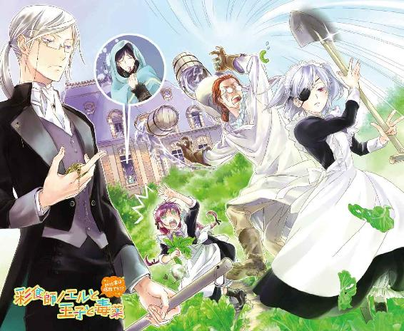
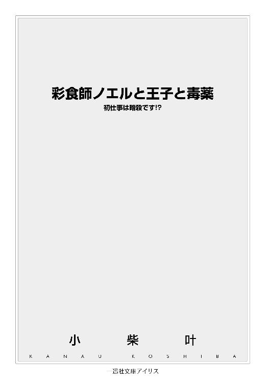
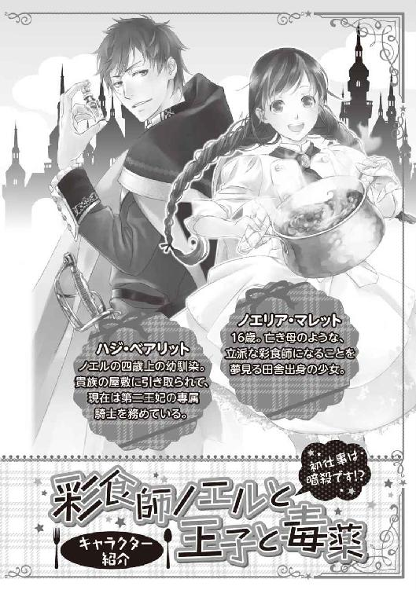
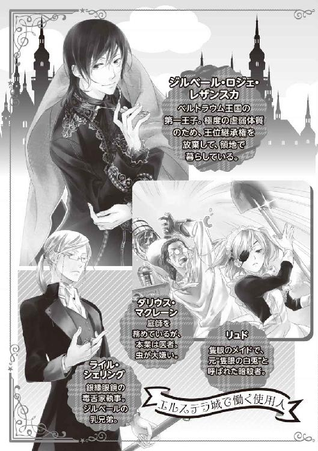
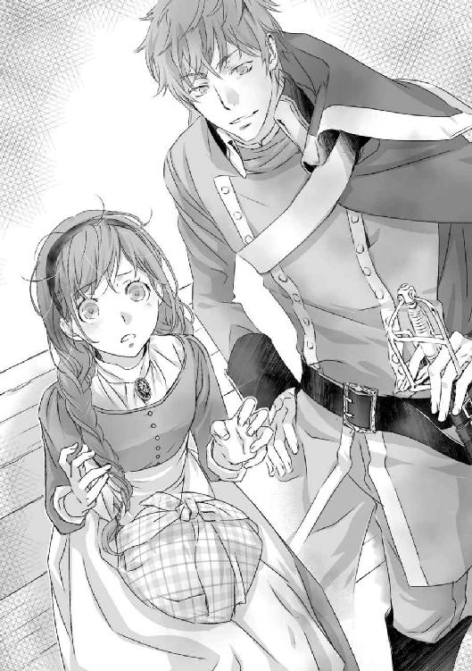
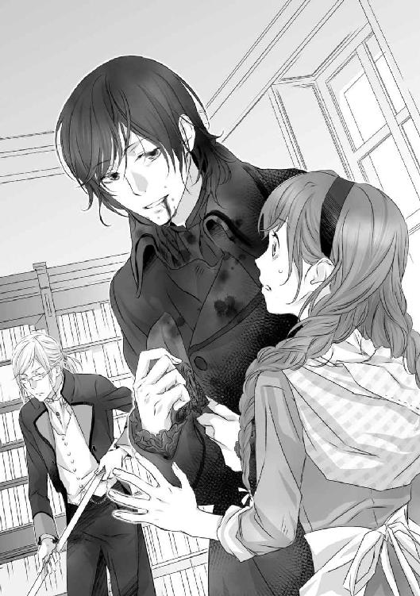
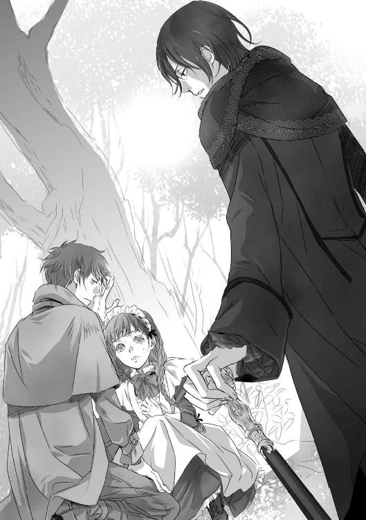
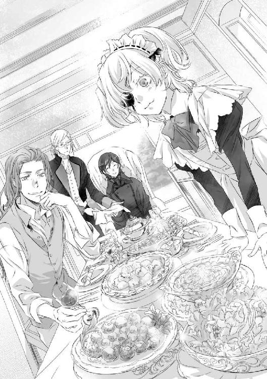
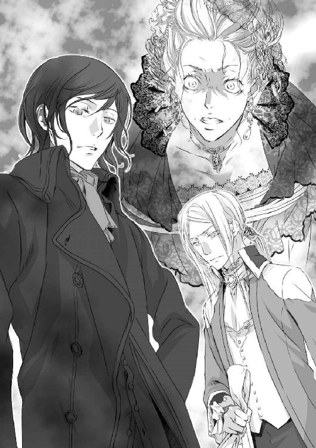
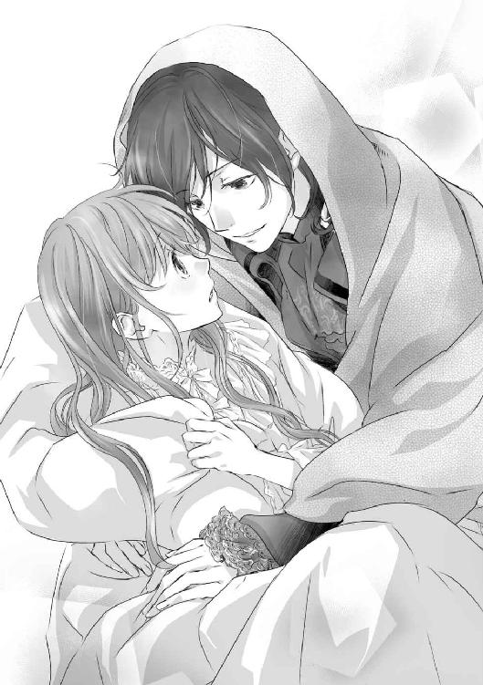

| 彩食師ノエルと王子と毒薬 初仕事は暗殺です!? (一迅社文庫アイリス) | |
| 小柴 叶 | |
| (2014) | |




イラストレーション ◆ ねぎしきょうこ
彩食師ノエルと王子と毒薬 初仕事は暗殺です!?
ドクン、ドクン......と。
今にも壊れそうなほど、心臓が大きく脈打っている。
（な、なんでこんなことになったの？）
直立不動で立ち尽くしているノエルは、これでもかと冷や汗を垂れ流していた。
そこは、金銀宝石で華々しく飾り立てられている、贅の限りを尽くした部屋だ。天井には巨大なシャンデリアが輝き、ふかふかした毛長の赤絨毯が足元に敷かれている。調度品から小物まで、室内に存在するすべての物が一級品だ。
こんなにも豪奢な部屋、極貧の村娘とは無縁だったはず。
少なくとも、数時間前までは――。
（こんなに重たい空気、耐えられない......心臓、壊れそう......）
ごくりと生唾を飲み込み、恐怖と怯えが滲む翡翠の瞳で〝その人物〟を捉える。
絢爛豪華な部屋の最奥。至るところに純金が使用された、真紅の椅子にゆったりと座す女性こそ、この場に在るどの品よりも価値がある。
彼女の名前は、ゼラフィーネ・アデル・レザンスカ。
ノエルが暮らすベルトラウム王国の、第二王妃その人だ。
「すべてを知ってしまったからには、わたくしの命令に従ってもらいますわよ」
冬の冷気を閉じ込めたような、ゼラフィーネの青い双眸に真っ向から見据えられ、ノエルの背筋を強烈な寒気が駆け抜ける。
（こ、これは何かの間違いよ。だって私、仕事を紹介してもらいにきたんだから）
もしかしたら、悪い夢を見ているのかもしれない――と。
ありふれた現実逃避をしようとしても、手のひらに感じるひんやりとした二つの感触が、それすら許してくれない。
「三ツ星彩食師として第一王子を毒殺する。それが、あなたに与える任務ですわ」
「......っ」
妖艶な口調で告げられた命令の内容に、思わず手の中にある物体を握り締める。
ノエルの手中で互いに擦れ合ったのは、中心部に紅玉がはめ込まれたクロス型の勲章と、無色透明な液体が入ったガラス製の小瓶だった。一見すると水のように見える小瓶の中身は、極めて少量でも人を死に至らしめる猛毒だ。
（私はただ、彩食師になりたかっただけなのに......）
どこで、選択を間違えてしまったのだろう？
必死に頭を働かせようとしたが、上手く思考が纏まらない。唯一、この状況で断言できるのは、王妃お抱えの暗殺者になる予定など、これっぽっちもなかったということだけだ。
「諦めなさい。あなたはもう、逃れることなどできないのです。......たとえ逃げ出そうとしても、逃がしはしませんわ」
羽飾りのついた扇をパチンと閉じ、氷像のように美しい王妃は残虐に笑む。
色濃く紅が引かれたその唇は、小瓶に入っている本物の毒薬よりも尚毒々しく、絶望の滲むノエルの瞳に映った。
大陸随一の国土を誇る、ベルトラウム王国。
王都ティルカ・リューシェは、街全体が堅牢な石の砦に取り囲まれた、大規模な城塞都市である。砦を入ってすぐの門前には、様々な露店が立ち並ぶ噴水広場があり、多くの買い物客で賑わっていた。
「うわぁ、ここが王都なのね！ なんて大きい街なのかしら！」
砦の門を潜って広場の片隅に停車した馬車の荷台から、一人の人物が降り立つ。
僅かに幼さが残る顔立ちをした、小柄な少女だ。裾が長い地味な色合いのドレスの上に、使い込まれた白いエプロンを着けている。巨大な風呂敷包みを背負ったその姿は、いかにも田舎から出てきた村娘に見えた。
「おじいさん。色々と親切にして下さって、ありがとうございました」
小走りに馬車の前方へ向かった少女――ノエルは、御者台に座る老人へ頭を下げる。その弾みで、両肩に垂れている赤葡萄色の三つ編みが大きく揺れた。
好々爺然とした老人は、「顔を上げなさい」と朗らかに笑う。
「目的地が同じだったのだから構わんよ。むしろ、年若い娘さんを狭っ苦しい荷台なんぞに乗せてしもうて、すまんかったのぉ」
「そんなことありません！ おじいさんが馬車に乗せてくれたお陰で、無事に王都へ辿り着くことができました。あのまま街道を歩き続けていたら、道端で野宿するはめになっていたと思います」
「まぁ、おそらくは......そうなっていたじゃろうなぁ」
随分と無謀なことをする娘さんじゃ――と、老人から苦笑交じりに言われ、情けないやら恥ずかしいやらで、ノエルは更に頭を下げて赤面した顔を隠す。
（まさか、隣町から王都までこんなに距離があったなんて......予想外だったわ）
ど田舎にある農村育ちのノエルは、王都周辺の地理なんてさっぱりだった。
最寄りの町へ到着するまでは、もったいないとは思いつつ、渋々お金を払って馬車に乗ってきた。けれど、最後の最後で貧乏性の悪い癖が出てしまった。
一番近い町からなら、徒歩でも閉門前に王都へ到着できるだろう。毎日、農作業の手伝いをしていたので、体力と足腰には自信がある。何より、少しでも旅の費用を浮かせたい――と、ろくに距離も確認せず、馬車代をケチった結果が野宿一歩手前だ。
「これから旅をする時は、近場でも必ず馬車を使います」
のろのろと顔を上げながら、蚊の鳴くような声で反省の言葉を述べれば、「そうしなされ」と老人が鷹揚に頷く。
「さて。儂は積荷を依頼主の元へ届けねばならんが、娘さんは彩食師協会とやらへ行くんじゃったか？」
「はいっ！ あ、でも......」
小動物を彷彿とさせる大きな翡翠色の瞳で、ノエルは空を見上げる。
西の方角が、微かな朱に染まり出していた。季節は初春。冬よりも日が延びたとはいえ、この分だと目的の場所へ着く頃には、すっかり暗くなっていそうだ。
「今日のところは宿を取って休むことにします。こんな時間なので、試験の受け付けも終了しているでしょうし」
「その方が良いかもしれんのぉ。長旅で疲れているはずじゃ、今夜はゆっくりと休みなされ。明日の試験が上手く行くよう、この老いぼれも願っておるよ」
「嬉しいです！ 試験に合格したら、真っ先にご馳走を作りに伺いますね」
拳を握り締めて興奮気味に宣言すれば、老人は「期待しておるよ」と目元を綻ばせ、緩やかに馬車を発進させる。
「では、頑張るんじゃぞ」
去り際に老人は、被っていた帽子を軽く上げて励ましの言葉をくれた。
元気良く頷いたノエルは、大きく手を振って馬車を見送る。
（親切なおじいさんと出会えて、命拾いしたわ）
王都周辺は国王軍の厳しい監視下にあるため、比較的安全だと聞いていた。それでも、屋外で野宿をする際の危険性は、決してゼロではないだろう。野盗や獣に襲われたら、呆気なく死ねる自信がある。
農具の扱いにかけてはプロだが、武器なんて持ったこともないのだから。
（これからは、何事にも慎重にならないといけないわね。今日みたいな幸運が、何度も続くとは限らないし）
風呂敷包みを背負い直しながら、ノエルは自らの行いを深く反省する。
「それにしても......」
改めて街の光景を見渡し、感嘆の息を漏らす。
「さすが王都ね、人やお店が一杯だわ！」
女性向けの小物や、刀剣を扱う店。色とりどりの花を商う売り子もいれば、金物の修理に励む者もいる。遠くから眺めているだけでも心が弾んだ。
様々な品物を販売する露店の中でも、一際ノエルの目を引いたのは、食材や軽食を販売している一角だった。
（良い匂いがするけど、何を売っているのかしら？）
店先に並ぶ、見慣れない野菜や魚。旅人らしき男が口に運んでいる、パン生地に具材が挟み込まれた料理など。もっと間近で詳しく見たかったし、味も激しく気になった。
飽くなき探求心に突き動かされて、自然と足が店先に向かおうとするが、ノエルはすんでのところで踏み止まった。
（あ、危なかった......っ）
王都には遊びにきたわけではないのだと、緩んだ気持ちを引き締める。
早く宿を確保しなければ、満室になってしまうかもしれないし――自分の興味を満たすために、貴重な所持金を浪費することはできない。
（このお金は、お母さんが私に遺してくれた宝物よ。大事にしなくちゃ）
そっと手を当てたドレスの胸元には、丈夫な紐をつけて首から下げた財布が隠されている。
正直、母が貯めてくれていたお金には、どんな理由があろうと手を付けたくなかった。
決して多くはない金額だったが、貧しい生活を送る中で、これだけ貯めるのには苦労しただろう。小銭が詰まっていた大きな瓶には、「ノエルの結婚資金」と書かれたラベルが貼られていたので、尚更使用することが躊躇われた。
ノエルは年頃の娘にしては珍しく、初恋すら未経験な恋愛初心者だ。お見合いをしたこともないので、結婚をする予定もない。それでも母は、いつか訪れるであろう娘の門出を祝うため、昔から準備をしてくれていたのだ。
（貯金は未来の結婚資金として、大切に取っておくべきだと思ったけど......私には、どうしても叶えたい夢があるの）
母の遺産を使って王都へやってきたのも、その夢を叶えるためだ。
（私、お母さんと同じ〝彩食師〟になりたい）
ノエルは、エプロンのポケットから十字の形をした物体を取り出す。
手のひらに乗せたそれは、中心部に紅玉が煌めく勲章だった。
（ごめんなさい、お母さん）
母の物だった美しい勲章を握り締め、ノエルは心の中で謝る。
（せっかくお金を貯めてくれていたのに、結婚はまだまだ先になっちゃうかも......というか、できるかどうか不安だわ。だって私、お母さんみたいに綺麗じゃないもん）
生前の母は、村一番の美人だと評判だった。
対して、娘のノエルは至って平凡な顔立ちをしている。小柄な体型に加え、大きなどんぐり眼のせいで、年齢よりも下に見られることが多い。少しでも大人びて見えるように、落ち着いた色の服を着ているが、地味な印象を付加するだけに終わった。
（結婚は......正直、無理かもしれない。その代わり、お母さんと同じ道を歩くことなら、私にもできるわ）
容姿が似なかった分、ノエルが母から譲り受けたもの。
それは、天才的な料理の才能だった。
（どんなに難しくても、絶対に三ツ星ランクの称号を手に入れてみせる！ そして、お母さんみたいな立派な彩食師になるんだから！）
決意を新たにしたノエルは、手にしていた勲章をポケットの奥深くにしまい、宿屋を探すために歩き出した......が、張り切った時ほど行動は裏目に出るようで。彼女は宿屋のある区画とは真逆の方向に、堂々とした足取りで向かう。
――ノエルが宿に到着したのは、街中をたっぷりと二時間も彷徨った後だった。
＊ ＊ ＊
西大陸デュアメールには、彩食師協会という特殊な組織が存在する。
大陸の中心部にある、食の都ル・グランに協会の本部があり、各国の首都には支部が置かれている。どこの国にも属さない協会は、独自の法律を制定し、自衛を目的とした騎士団まで配備しており――王族ですら逆らうことが不可能な 独立機関として機能していた。
飲食に携わる職に就く者は、彩食師協会の本部か支部へと赴き、然るべき試験を受ける必要がある。試験は常時受け付けられており、筆記と実技の両面から、受験者の料理に関する知識と技量を図るのだ。
試験に合格した者は〝彩食師〟と呼ばれ、実力毎に三つのランクに振り分けられる。
下から、「一ツ星」「二ツ星」「三ツ星」と。星の数が増えるほど、腕の良い彩食師であることが示される。そして、ランク毎に定められた色の宝石がはめ込まれた勲章が、彩食師の身分を証明するのだ。
＊ ＊ ＊
ベルトラウム王国の王都ティルカ・リューシェには、砦を背にして、東と西と北に三つの高台がある。
砦の大門と対面する北の高台には、王族の住まいである絢爛豪華な王城。東の高台には国教の神を祀る壮麗な大神殿が鎮座し、西の高台では絶対不可侵の彩食師支部が、静かな存在感を放っていた。
「つ、ついに辿り着いたのね......っ！」
早朝の彩食師協会ベルトラウム支部前で、ノエルは感動に打ち震えていた。
正面玄関がある巨大なホールを中心に、いくつもの回廊が縦横無尽に伸びて棟同士を繋いでいる。それぞれ、用途によって建物を使い分けているのだろう。葡萄の房を彷彿とさせる協会の造りは、王城や大神殿とは違い、外観よりも機能性を重視していた。
（彩食師支部が目立つ場所にあって、本当に良かったわ）
王城、大神殿、彩食師協会支部は、王都内であればどこからでも目に入る。
建物自体が目印となるため、ノエルでも迷わずここまで辿り着けた。
（昨日は、散々な目に遭ったものね......）
宿を探して二時間も迷子になったことを思い出し、自ずと遠い目になる。
リサ村という小さな農村が、ノエルの故郷だ。
なだらかな丘の麓に、ひっそりと存在しているような村である。野菜の出荷時や、出稼ぎに出る大人以外は、家と畑を往復するだけの毎日を送っていた。買い出しなどは週に一度、雑貨屋の夫妻がまとめて行っていたし――ノエルはこれまで、村から出たことがなかった。
それでも、方向感覚はしっかりしていたので、地図を頼りに王都までやってくることができた。旅の途中で立ち寄っていたのも、小規模な宿場町ばかりだったので、初めての土地でも迷わずに済んだ。
しかし、国の要である王都は一味も二味も違った。
大小異なる家々がひしめき合うようにして建ち並ぶ光景は、さながら難解な迷路だ。
街並みは綺麗に区画整理されているが、どの通りも似たように見え、同じ道を通ったことにも気付けなかった。勇気を出して通行人から宿の場所を聞いても、律儀に道を譲りながら歩いていたせいで、知らぬ間に脇道へ逸れて目的地から遠ざかってしまう。
そんなノエルが、どうやって宿まで辿り着いたのか？
答えは、街中を巡回していた騎士に保護され、手を引いて案内してもらったから――だ。
（この歳で迷子になるなんて情けないわ。助けてくれた騎士さんにも、子供だって勘違いされちゃったし......）
ベルトラウムの法律では、十五歳から成人と見なされ婚姻が許される。
十六歳のノエルは立派な大人だ。けれど、童顔＋華奢な体型のせいで、未だに子供扱いされることが多い。道案内をしてくれた騎士にも、「一人でも泣かないなんて偉いなぁ」と褒められた挙句、飴玉までもらってしまった。
（飴は美味しかったけど、もっとしっかりして、大人らしい行動を心掛けないと！）
両手で頬をピシャリと叩き、ノエルは自分自身に活を入れる。
家族と呼べる者は、母しかいなかった。父は自分が生まれる前に亡くなったらしい。病気だったのか、事故だったのか、原因すらも分からない。母が頑なに、父に関することを語ろうとしなかったからだ。
形見として渡された、白百合の刻まれた緑瑪瑙のブローチが、ノエルと父を繋ぐ唯一の絆である。
（天国のお父さん、お母さん。これから私は、独り立ちするための第一歩を踏み出します）
襟元を飾るブローチは左手、エプロンのポケットに入っている勲章は右手で。同時に両親の形見に触れたノエルは、強い意思を秘めた眼差しで、彩食師支部の正面玄関を見据えた。
天涯孤独の身になった今こそ、己の力だけが頼りだ。
（私の力は料理の才能。それしかないんだから、絶対に失敗できない......っ！）
目指すは彩食師試験、一発合格。
財布に残っている残金も、丁度一回分の受験費用だけである。
後に引けない崖っぷちに立たされたノエルは、震えそうになる足を叱咤して歩き出す。目標は、正面玄関ホールにある受験受付窓口だ。
この時のノエルは、想像もしていなかった。
独り立ちに向けた最初の一歩を踏み出したせいで、人生の断崖絶壁から転がり落ちる未来が、すぐそこに待ち受けていることを――......。
＊ ＊ ＊
正面玄関ホールを潜ってから出てくるまで、僅か十分。
支部前にある休憩用のベンチに座り、ノエルは頭を抱えて項垂れていた。
「ああああああ......っ！」
小刻みに震えながら低い呻き声を発しているせいで、周囲の視線を一身に集めている。が、誰も関わり合いになりたくないようで、すぐさま顔を背けて足早に立ち去って行く。
それだけ、今のノエルは不気味な様相を呈していた。
「ど、どどどどど、どうしよう！ 私の大馬鹿者ぉ～～っ！」
何が、「絶対に失敗できない」だ。試験費用さえ払えば、受験することができると思い込んでいた。自惚れにしか聞こえないだろうが、試験に合格する自信もあった。母から学んだ料理の腕だけは、誰にも負けないと自負していたからだ。
だがそれも、〝受験できれば〟の話である。
どれだけ実力があっても、試験を受けられなければ意味がない。
「何で事前に資料を取り寄せなかったのよ！ 受験費用ばっかり気にしてたなんて、守銭奴にもほどがあるわ！」
髪が乱れるのも構わず、ガシガシと頭を掻きむしる。駄々をこねるように、座ったまま何度も地団太まで踏み――やがてノエルは、糸が切れた操り人形のように身動きを止めた。
「......こんなの、知らなかったじゃ済まないわよ」
母の勲章を両手で強く握り締め、ぽつりと呟く。
彩食師試験を受けるためには、満たさなければならない条件が二つあった。
一つ目は、試験費用を用意すること。これは、母の遺産があるから大丈夫だった。問題は二つ目の条件だ。現役の彩食師に弟子入りをして、推薦状を書いてもらう。もしくは、彩食師協会が運営する、彩食師専門学校を卒業する必要があったのだ。
受付窓口の職員にそう説明されたノエルは、心臓が止まるほどの衝撃を受けた。
（失敗どころか、大失敗......ううん。それ以上の致命傷よ）
村へ戻るにしても、財布には試験費用しか残っていない。
野草で飢えをしのぎ、危険を承知で野宿をしながら、徒歩で帰郷したとしてもそれからどうする？ 母は食堂兼宿屋を経営していた。彩食師の資格がなければ店を継ぐこともできない。村の畑仕事を手伝っても、税を払うだけで精一杯だろう。
生活費に回すお金がなければ、村に帰っても暮らしていけない。
「もう、おしまいだわ......」
途方もない絶望の渦に呑み込まれ、目の前が暗くなりかけた――その時だった。
「おーい、チビ助。何がおしまいなんだ？」
頭上から、からかうような声が降ってくる。
反射的にノエルが顔を上げると、一人の青年と目が合った。
僅かに目尻が垂れた榛色の瞳が、ジッとこちらを見つめている。栗色の短い髪をそよそよと春風に遊ばせる姿は、どこか軽い印象を受けた。右目の下にある泣き黒子も、青年の軟派な雰囲気に拍車をかけている。
（でも、軍服を着てるし......騎士様よね？ 剣まで持っているもの）
協会騎士団の者かと思ったが、濃緑色の軍服に刺繍されている紋章は国王軍のものだ。
「国王軍の騎士様が、私に何か御用ですか？」
傷心中にチビ助呼ばわりされたせいで、若干刺々しい口調になってしまう。
中腰でノエルの顔を覗き込んでいた騎士は、あからさまに拗ねている彼女の態度に、ブハッと笑いを噴き出した。
「お前なぁ、マジで俺のこと忘れてんのか？」
「へ？」
何のことだろうと、ノエルは眉間に小難しい皺を寄せる。
謎の騎士は片手で両目を覆い、大げさに嘆く。
「アチャー、こりゃマジだわ！ マジで俺のこと忘れてやがる！」
「え、えっと......私達、どこかで会ったことありましたっけ？」
「会ったどころじゃ済まねぇよ」
グイッと右腕を引かれ、ノエルは前のめりに倒れかける。「危ない！」と思った次の瞬間には、すっぽりと青年の胸元に抱き込まれていた。

突然の出来事に呆然としているノエルの耳元へ唇を寄せ、青年が甘い声で囁く。
「脇腹にある黒子、まだ残ってるのか？」
「......っ!?」
衝撃的な一言を発した青年を、ノエルは思わず突き飛ばしてしまう。
しばらく、陸に上がった魚のようにパクパクと口を動かしていた彼女は、酷くどもりながらも真っ赤な顔で叫ぶ。
「な、ななななな、なんで私の黒子の場所を知ってるんですかっ!?」
数歩後ろへ蹈鞴を踏むも、すぐに体勢を立て直した青年はニヤリと口端で笑む。
「そりゃあ、この目で見たからに決まってんだろ。あと、枕を抱き締めないと眠れなかったよな？ どうせ一緒に寝てたんだから、俺に抱き付いても良かったんだぜ？」
「いやあああ――っ！ どうしてそんなことまで知ってるんです!?」
「生憎、どっかの誰かさんと違って、俺は記憶力が良いからな。お前のことなら何でも覚えてるぜ？ あー、そうそう。結婚の約束もしてたっけか」
「け、結婚!?」
一体これは、どうなっているのだ？
次から次へと飛び出す爆弾発言に、ノエルは目を白黒させる。
（おかしいわ。私、誰かと結婚の約束なんかした覚えないわよ？ ま、まさか、これが巷で噂の結婚詐欺!? でも、黒子の場所や、寝る時の癖を知られてるのはなんで？ あっ！ もしかして、超能力者だったりして!?）
初対面の人間では知り得ない情報を、青年は当然の如く披露してみせた。
果たして彼は、ただの知り合いなのか、結婚詐欺師なのか......それとも、ダントツの意外性を誇る超能力者なのか？
本格的に混乱し始めたノエルに、さすがの青年も呆れたように嘆息する。
「これだけヒントを出してやったのに、まだ思い出さねぇのかよ？ まったく、薄情な奴だよなぁ。昔は『ハジ兄さんのお嫁さんになる！』とか言って、暇さえあれば俺のことを追っかけ回してたじゃねぇか」
「――っ！」
青年の口から出た「ハジ」という名称には、聞き覚えがあった。
とても、懐かしい名前だ。その名を持つ人物であれば、ノエルの黒子や眠る時の癖について、詳しく知っていてもおかしくはない。結婚したいと申し出たのも事実だ。
「う、嘘......っ！ あなた、ハジ兄さんなの？」
大きく目を見開き、信じられないと両手で口元を覆う。
無造作に前髪を掻き上げながら、青年は再度深々とため息を吐く。
「名前を出してやっとか。気付くの遅過ぎだろ。俺なんか一目見た瞬間に、お前がチビ助ノエルだって分かったんだぜ？ 五年前のまんま変わってねぇな」
「こ、これでも成長してるわよ......多分。と言うか、ハジ兄さんが変わり過ぎなのよ！ 背がすっごく伸びてるし、声も低くなっちゃって、村にいた頃と雰囲気が全然違うもの。騎士の恰好までしてるから、本当に誰かと思ったわ」
「でも、これはこれで似合ってるだろ？」
軍服の襟元を直しつつ、青年は茶目っ気たっぷりに片目を閉じた。
彼の名前はハジ・ベアリット。ノエルと同じ村で生まれ育った、四歳年上の幼馴染だ。五年前、貴族の屋敷に養子として引き取られ――それっきり、音沙汰が無かった人物である。
「確かに服は似合ってるけど、なんでハジ兄さんが騎士になってるの？ それ、国王軍の軍服でしょ？」
「養子に行った先が、代々王家に仕える騎士の家系だったんだよ。朝から晩まで剣術の稽古ばっかさせられたお陰で、今じゃ腕前はかなりのもんだぜ？」
「そ、そうだったんだ......」
近況報告の手紙もくれないほどだ。貴族の仲間入りを果たしたハジは、贅沢三昧の楽しい毎日を過ごして、自分のことなど忘れてしまったのかもしれない......と。子供だったノエルは勝手にそんな想像をして、深く落ち込んだりもした。
けれど、実際は違っていて――......。
騎士になるため、慣れない環境下でハジが懸命に努力していたことも知らず、とんだ勘違いをしていた。申し訳ない想いで一杯になり、ノエルは気まずさから視線を泳がせる。
「それより、なんだってお前が王都にいるんだよ？ イリアおばさんも一緒なのか？」
何気ない口調で尋ねられ、思わず肩がピクリと揺れた。
イリアとは母の愛称だ。その名前を耳にした途端、限界まで張られていた緊張の糸が、ぷつりと切れた。
「う、ううう......っ」
「？ おい、どうした？」
会話の途中で俯いたかと思えば、またしても低い声で呻き出したノエル。
怪訝そうに眉を顰めたハジが、「何か悪いモンでも拾い食いしたか？」と、彼女の顔を覗き込もうとした次の瞬間――、
「うわああああん！ ハジ兄さあぁぁぁん！」
「うぼぁっ!?」
鳩尾に頭突きする勢いで、ノエルがハジに抱き付いた――いや。実際、鳩尾に頭突きが綺麗に決まり、不意を突かれたハジは痛みに悶絶した。
田舎娘にしがみ付かれ、腹を押さえて蹲る国王軍の若き騎士。
彩食師支部を訪れる人々は、この奇妙な組み合わせを不思議そうに眺めていた。
＊ ＊ ＊
いきなり叫び出した挙句、鳩尾に頭突きまで叩き込んでしまった。
故意にしたことではないが、我に返ったノエルは何度も頭を下げてハジに謝った。
「ほんっとーに、ごめんなさい！ ちょっと、気が動転しちゃって......でも、悪気はなかったの！ これだけは信じて！」
「悪気があって堪るかよ。騎士団の連中に見られてたら、俺の立場が割と本気で危なくなってたぞ？」
「ご、ごめんなさい......」
「まぁ、あれだ。チビ助の頭突きも避けられなかった俺も、修業不足だったかもな」
腹部の激痛が治まってきたハジは、「これ以上、石頭が当たったら洒落になんねぇ」と軽口を叩き、ノエルの謝罪を止めさせた。
「んで？ 急に取り乱すくらいだ。何かあったんだろ？」
話してみろよと、ベンチに腰を下ろしたハジから促される。再会した当初は、遊び人っぽくなってしまった幼馴染に戸惑ったが、面倒見の良い性格だけは変わっていないようだ。
久しぶりに感じた幼馴染の優しさに、ノエルはこれまでの出来事を正直に語り出した。
母が亡くなったこと。彩食師になりたくて、王都に出てきたこと。そして――受験条件の一つを見落としていたせいで、彩食師試験が受けられなかったこと。
すべて打ち明け終わると、ハジはしばし無言で考え込んだ。
やがて、思考を終えて顔を上げた彼は、にっこり微笑んで口を開いた。
「俺が、どうにかしてやろうか？」
「よろしくお願いします！」
地獄のどん底まで転がり落ちたノエルは、差し伸べられた幼馴染の手を迷わず取った。
それが救いの手ではなく、更なる地獄の深みへと突き落とすものだなんて......この時の彼女には、知る由もなかった。
＊ ＊ ＊
仕事を紹介してやるよ――と。
親切な幼馴染に案内された場所は、どこからどう見ても王城だった。
メイドの仕事でも紹介されるのかと思いきや、連れて行かれた先は厨房ではないか。食材や調理器具は揃っているが、不思議なことに、働いている者は誰一人として見当たらない。
にこやかな笑みを湛えたハジは、戸惑っているノエルにこう言った。
「お前、彩食師になりたいんだろ？ だったら、城で働いてるコックの弟子になれば良い。そうすりゃ、給金ももらえて推薦状まで書いてもらえるじゃねぇか。でも、うちのコックは厳しいぞ？ 弟子になりたきゃ、その舌を満足させるだけの料理を作って見せるんだな」
つまり、厨房を貸すから弟子入り志願用の料理を作れということか。
王城で働く彩食師は、三ツ星ランク内でも上位に輝く料理の腕前を誇る。そんな人物に弟子入りできるだけでも驚きなのに、給金まで支払われるときたものだ。実力を認めてもらえれば、受験に必要な推薦状を書いてもらえるかもしれないし、断る理由なんてどこにもなかった。
だが、この世のうまい話には得てして裏があるもので――......。
（な、何でこんなことになったの？）
この疑問を胸中で呟いたのは、果たして幾度目だろう。
前菜から、スープ、メインとなる魚や肉料理。ワインに合うチーズ料理に、彩り鮮やかなサラダ、食後のデザートまで。ノエルが張り切って作ったフルコースは、なぜか第二王妃・ゼラフィーネの私室に運ばれた。
問題は、料理の作り手であるノエルまで、王妃の御前へ連行されたことだ。
（私の作った料理を、どうして王妃様が食べちゃったのかしら？ お城で働いてるコックさんが、味を見てくれるはずだったわよね？）
料理を一口ずつ食べて、ゼラフィーネは「まぁ、合格でしょう」と呟いた。
コックに代わって、弟子入りの合格がもらえたのだろうか？ ノエルが呑気にそんなことを考えていると、王妃の傍に付き従っていたハジから、二つの品物が手渡された。
偽の三ツ星彩食師勲章と、毒薬入りの小瓶だ。
（合格って、犯罪者としてってこと......？）
今までまっとうに生きてきたというのに、あんまりな評価である。
与えられた仕事も、事前に聞いていたものと違う。彩食師になるため、コックに弟子入りを志願したにも拘わらず、なぜ第一王子の暗殺を命じられなければならない。
「ハジ兄さん、これって冗談よね？」
震える声でハジに問えば、呆れたようにため息を吐かれる。
「冗談でこんなこと言えるわけねぇだろ」
「そんなっ！ 彩食師勲章は偽造するだけでも重罪なのよ？ 偽の勲章を使用して、彩食師でもないのに飲食物を振る舞うことも、決して許されない罪だわ。それに、料理を使って王子様を毒殺するなんて......」
「この期に及んで、できないとでも言うつもりかしら？」
手中で扇子を弄びながら、ゼラフィーネが気だるげな口調でノエルを諭す。
「いい加減に理解しなさい。あなたに拒否権はないのです。あくまでも、わたくしの命に背くと言うのであれば――......」
氷塊の如く凍て付いた心を持つ王妃は、ノエルの近くに立つハジへと目配せする。
無言で頷いたハジは、腰に下げた剣の柄へ手をかけた。彼は目にも留まらぬ速さで、研ぎ澄まされた白刃を鞘から抜き放つと、その切っ先をノエルの喉元に突き付ける。
「ハジ、兄さん......どうして......？」
喉に感じる、冷たく鋭い感触。息をしているだけでも皮膚が裂けそうで、無意識に呼吸が浅くなった。
穢れを知らぬ翡翠色の瞳には、一切の表情を消した幼馴染の姿が映し出されている。
「悪いな、ノエル。今の俺はゼラフィーネ様の専属騎士なんだ。この御方に刃向う者は排除する。たとえ、お前であっても容赦はしない」
「......っ！」
見たこともない冷たい顔で、聞いたこともない残忍な言葉を吐く。
（こんなの、私の知っているハジ兄さんじゃない......っ！）
村にいた頃の彼は、言葉遣いこそ悪かったが、誰にでも親切で優しかった。病人が出れば、夜中でも丘を越えた先にある森に入り、薬草を取ってくる。乱暴な役人が税の取り立てにきた時も、年老いた村長を庇って殴られたりしていた。
少なくとも昔の彼は、何があっても他人に刃を向ける人物ではなかった。
「もう一度言いますわよ」
放心状態のまま、硬直しているノエルを一瞥して。
扇を閉じたり開いたりしながら、ゼラフィーネが淡々と語り出す。
「あなたの役目は、第一王子ジルベール・ロジェ・レザンスカを毒殺すること。三ツ星彩食師であれば、奴の城に潜り込むこともできるでしょう」
城に、潜り込む？
ノエルはその一言に違和感を抱いた。
「......ジルベール様は、王城にいらっしゃらないのですか？」
剣の切っ先が当たっている喉が傷付かぬよう、慎重に声を絞り出す。
その刹那。ゼラフィーネの両手に力がこもり、耳障りな音を立てて扇子が圧し折られた。
「なぜ奴が、王城にいなければなりませんの？ あの者は自ら、王位継承権を放棄したのです。この城は、王の器に相応しき者が住まう場所。わたくしの可愛い息子、アレクシスだけの物ですわ。奴の居場所など、どこにもありはしません」
それなのに――と、麗しい王妃の表情が憎しみに歪む。
「あの男は王位継承権を放棄してからも、裏で政に口を出しているとか。身の程知らずな性格は、下級貴族の母親にでも似たのかしら？ 辺境の領地に隠居して尚も、引き際を知らないとは......大方、王位が惜しくなり、陛下や大臣達に取り入ろうとしているのでしょう」
圧し折った扇子を床へ投げ捨て、ゼラフィーネは親指の爪を苛立たしげに噛む。
「あんな女の子供に、王位まで渡してなるものですか。どのような手段を使ってでも、この世から葬り去らなければ。――屍は、玉座に座れませんもの」
そこで王妃は、「そうですわ」と手を打ち合わせる。
楽しい遊びでも思い付いた、子供のように無邪気な声だった。けれど、彼女の口元に刻まれた笑みからは、紛れもない狂気が滲み出ている。
「何事にも、やる気が必要ですわね。ですから、あなたが確実にジルベールを殺せるよう、わたくしがその気にさせてあげましょう」
「えっ」
「あの男を殺せなければ、あなたの命が無いのは当然のこと。けれど、一人で黄泉路を歩くのは心細いでしょう？ ですから、道連れを用意してあげますわ。顔見知りの者......それも大勢いれば、あなたも寂しくないでしょう？」
ニヤリ、と――蛇のように笑った王妃に、全身が戦慄した。
信じられない。いや、信じたくなかった。村から出たことがないノエルにとって、顔見知りの心当たりなど一つしかない。
蒼白の顔色で立ち尽くすノエルに、ゼラフィーネは無情にも言い放つ。
「ジルベールを仕損じれば、わたくしの兵にあなたの故郷を襲わせますわ。女も子供も、一人残らず皆殺しに処す。――さぁ、これで少しはやる気が出たかしら？」
「そ、そんなの......駄目です、止めて下さい！」
相手が一国の王妃であることも忘れ、悲鳴のような声で懇願する。
小さくて貧しい農村だが、ノエルにとっては母との想い出が詰まった、宝物のような場所なのだ。暮らしているのも朗らかな人々ばかりで、家族同然の付き合いをしていた。母を失って間もないのに、第二の家族である村人達まで亡くしたくはない。
ノエルは藁をも掴む思いで、自分に剣を向けているハジへ必死に訴える。
「お願いよ、ハジ兄さん。こんなことは止めさせて！ だって村には、ハジ兄さんの家族もいるじゃない！」
けれど、ハジの反応は冷淡なものだった。
光の消えた無感動な眼差しで、「それがどうした？」とノエルを突き放す。
「騎士である俺にとって、主の命令は絶対だ。たとえ家族が殺されることになったとしても、命令違反をするつもりはない」
「ふざけないで！ なんの罪もない村の人達を見殺しにすることが、騎士のすることだって言うの!?」
「わりぃな。主の望みを叶えるのも、騎士の務めなんだよ」
それに――と続け、ハジは残酷な指摘をする。
「確実に村を救う方法ならあるだろ？ お前が、ジルベール殿下を殺せば良い」
「無理よ、私にはそんなことできないわ！」
「だったら、このまま俺に殺されて終わりだな。村のみんなも全員死んじまうぞ？ お前が、ゼラフィーネ様の命令に背いたせいでな」
「......――っ」
自分の選択が、村人達の命を奪ってしまう。その事実がノエルの胸を容赦なく抉り、激しい痛みと、底無しの絶望を呼び寄せた。
足から力が抜け、床に敷かれた毛足の長い絨毯の上にへたり込む。
（私はただ、お母さんと同じ道を歩きたかっただけなのに......）
村にある食堂兼宿屋は、あまり儲かってはいなかったけれど。心から嬉しそうな笑顔で、客に手料理を振る舞う母の姿は、今でも鮮明に思い出すことができる。
同時に、母の料理を食べて笑顔になる客達の顔も、しっかりと脳裏に焼き付いていた。
（......ごめんなさい、お母さん......）
いつか母のように、料理で人を幸せにしたいと夢見ていた。しかし、自分の命のみならず、故郷の村人達まで人質に取られたノエルに、迷う余地など残されてはいなかった。
運命に抗えない悔しさから、唇をきつく噛み締める。
口内に鉄の味が広がるのを感じながら、ノエルは料理で人を殺める覚悟を決めた。
ベルトラウム王国の南東部には、常緑樹の森林地帯が広がっている。
緑豊かなその地域一帯は、フェシュネールと呼ばれる領地だ。現在は、王位継承権を放棄した第一王子のジルベールが、領主を務めている。
（隠居しても命を狙われるだなんて、王族は大変なのね......）
舗装されていないでこぼこ道を、お馴染みの風呂敷包みを背負って歩きながら、ノエルは小さくため息を吐いた。
暗殺者がターゲットに同情するとは、なんとも奇妙な状況だ。
王都ティルカ・リューシェから、馬車に揺られ続けて五日。監視役として同行したハジと共に、フェシュネール領の都オーク・ロンドに到着したのが、つい先ほどのことだ。
暗殺計画を漏らせば殺す。逃げ出そうとしても殺す。怪しい素振りを見せても殺す。暗殺に失敗しても殺す――と。何度も繰り返しハジから脅された末に、ノエルは一時的に解放された。ジルベールの住まいに出向き、彩食師として雇い入れてもらうためだ。
（フェシュネールが、王都から離れた場所にあって良かったわ）
王妃ゼラフィーネに、ジルベールの暗殺を強要されてからというもの、ノエルの心は千々に乱れた。
他人の人生を奪うことになったのだ。いくら故郷の村を守るためであっても、決して許される行為ではない。罪悪感や恐怖、不安や極度の緊張に襲われ、夜も眠れなくなった。食事も喉を通らなくなり、移動中の三日間くらいは廃人のようになっていた気がする。
気持ちが切り替わったのは、四日目辺りからだった。
（いくら悩んだって、村のみんなを助けたい気持ちは変わらないんだもの。それなら、私がやるべきことは決まっているわ）
自分の大事なものを守るためには、他人を犠牲にするしかない。
腹を括ってからは、荒ぶっていた気持ちが麻痺したように落ち着いた。恐ろしくて堪らなかったハジの脅し文句ですら、平然と聞き流せるようになったくらいだ。我ながら、嫌な方向に成長したものだとノエルは自嘲する。
「それにしても、のどかな街ね」
オーク・ロンドは都と銘打たれているが、雰囲気はノエルの故郷と似ていた。
街の周囲を取り囲む森が、天然の要塞の役目を果たしているのだろう。王都のように、堅牢な砦はどこにも見当たらない。どの建物も温もりが感じられる木造建築で、街の中心部を流れる小川の音色が耳に心地良い。
道行く人々は質素な身形こそしているが、表情は活気に満ち溢れている。
地質も豊沃なようで、そこかしこに畑があり、様々な種類の野菜が植えられているのが見えた。良く晴れた昼時なので、名産品である木彫り細工を作るため、切り出してきた木材を運んでいる男達の姿もある。
（この領地がジルベール様に与えられたのも、納得だわ）
事前にハジから得た情報によると、第一王子のジルベールは、手が付けられないほどの虚弱体質なのだとか。
特に持病はないのだが、壊滅的なまでに身体が弱い。そのため、年中体調不良に見舞われ、発熱や貧血だけでなく、吐血までもが日常茶飯事だという。彼を診察した医者は、なぜこのような状態でも生きていられるのか、決まって首を傾げたそうだ。
ジルベールが自ら王位継承権を放棄したのも、この厄介な体質のせいだった。
「これほど脆弱な身体では、一国を統べる王になることはできますまい」
成人すると同時に、ジルベールは父王にそう告げた。
ジルベールが王位継承権を放棄することを、国王は最後まで渋っていたらしい。身体は貧弱・虚弱・脆弱の三拍子だが、ジルベールは政治的手腕に長けており、大臣達からも意見を求められる存在だったからだ。
けれど、最終的に国王は息子の意思を尊重した。
（緑が多くて、空気や水が澄んでいるこの街なら、療養するには最適よね。政治とか良く分からないけど、領地が小さければ、領主の仕事も少ないはずよね）
それなりの地位を与えつつ、それでいて負担を最小限に止める。生活環境にも、最大限の配慮がなされており......息子を想う国王の気持ちが、領地の雰囲気から伝わってきた。
ジルベールの母親である正妃ユスティニアは、産後の肥立ちが悪く、一人息子を生み落してすぐに亡くなっている。命懸けで出産したユスティニアや、国王の気持ちを考えると、麻痺していたはずの心がズキリと痛む。
（生きて欲しいと望まれている人を、どうして殺さなきゃいけないんだろう）
胸中に暗い影が落ちるが、後戻りすることはできない。
ノエルにも、生きていて欲しいと望む人達がいるのだから――。
（ここまで来ちゃったら、やるしかないのよ）
自分自身にそう言い聞かせているうちに、目的の場所へ辿り着いた。
ノエルが足を止めたのは、街の最奥。深い森を背にして佇む巨大な城の前だった。
「このお城だけ、街の建物とは造りが違うのね」
街中は木造建築ばかりだったが、城は見事なレンガ造りだ。
城を取り囲む鉄柵は、防犯よりも外観を重視しているのだろう。細くて頼りないが、美しい意匠が施されている。正面玄関へと続く門も、鍵こそかかってはいるが、決して威圧感を与えることのない優美な物だ。
森と寄り添うようにして建っている城自体も、目を瞠るほど素晴らしい。
王城のような派手さはないが、自然との調和が取れた落ち着いた外観。低木や芝生など緑が豊富で、花壇に咲いた瑞々しい花にまで、完璧な手入れが施されている。
歴史を感じさせながらも、古臭い印象はまったく受けない。むしろ、長い時を重ねたことで重厚さが増し、クラシカルな城の魅力が最大限に引き出されていた。
（これが、ジルベール様の暮らしているエルステラ城......っ！）
我知らず、ゴクリと生唾を飲み込む。
と、その時――、
「どちら様ですか？」
「ひゃあっ!?」
無防備な背後から声をかけられ、うっかり悲鳴を上げてしまう。
熱心に城を眺めていたせいで、人が近付いてくる気配を感じ取れなかった。慌てて振り返ると、燕尾服を纏った青年が、真後ろにピタリと立っているではないか。
（近っ！）
驚きのあまり、勢い良くその場から飛び退く。
そんなノエルの態度に、青年は形の良い眉を盛大に顰めた。
「何ですか、その化け物と遭遇でもしたような反応は」
実に不愉快です――と、細いチェーンが付いた銀縁眼鏡の位置を直しつつ、声に出してきっぱりと告げられる。
青年の率直過ぎる物言いに、ノエルは思わずぽかんとしてしまう。
（......この人、何者なの？）
初対面の相手にも平然と毒を吐く人物だが、顔立ちは怖いほど美しい。
頭の高い位置で結われた、銀糸のような癖のない長髪に、隙無く整った身形。菫色をした双眸は怜悧な光を湛え、見るからに神経質そうだ。右手に持っている箒だけが、異様にミスマッチである。
「それで、いつまで私を待たせるつもりですか？」
「へっ？」
何のことだろうと目を瞬かせていると、あからさまに嘆息される。
「私は先ほど、『どちら様ですか？』と尋ねたのですよ。貴重な労働時間を割いてまで、こうして待って差し上げているのに、いつになったら答えて下さるのです？ 簡単な質問も理解できないほど、頭の中身がお粗末なのでしょうか？」
「なっ」
――なんて、嫌味な人なんだ！
うっかり口に出せば、どんな反撃の言葉が飛んでくるか分からないので、心の中でここぞとばかりに絶叫する。
唖然としているノエルを尻目に、燕尾服の青年はズボンのポケットから、白銀に輝く懐中時計を取り出す。
「三分二十一秒のロスですね。さぁ、早く答えなさい。それとも、不審者として自警団に突き出される方がお好みですか？」
時刻を確認した青年から嗜虐的に微笑まれ、ノエルは血の気が引くのを感じた。
悪事を働く前から、自警団に捕まるなんて間抜け過ぎる。
「こ、答えます！ いえ、答えさせて下さいっ！」
「おや、愚図でも素早い反応ができるのですね。最初からそうして下さっていれば、私が時間を無駄にすることもなかったのですが」
「う、ぐ......っ」
答えなければ自警団行き。答えようとしても毒舌の嵐。何を言っても棘だらけの言葉を吐き散らされ、危うく心がポッキリと折れそうになる。だが、ここで押し黙れば更にねちっこく責められるだろう。
生憎とノエルに被虐趣味はないので、青年の要求通りに口を開いた。
「私はノエリア・マレットと申します。こちらのお城で専属彩食師を募集していると聞き、面接に来ました」
「あなたのような子供が彩食師？ ご冗談を。おままごとなら余所でやりなさい」
「子供じゃありません！ これでも十六歳で、立派な大人です。彩食師の資格だって......ちゃんと、持ってます」
偽物ですけどね、と。自嘲気味に胸中で付け足す。
眼鏡の蔓を押さえた青年は、「ふむ」と切れ長の両目を眇めた。
「正式な彩食師であれば勲章をお持ちのはず。お見せ頂けますか？」
「......どうしてあなたに、見せる必要があるんです？」
そうだ。これまで青年優位に話が進んでいたけれど、彼が何者なのか謎のままである。
ノエルから訝しげな眼差しを注がれ、青年は「これは失礼」と軽く会釈をした。
「私はライル・シェリング。ジルベール殿下の執事を務めております」
「えっ」
燕尾服を着ていたので、城で働いているのだろうと思っていた――が、よもや城主付きの執事だったとは。二十代前半に見える年齢と、箒を手にしていることも併せて、掃除中の使用人程度に認識していた。
愕然とした表情で固まっているノエルに、
「自己紹介が遅れてしまい、申し訳ありませんでした。ですが、不審者から城を守ることも執事の役目ですので」
慇懃無礼な執事は、そう言ってにっこりと微笑んだ。
＊ ＊ ＊
巨大な城の中は、不気味なほど人気が感じられなかった。
「あなたのような小娘......コホン。お嬢さんが、まさか三ツ星ランクの彩食師だなんて。いやはや、人は見かけによらないものですね」
二階の長廊下を歩きながら、世間話でもするような口調でライルが言う。
さらりと小娘呼ばわりされた。咳払いで誤魔化そうとしても、ノエルの耳にはしっかりと届いていた。
（確かに、人は見かけによらないわね）
箒で掃除をしている執事がいるのだからと、こっそり同意したのは内緒だ。
（それにしても、簡単に潜入できちゃったわ）
隠居した身とはいえ、ジルベールは一国の王子である。その居城に仕えようとしているのだから、入城前に厳しい審査を受けるはずだと思っていたが、彩食師勲章を見せただけで立ち入りの許可が下りた。
そこで、移動中にハジから聞いた〝ある事情〟を思い出す。
（エルステラ城に仕えた彩食師は、次々と辞めて行くんだっけ？ そのせいで、年中彩食師を募集してるみたいだけど......）
最長勤続記録は三ヶ月。最短に至っては、面接合格直後だとか。
第一王子の専属彩食師なんて、なりたいと思ったところで、容易になれるものでもない。だからこそ、一度得た栄誉あるその地位を短期間で手放す彩食師がいることに、ノエルは深い疑念を抱いていた。
（うーん、ライルさんにいびり倒されて嫌気が差した......とか？）
多分、そんなことを考えた罰が当たったのだろう。
「ふぼっ!?」
急に立ち止まったライルの背中に、ノエルは顔面から突っ込んだ。
変な声が出て恥ずかしいわ、打ちつけた鼻の頭が痛いわで涙目になる。ついでに、頭上から絶対零度の眼差しで見下ろされ、極寒の恐怖まで味わうことになった。
「このボンクラが。前を向いて歩くという、初歩的なことすらできないのですか？」
「す、すみません」
微かに赤くなった鼻を押さえて謝罪すると、呆れ交じりにため息を吐かれる。
「くれぐれも、殿下の前では粗相のないように。と言っても、愚鈍なあなたには無理な話かもしれませんね」
「？ 殿下の前って、何のことですか？」
きょとんと目を丸めて尋ねれば、再度ため息を吐かれた。
「馬鹿ですか、あなたは。自分から面接にきたと仰っていたではありませんか。だからこうして、わざわざ殿下の元へお連れしたのですよ？」
「......え」
そう言えば、自分がどこへ向かっているのか気にも留めていなかった。無事に城内へ入れた安心感から、気が緩んでいたせいだろう。
だからと言って、いきなり城主と対面させられるのは予想外過ぎる。
「面接って、ジルベール様にしてもらうんですか!?」
「雇い主なのですから当然でしょう。それに、うちの殿下は自ら選出した者しか傍に置きませんからね。他の誰が面接すると言うのです」
「それは、えっと......執事である、ライルさんが代わりに......」
「でしたら、この場であなたは不採用になりますがよろしいので？」
よろしくない！ それはまったくもって、非常によろしくない！
全力で首を左右に振ると、ライルは「それは残念」と言って眼前の扉をノックする。彼の言葉を信じるのであれば、この先にジルベールがいるのだろう。
（ど、どうしよう!? こ、心の準備が......っ！）
心拍数が跳ね上がった胸を押さえ、ノエルが緊張から震え出しそうになっていると、
「入って良いよ」
扉の向こうから、優しい声が響いた。
低過ぎず、高過ぎず。自然と耳に馴染む心地良い声だ。入室の許可が出ると、ライルが静かに扉を開く。
「失礼します。先日募集をかけた、新たな彩食師候補をお連れ致しました」
「おや？ 今回は随分と早く志願者が来たんだね」
春の暖かな日差しが差し込む南向きの窓辺に、一人の人物が佇んでいた。
病的なまでに色白な、二十歳前後の長身の青年だ。
肩に触れそうな長さの髪は、光の加減次第では藍色がかって見える艶やかな黒色で、肌の白さを一層際立たせている。シャツからベスト、上着やタイまで。黒一色の衣装を纏っているが、少しの威圧も感じさせない。
それはおそらく、青年が湛えている柔和な笑みのせいだろう。
（て、天使だ......っ！）
自分より年上の男性を、「天使」と表現するのもどうかと思うが、そうとしか言えないのだから仕方がない。それほど、青年の微笑みは慈愛に満ち溢れており、顔立ちも神が創り出した最高傑作のように美しい。
思わず見惚れていると、長い睫毛に縁取られた濃紺の瞳と目が合った。
「やあ、初めまし――......」
青年は、蕩けるような笑顔で挨拶をしようとした――が、その言葉は途中で不自然に途切れ、彼は微笑んだ状態のまま、「ゴフッ！」と盛大に吐血した。
「だ、だだだ、大丈夫ですかっ!?」
滑らかな顎を、ボタボタと鮮血が伝い落ちる。悲鳴染みた声で叫んだノエルは、まろぶように青年へ駆け寄った。
自分で聞いておいてなんだが、これだけ大量の血を吐いたのだ。明らかに大丈夫ではないはずなのだが、ノエルに背中をさすられる青年は、
「ありがとう、大丈夫だよ」
――と、相変わらず笑っている。
天使の微笑みも、血塗れてしまうと空恐ろしく感じられた。
「いやぁ、驚かせちゃってごめんね。良くあることだから気にしないで」
上着のポケットから取り出したハンカチで、青年は汚れた口元を綺麗に拭う。

ライルはと言えば、どこからか持ってきた使い込まれたモップで、床に飛び散った血を手際良く掃除している。
（目の前で主が血を吐いたのに、掃除を優先するだなんて......）
出会ってからずっと、ライルには冷ややかな対応をされ続けてきたが、ここまでの冷血漢だとは思わなかった。さすがのノエルも、眉を吊り上げて抗議する。
「ライルさん、こんな時に何をしてるんですか！」
「見てお分かりになりませんか？ 掃除ですよ、掃除。床板を張り替えたばかりなので、早くしないと血が染み付いてしまいますから」
「床板なんかより、人の命の方が大事でしょう!? 早くお医者様を呼んで下さい！」
ノエルが必死に訴えていると、青年から慈しむように髪を撫でられた。
「僕のこと、心配してくれるんだ。キミは優しい子だね」
「そ、そんな......突然血を吐いた人がいたら、心配して当然ですよ」
「でも、うちの執事はそうじゃないみたい。主よりも床板を大事にするなんてさ。ねぇ、ライル。この子の爪の垢を煎じてあげるから、ちょっと試しに飲んでみない？ とりあえず、桶で五杯くらい」
一頻りノエルの頭を撫でた青年は、無邪気にそんな提案をする。
床掃除を終えたライルは、強い語気で「お断りします」と切り捨てた。
「私に御身を案じて欲しいのであれば、日に何度も吐血しないで下さい。こうも頻繁では、慣れざるを得ませんので」
「でもさ、今日は少ない方だろう？ まだ二回目だし」
「ふむ。言われてみれば、顔色もいくらか明るいですね。お召し物も普段より薄着ですし。これほどお加減がよろしくなられたのは、三ヶ月振りくらいでしょうか？」
「いや、五ヶ月だね」
男二人のとんでもない会話に、ノエルの頬が引き攣る。
（これで体調が良いだなんて、冗談よね？）
どこからどう見ても、青年の血色は悪い。冬物の分厚い上着を身に付けた姿を、「薄着」と称するのも違和感がある。
何より、具合が良い人間は吐血などしない！
（万年体調不良とか、まるでジルベール様みたいだわ......って、あれ？）
そこでようやく、ノエルは思い出した。この部屋の主こそ、何名もの医者に匙を投げられた超虚弱体質な王子――ジルベール・ロジェ・レザンスカであることを。
「あ、あの......」
「どうしたの？ 何か質問かな？」
「えっと、ですね......もしかして、ジルベール様でしょうか？」
消え入りそうな声でおずおずと問えば、人懐っこい笑顔で「うん」と頷かれる。
「僕がジルベール・ロジェ・レザンスカ。王位継承権は放棄しちゃったけど、一応この国の第一王子で、今はフェシュネール領の領主をやっているよ」
（やっぱりだった――っっっ！）
予感が的中したノエルは、非礼を詫びようと勢い良く頭を下げた。が、背負っていた風呂敷包みが後頭部を直撃して、苦悶の呻きが口から飛び出す。
「いっ、たたた......」
痛みのあまり、目の前で火花が散った。
その場に蹲って悶絶するノエルを、冷え切った眼差しでライルが見下ろす。
「おかしいですね。私は粗相の無きようにと、事前にきつく言いつけておいたはず。ここが王城であれば、今頃あなたの軽い頭は、その貧相な胴体と離縁していたでしょうね」
「す、すみません......っ」
鈍痛を訴える頭を押さえたまま、喉の奥から謝罪の言葉を絞り出す。
一連の流れを見ていたジルベールは、しばし無言で瞬きを繰り返し......やがて、小さく笑いを噴き出した。
「今のは痛そうだったなぁ。大丈夫かい？」
床にしゃがみ込んでいるノエルに、ジルベールは手を差し伸べる。
細くて長い、滑らかな指。けれど手のひらは大きくて、男の人の手だと実感する。ノエルは反射的にその手を取ろうとしたが、触れる寸前で伸ばした腕を引っ込めた。
（やだっ！ 私ったら、何をしようとしてるの!?）
相手は、正真正銘の王子である。助け起こしてもらうなどもっての外だ。
そんなノエルの思考を読んだのか、
「こんな時くらい恰好つけさせてよ。女の子を助けるのが、王子の役目なんだから」
温和な口調でそう告げたジルベールは、自らノエルの手を掴む。
こうなってしまっては、手を振り払う方が失礼だろう。冷静な判断を下したノエルは、素直にジルベールの手を借りて立ち上がる。ライルから注がれる視線が、チクチクと肌を刺すように痛かったが。
「あ、ありがとうございました！」
「どういたしまして。それより、キミの名前は？」
「あ......」
そうだ。そうだった。
王子にだけ自己紹介させて、自分が名乗るのをすっかり忘れていた。今日はいつにも増してうっかりが多い。慌てて荷物を下ろしたノエルは、今度こそ深々と頭を下げた。
「私、あの、ノエリア・マレットと申します！ 親しい人からは、ノエルと呼ばれておりまして......それで、えっと......っ」
「落ち着いて。そんなに緊張されちゃうと、僕までドキドキして吐血しそうになるよ。ほら、顔を上げて深呼吸」
本気なのか、冗談なのか。にこにこと笑みを絶やさない表情から、ジルベールの本心を読み取ることはできない。
（どっちにしても、本当に吐血されたら大変よね）
ノエルが言われた通りに深呼吸をすると、ジルベールは満足気に頷く。
「良くできました。人間、自然体でいるのが一番だよ」
「は、はぁ......」
「さてと。ずっと立ちっぱなしで疲れちゃったし、だんだん肌寒くなってきたな」
ちょっと失礼と言い置き、ジルベールから背を向けられた。深呼吸の効果なのか、心に余裕が生じたノエルは、その間にこっそりと室内を観察する。
部屋の第一印象は、〝王子の私室にしては質素〟だった。
頻繁に吐血で汚しているせいか、床には絨毯が敷かれていない。東側の壁際には四つの本棚が並び、分厚い本が隙間無く詰まっている。窓辺にある執務机や、細かな模様が彫り込まれた棚からテーブルセットまで、すべてが温かみのある木製だ。
（全部、オーク・ロンドの街で作られた家具なのかも）
西の壁際にある広々としたベッドも、木で作られている。
そのベッドに腰を下ろしたジルベールは、暖かそうな毛布を頭から被った。一息ついて寛いだ彼は、「こんな恰好でごめんね」と眉尻を下げる。
「僕、物凄い冷え症だから毛布が手放せないんだ。年中こんな状態だから、なんだか蓑虫っぽく見えるでしょ？ あ、キミは虫とか平気？」
唐突に話題を振られたノエルは、多少まごつきながらも首肯した。
「平気です。農村出身なので、畑仕事の最中に良く見ていましたから」
「それじゃあ、野菜の世話とかもできるの？ 結構、力が必要でしょう？ 女の子にはきつくない？」
「野菜のお世話なら一通りできますし、力仕事も得意です。料理に使う小麦粉の袋とか運んでいたら、いつの間にか腕力が付いてしまって」
「そっか。なら、合格」
毛布に包まった蓑虫王子は、無垢な笑顔でさらりと言う。
ノエルが何のことか分からず、「へ？」と気の抜けた声を漏らせば、改めてジルベールが言い直してくれる。
「今日からキミは、エルステラ城専属の彩食師ってことだよ」
「でも、まだ面接が......」
「それなら、たった今、終わったじゃないか」
「えっ？」
一体いつから、面接が始まっていたのだろう？
まったく気が付かなかったせいで、合格の実感よりも戸惑いが圧倒的に上回っている。
「ライル、あれを」
「畏まりました」
ジルベールの命を受けたライルは、手にしていたモップを壁に立てかけ恭しく一礼する。
主の執務机へ向かった毒舌執事は、引き出しの中から一枚の羊皮紙を取り出し、ボードに挟んで持ってきた。
「雇用手続きに必要な契約書です。こちらの空白部分にサインをして下さい。――ご自分の名前くらいは書けますよね？」
ボードと共に羽ペンも受け取り、ノエルはぽかんとしたまま頷く。
流麗な文体で細々と何事か書かれているが、「私は忙しいのです。早くしなさい」と頻りにライルから急かされ、気抜けした状態で手早くサインを済ませる。すると、すぐさま契約書と羽ペンを取り上げられた。
署名された契約書をライルから受け取り、ジルベールは上機嫌でにっこりと微笑む。
「エルステラ城へようこそ。これからよろしくね、ノエル」
こうして、よく分からないうちに専属彩食師として採用されたノエルだったが――彼女が職場の黒々とした勤務内容を知るのは、もう少し後のことだった。
＊ ＊ ＊
城の一階。厨房に最も近い部屋を、ノエルは私室として与えられた。
ベッドに机、クローゼットや棚など。生活に必要な調度品が揃っている室内は、とても住み心地が良さそうだった。布団もふかふかで、東に面した窓も大きくて開放的だ。
晴れて、エルステラ城の専属彩食師となったノエルだったが、
（なんで私、こんな恰好をさせられてるの？）
クローゼットの隣に置かれた姿見に映る自分の姿に、小首を傾げる。
ジルベールの元を辞した後、ライルから「これを着なさい」と服を渡された。
それは、胸元に大きなリボンが付いた、裾長の黒いメイド服だった。袖口やスカートの裾、純白のエプロンにまで、愛らしいフリルがあしらわれている。ご丁寧に、ヒラヒラしたホワイトブリムまでセットだ。
「あの、ライルさん」
ガチャリと扉を開け、廊下に待たせていたライルへ声をかける。
暇潰しなのか、彼は肘の辺りまで袖を捲り上げ、雑巾で窓を拭いていた。部屋から出てきたノエルを見て、ライルは持っていた雑巾を足元のバケツへ放り込む。
「遅い。着替えくらい三分で済ませなさい」
「す、すみません......じゃなくて！ 私、専属彩食師に採用されたんですよね？」
「あなたの記憶力はざるですか？ 先ほど殿下から採用されたばかりでしょうに。己の立場くらい覚えておきなさい」
「いえ、覚えてますよ？ 覚えてるんですけど......」
自分の服装を見下ろして、ノエルは眉間に小難しい皺を刻む。
「彩食師として働くなら、メイド服は必要ありませんよね？」
そうなのだ。彩食師協会が定めた掟の一つに、「職務に当たる際は、協会より支給された制服を着用すること」とある。
彩食師の制服はデザインが豊富だ。職場環境に合わせたり、着用者の好みなども考慮されているのだとか。数少ない共通点は、白地が基調。目に見える位置に勲章を付け、ランク毎に定められている色のタイかリボンで襟元を飾る。――これくらいだ。
「メイド服で調理はできませんから、彩食師の制服に着替えますね」
偽造された彩食師の制服も、ハジが用意していた。風呂敷包みの中に入れてきたので、ライルから嫌味が飛んでくる前に、急いで着替えてしまおう。
ノエルが室内に引っ込んで、扉を閉めようとした時だ。
「その必要はありませんよ」
完全に閉じられようとした扉の隙間に、ライルが素早く足を捻じ込む。
悪質な税金の取り立て染みた行動だ。
「我が主は民思いの倹約家でありまして。人件費すら節約なされているため、現在使用人は、私を含めて三名しかいないのですよ」
「さ、三人!? こんな広いお城なのにですか？」
そう言えば、ライル以外の使用人の姿を未だに見ていない。王子兼領主が暮らしている城なのだから、大勢の人々が働いているかと思いきや、労働者はたったの三人だなんて......あまりに無茶な倹約の仕方だ。
けれど、納得できた部分もある。
（ライルさんが掃除してるのって、人手不足のせいだったんだ）
掃除なんて、メイドや従僕の仕事だ。少なくとも、城主の側近である執事がするようなことではない。けれど、ライルは時間を惜しんで掃除に励んでいる。
それだけ、エルステラ城の雇用事情は逼迫しているのだろう。
「貴重な労働力が増えたのです。料理だけ作らせておくだなんて勿体無い。と言うわけで、あなたにはメイドの仕事も兼任して頂きます。ちなみにこの旨は、契約書に明記されていたはずですが？」
「え？ 私、そんなの知りませんよ？」
「それこそ、私の知ったことではありません。あなたが契約内容に目を通さなかったのが悪い」
ずばりと言い切られてしまえば、その通りだと引き下がるしかない。
（私だって時間があれば、ちゃんと内容を読んでたのに――......って、まさか）
心の中で愚痴った自身の言葉に、ノエルはハッとする。
契約書に署名をする際、妙に急かされたことを思い出した。あの時は、「せっかちだなぁ」くらいにしか感じなかったが、今では違う見方ができる。
（あれって、契約書を読ませないためだったんじゃ......？）
詐欺紛いの手法に絶句していると、ライルが腹黒い笑みを口端に刻んだ。
「さぁ、馬車馬の如くキリキリ働いてもらいますよ」
それは、悪魔と呼ぶに相応しい微笑みだった。
＊ ＊ ＊
彩食師として雇用されたはずなのに、初仕事の場としてノエルが案内された場所は、城の裏手にある本格的な畑だった。
（お城の中に畑を作らせる王子様がいるなんて......）
ジルベールは、人件費すら惜しむレベルの倹約家だ。
食事に使う食材も、最低限、自家栽培で賄おうとしているらしい。
（これじゃあ、次々に彩食師が辞職するはずだわ）
彩食師の仕事は、あくまで食事の提供のみである。
王子の専属に志願するほどだ。それだけの腕前を持っている彩食師なら、もっと楽に稼げる職場はいくらでもある。そもそも、彩食師に調理と給仕以外の仕事をさせる職場の方が、どう考えてもおかしいのだ。
（......どうか今は、普通の職場で働けていますように）
これまで辞めていった彩食師達を想い、ノエルは目を閉じて短く祈りを捧げた。
「それにしても、庭師の人はどこにいるのかしら？」
気持ちを切り替えて瞼を開け、ぐるりと辺りを見渡す。
畑は森のすぐ近くにある。木の枝は定期的に剪定されているらしく、日当たりは良好。街で見かけた小川の上流が、森の中にあるのかもしれない。絶え間ない水の流れが、生い茂る木々の奥から聞こえてくる。
等間隔に作られた畝には、食べ頃の春野菜が生えていた。芽を出したばかりなのは、種が蒔かれてすぐの夏野菜だろう。どれも緑が瑞々しくて、丁寧に管理されていることが分かる。
だが、管理者の姿はどこにも見当たらない。
「鍬や鎌が出しっぱなしだから、近くにはいるんだろうけど......」
ここまで案内してくれたライルは、とっくに自分の仕事へ戻ってしまった。「後のことは庭師に聞きなさい」と言っていたが、その人物を発見するまで一緒にいて欲しかったと、心中で独りごちる。
（こうなったら、自力でそれらしい人を見つけ出すしかないわ！）
そう決意したノエルが、畑へ足を踏み入れようとした刹那――......、
「動くな」
「――っ!?」
いつからそこにいたのだろう？ ノエルの眼前には、メイド服姿の少女が立っていた。
小さな手には、大振りのナイフがしっかりと握られている。その切っ先は、ノエルの喉元に真っ直ぐ付きつけられていた。
（この前、ハジ兄さんに同じようなことされたばっかりなのに！）
何の因果か、狙われた急所も同じときたものだ。
恐怖に震えそうになるのを堪えながら、最近の凶事続きを不気味に思う。ここまでくると、疫病神にでも取り憑かれているとしか考えられない。
「お前、見たことない顔。何者だ？」
肩にかかる長さの青灰色の髪を、上半分だけ二つに結っているからか。それとも、瞳が燃え立つような真紅だからだろうか？ 少女はどこか兎っぽく見えた。......本物の兎なら、こんなにも肉食獣めいた眼光を放ちはしないだろうが。
右目は負傷しているのか、飾り気のない黒い眼帯で覆われているため、少女は左目だけでこちらを睨め上げてくる。
「三秒待つ。その間に答えなければ、殺す」
無感情な声で物騒な宣言をされ、ノエルは即座に口を割った。
「わ、私は、今日から雇われた彩食師です！」
「本当か？」
「本当です。ライルさんかジルベール様に、確認して下さい。さっき、契約書にサインしてきましたから」
だから、ナイフをしまってくれ......と、ノエルが続けようとした時だ。
森の奥から、ガサガサと茂みが揺れる音が聞こえてきた。最初は、鹿でも通り過ぎたのだろうと思ったが、音はどんどん近付いてくる。
（今度は何なの？ イノシシ？ オオカミ？ それとも、クマ？）
直滑降で下り続ける運勢なのだ。もう、何でも出てこいと自棄になる。
やがて、森へと続く小道から出てきたのは――、
（......変質者？）
喉元にあてがわれたナイフの存在も忘れ、ノエルはあんぐりと口を開く。
マスクと眼鏡で顔を隠した、いかにも怪しげな人物だ。頭をすっぽりとボンネットで覆い、袖付きのエプロンを着ている。分厚い手袋を付け、長靴まで履いており――猛獣の類でなかったことには安堵したが、それ以上に厄介な存在かもしれないと強烈な危機感を抱いた。
「あー、腰いてぇ。俺も歳かねぇ......」
謎の人物は男性のようだ。「どっこらしょ」と低いかけ声と共に、両手に持っていた二つの桶を地面に置く。その衝撃で、中に入っている水がぴちょんと跳ねた。
おそらく、小川から水を汲んできたのだろう。
「ん？」
ノエルがその挙動をジッと見つめていると、謎の男もこちらに気が付いた。
「なんだ、リュドじゃねぇか。そんなとこで何やってんだ？」
リュド。それが、少女の名前なのだろう。
何気なく声をかけたらしい男は、リュドが持っている抜身のナイフを目にした途端、ギョッと身を引いた。次いで、その刃先が見慣れぬ少女に向けられていることに気付き、腹の底から怒声を発する。
「この馬鹿、ホントに何してんだっつーの！ 一般人にそんな危険物向けて、怪我でもしたらどうすんだ！ 特に首は洒落になんねぇぞ!?」
「問題無い。こいつ、不審者」
（いや、私より怪しい人が目の前にいるんだけど）
思わずノエルは、リュドの発言に胸中で突っ込んだ。
だが、謎の男は悪人ではなさそうだ。見た目こそ最高に怪しげだが、尚もリュドの暴挙を止めようとしてくれる。
「不審者でも、真っ先に殺そうとすんな！ 口を塞ぐ前に拷問して、ありったけの情報吐き出させてからじゃねぇと、雇い主の特定ができねぇだろ。自白剤、格安で提供してやっから、早まった真似はすんじゃねぇ」
前言撤回。この男も、相当危ない思考の持ち主だ。
この場で殺されるか、拷問の挙句に殺されるか。どちらに転んでも、今のところは【死】しか待ち受けていない。
「あの。本当に私、怪しい者じゃありません。ライルさんから、畑仕事を手伝うように言われて、庭師の方を探していたんです」
どうにか信じてもらおうと、ノエルは懸命に弁解する。
その直後、城の方から「おーい」と声が聞こえてきた。首に当たるナイフのせいで振り向けないが、この澄んだ声はジルベールのものだ。
「リュド、ダリウス。その子、正真正銘の新入りだからいじめたら駄目だよ」
畑は丁度、ジルベールの私室から見える場所にある。
窓を開けて注意してくれたのだろう。大きな声を出したせいで喉に負担がかかったのか、激しく咳き込み、「ゲフッ！」と吐血する音まで聞こえた。
「ジルベール様！」
血を吐いた主を視界に収めた途端、リュドはノエルを解放して駆け出す。
驚くべき身体能力を発揮した彼女は、城の壁をするするとよじ登り、ジルベールの部屋へ窓から侵入した。
「無理はいけない。休んで」
「リュドは心配性だなぁ。僕の吐血なんていつものことだろう？ あと、非常時以外は窓から部屋に入らないようにって、何度も言ったはずだよ？」
「今が非常時。いいから休んで」
風に乗って聞こえてきた会話に、ノエルは唖然とする。
（態度が違い過ぎるわ......）
無論、リュドのことだ。
数秒前まではノエルの命を脅かしていたのに、ジルベールには献身的に接している。
「あいつ、変わり身早いだろ？」
刃が当たっていた喉元を押さえ、呆然と立ち尽くしていれば、珍妙な出で立ちの男から話しかけられた。
「本名かどうかは分かんねぇけど、リュドって名前だ。今じゃメイドとして働いてるが、あんなちっこい形でも、少し前までプロの暗殺者やってたんだぜ」
男の口から出た「暗殺」という単語に、思わずびくりと肩を揺らしてしまう。
リュドの前職にも驚いたが、現在進行形の暗殺者がここに一人いる。
（べ、別に私が暗殺者って言われたわけじゃないんだから、落ち着かないと！）
動揺を悟られて、目論見がバレたら最後だ。自分が殺されるのは勿論、故郷の村まで滅ぼされてしまう。
だが、平静を装おうとすればするほど表情が強張る。
「どうした、引き攣った顔してんぞ？」
「い、いえ。これは、その......」
慌てて取り繕おうとするが、それよりも先に、男が「はは～ん」と顎に手を当てた。
明らかに、何かを察した様子だ。
（まさか、見破られた!?）
蒼褪めた顔色で、全身から冷や汗が噴き出るのを感じていると、
「お前、リュドが怖いんだろ？」
「......はい？」
男が、的外れなことを言い出した。
「安心しろ。あいつ、もう殺しの仕事はしてねぇから。ジルベールに危害を加えねぇ限りは、無害なもんだ」
「そ、そうなんですか？」
「おうよ。むしろ、同僚サービスで守ってもらえるぞ」
ぱちくりと目を瞬かせているノエルの背を、闊達に笑いながら男がバシバシと叩く。
拷問や自白剤など、さっきは怖いことを言っていたが、根は優しい人物のようだ。ノエルが怯えているのはリュドではなく、己の秘密が知られることだったけれど――それでも、全力で励ましてくれたのは嬉しかった。
一頻り笑った男は、「そういえば」と呟く。
「お前、畑仕事を手伝いにきたんだよな？」
「はい。でも、庭師の方が見当たらなくて困ってたんです」
「だったら、悩みはもう解決したぜ」
そう言った男は、徐に帽子を外した。中から現れたのは緩く波打つ赤銅色の髪だ。かなりの長さがあるらしく、邪魔にならないよう団子状に纏められている。
次いで、眼鏡とマスクも取り払われ、男らしい精悍な顔立ちが露わとなった。
「俺がこの城の庭師、ダリウス・マクレーンだ。つっても、本業は医者だから、怪我したり体調が悪くなったら遠慮なく言えよ？」
口端を片側だけ吊り上げ、「格安で診てやっから」とダリウスは笑う。
完全防備時は年齢不詳だったが、素顔は三十歳くらいに見えた。そんなことを考える、ノエルの心中を見透かしたのだろうか？ 琥珀色をしたダリウスの瞳が、ギラリと怪しく光った。
「ちなみに俺は、二十九歳だ。まだ三十路じゃねぇ。新薬の実験台になりたくなけりゃ、間違ってもおっさん扱いすんじゃねぇぞ」
ドスの利いた声で念を押されたノエルは、機械的な動きでカクカクと頷く。
根は優しそうだが、やっぱりちょっと怖い人だ――と。ダリウスの評価は、こっそり書き換えられた。
自己紹介を終えると、野菜への水やりを手伝うように指示された。
「お嬢ちゃん、なんだってこんな城に就職したんだ？」
桶から掬った適量の水を、畝に植わるカブにかけていた時だ。
再びマスクや眼鏡で素顔を隠したダリウスが、隣の畝でキャベツに水をやりながら、軽い口調で尋ねてきた。
「三ツ星ランクの彩食師なんだろ？ 俺が言うのもなんだが、この職場はふざけてやがる。仕事量は多いが給料は格安ときたもんだ。ったく、割に合わねぇよ」
「でも、ダリウスさんは辞めないんですね」
「まぁな。心優しい俺様が辞めちまったら、ジルベールの主治医なんざ、誰も引き受けねぇだろうよ。年下の面倒見るのが、年上の役目ってもんだ。......医者に土いじりさせる神経だけは、未だに理解できねぇけどな」
本業が医者であるダリウスも、ノエル同様に半ば騙されて雇われたようだ。
職業柄か、性格的な問題か。彼は不衛生という理由から庭師の仕事を嫌っていた。しかし、やりたくないと言ったところで、仕事を割り振るライルが納得するわけがない。だから彼は知恵を絞り、見るからに怪しげな恰好をするようになった。
少しでも衛生的に、仕事をするためだ。
「んで、お嬢ちゃんはどうなんだ？」
「私は......」
よもや、暗殺目的で就職したとは答えられない。
良心が痛むのを堪え、ノエルは比較的事実に近い嘘を吐いた。
「路頭に迷いかけていた時、知人に紹介されたんです」
「ひでぇ職場を紹介されたもんだな。つーか、親はどうした？ 路頭に迷うほど、金に困ってるようには見えねぇが......」
伊達眼鏡越しに、ダリウスがこちらを見る。
彼の視線を辿った先には、胸のリボンに付けた緑瑪瑙のブローチがあった。
メイド服に着替えた際に、普段着から付け替えたのだが......確かにこのブローチだけを見れば、貧乏人とは思えないだろう。使用されている石は、不純物のない良質な物だ。細やかな彫金細工が施され、素人目でも高価な一品であることが分かる。
水やりの手を止め、ノエルはブローチに触れながら苦笑した。
「これは、私が生まれる前に亡くなった父の形見なんです。いくらお金に困っても、さすがに手放すことはできませんよ」
「そ、そうだったのか」
「今年に入ってすぐ、母も病で亡くなっていますから。独りでも食べていけるように、母が遺してくれたお金を使って、彩食師になろうと王都に出てきたんですけど......気が付いたら、こんなことになってしまって......」
「お前さん、若いのに苦労してんだなぁ」
マスクのせいで表情は分からないが、ダリウスの声は暗く沈んでいる。
二人の間に、重苦しい空気が流れかけた――が、気まずそうに地面へ視線を落としたダリウスが、いきなり野太い声で叫んだ。
「うっぎゃあぁぁぁぁっっっ!!」
水が入った桶を放り出し、畝の間を猛然と駆け抜ける。
畑から脱出したダリウスは、柔らかな下草の生えた地面に膝を抱えて座り込む。その身体は何かに怯えるよう、カタカタと小刻みに震えていた。
「あ、悪魔だ！ 緑色の悪魔がいる！」
「緑色の悪魔、ですか？」
警戒して辺りを見渡すが、悪魔なんて凶悪な存在はどこにもいない。むしろ、悪魔は空想の産物に過ぎないのだ。実際にいるわけがない。
だが、ダリウスは畝を指差して尚も訴える。
「いるだろう、そこに！ キャベツの葉を食い荒らしながら、俺を見て嘲笑ったんだ！ 人が手ぇ出せねぇからって、好き放題しやがってよぉ！」
（キャベツを食べる、緑色の悪魔......って、あ）
ピコンと、閃いた。
隣の畝に移動したノエルは、中腰になって注意深くキャベツを観察する。そして、予想通りの犯人を発見した。
「ダリウスさん。緑の悪魔って、この子のことですか？」
ひょいっと摘まみ上げたのは、緑色の芋虫だ。栄養たっぷりな野菜を食べているせいか、丸々と太っている。
まざまざと芋虫を見せつけられたダリウスは、再び壮絶な雄叫びを上げた。
「やめろ、こっちに向けんじゃねぇぇぇっ!!」
地面に尻をつけた状態で、彼はずりずりと後退して行く。
その様子を見て、「やっぱり」と得心する。ダリウスが悪魔だと言って恐れていたのは、この芋虫だったのだ。
（もしかして、ダリウスさんが畑仕事を嫌がってるのって......）
十中八九、虫が苦手だからなのだろう。
だとしたら、このままでは仕事にならない。心の中で「ごめんね」と謝ったノエルは、摘まんでいた芋虫を森の中へ放り投げる。
「ふぅ。一時凌ぎだけど、とりあえずはこれで大丈夫かな」
芋虫が茂みの中へ落ちて行くのを眺めていると、腰元に衝撃が走った。ギョッとして見下ろせば、ダリウスがしがみ付いているではないか。
「お嬢ちゃん、あんたは勇者か？」
「い、いえ......一般人ですけど」
「そんなわけねぇだろ！ あの緑色の悪魔を、素手で退治しちまったんだ。勇者じゃなかったら、他になんだって言うんだよ！」
それはこっちが聞きたい。と言うか、一般人だと自己申告しているではないか。
芋虫退治で勇者になれるのなら、農民全員が勇者になってしまう。
（でも、虫嫌いなのに畑のお世話をするのは大変よね）
そこでまたしても、ピコンと閃く。
「ダリウスさん。唐辛子スプレーって知ってます？」
「なんじゃそりゃ？ 暴漢撃退グッズか？」
「人間にも効果はありますけど、あくまで害虫用ですからね？ アルコール度数の高いお酒と、輪切りにした唐辛子を瓶に入れて、二週間ほど熟成させるんです。完成した物を水で薄めて霧吹きで野菜にかければ、害虫が寄り付かなくなりますよ」
「ほ、本当か!?」
「はい。ダリウスさんはお医者様ですし、お酒の代わりに、消毒用のアルコールを代用するのもありですよ」
村の畑仕事を手伝っていたのは、伊達ではない。
ノエルが農作業の豆知識を披露すると、ようやくダリウスが腰から離れた。かと思えば、彼は地面に額を付ける勢いで土下座する。
「すまねぇ！ 確かにあんたは、勇者なんてちんけなもんじゃなかった！」
「ちょっと、ダリウスさん!?」
三十路一歩手前の男に頭を下げられ、ノエルは「顔を上げて下さい」と慌てふためく。
だが、ダリウスは聞く耳を持たない。彼は酷く感激した声音で、とんでもないことを言い始めた。
「あんたは、俺を緑色の悪魔から救済するために現れた女神なんだろ？」
「......はい？」
「悪魔を祓う聖水の作り方を知ってたんだ。違うとは言わせねぇぞ？ これで女神じゃなかったら、他になんだって言うんだよ！」
この件は、さっきも聞いた気がする。
がっくりと肩を落としたノエルは、「一般人ですよ」と疲れたように答えた。
＊ ＊ ＊
虫嫌いな庭師との畑仕事を終え、ノエルは自室に戻ってきた。
（私が女神だなんてありえないわ）
唐辛子スプレーの製造方法を伝授しただけで、あれほどダリウスに感謝されるとは。最終的には、どんな治療も無料でしてもらえることになった。
その特権を、一生使用できないことが残念だ。
（だって、私......今日でお別れだもの）
あえて自分を神に例えるなら、命を奪う死神だろう。
現実から目を背けて、今まで深く考えないようにしてきたが――もう、時間切れだった。どれだけ逃避しても、食事の時間は刻々と迫ってきている。
（夕食、作らないと駄目よね）
メイド服から着替えたのは、ハジが用意した彩食師の制服だ。
数ある種類の中から選ばれたのは、丈の短いエプロンドレス型だった。エプロンやスカートの裾に、たっぷりとフリルがあしらわれている。給仕を担当する若い娘が好んで着るような、実に華やかなデザインだ。頭を覆う三角巾も、実に愛らしい。
胸元の赤いコックタイには、偽造された勲章が輝いている。
その煌めきに、ノエルはきつく両目を眇めた。
「私が欲しかったのは、こんな物じゃない」
母の勲章は、夜空で瞬く一等星の如く綺麗だったのに、この勲章は汚い。窓から差し込む西日を反射して、真紅の宝石が血を求めているようにぎらついている。
料理とは人を生かすためのものだと、生前の母から教わった。
食材から分け与えられた命を、最高の形で人に橋渡しをすることが、彩食師に課せられた尊い宿命だ。命を食すことで、人はその命を繋ぐ。すなわち、料理こそが命そのものなのだと、母はいつも言っていた。
（だけど私は、人を殺すための料理を作る......）
手にしていた小瓶に視線を落とし、遣り切れない思いで唇を強く噛む。
小瓶を満たしているのは、無色透明の液体だ。味も無ければ、匂いもしない。見た目は水のようだが、一滴でも料理に混ぜれば口にした者を死に至らしめる。それほど強い毒性があるのだと、ハジから聞いていた。
目を閉じれば、故郷の村の風景が瞼の裏に浮かび上がる。
自分がジルベールを毒殺しなければ、王妃の私兵によって村は滅ぼされてしまう。老若男女問わず、村人全員皆殺しだ。
『――......いいかい、ノエル』
不意に、母の懐かしい声が脳裏で蘇った。
『何があっても、料理で人を傷付けてはいけないよ』
それは、料理を習い始めた当初に、母と固く交わした約束だ。
当時の自分は、この言葉の意味が分からなかった。母の作る幸せな料理ばかり見ていたので、料理が誰かを傷つける可能性なんて、これっぽっちも見出せなかったのだ。
けれど今は、母の言わんとしていたことが痛いくらいに理解できた。
「私、どうしたらいいの？」
閉ざしていた瞼を上げれば、無意識に唇から葛藤の言葉が零れ落ちる。
次の瞬間、部屋の扉がノックされてノエルは飛び上がった。危うく小瓶を落としかけ、足元から頭の先まで一気に冷える。
「ノエリア・マレット。いつまで着替えに時間を割くつもりですか」
扉越しに聞こえてきたのは、不機嫌を隠そうともしないライルの声だった。
「夕食まで一時間半を切りました。ただでさえ要領が悪いのですから、少しは余裕をもって行動しなさい。食事は定められた時間通り。一秒たりとも、遅れることは許しませんよ」
「は、はい！ 今からやります」
若干裏返った声で返せば、「まったく、宿題をせっつかれた子供ではないのですから」とぼやかれる。
本当にもう、悩む時間すら残っていないのだ。
（村のみんなを守るか、お母さんとの約束を守るか）
王都からフェシュネールにくる道中で、暗殺の決意は固まったと思っていたのに。今になって、ノエルの心は再び揺らぎ出す。
あたかも、小石を投げ込まれた湖面の如く――......。
＊ ＊ ＊
隅々まで手入れの行き届いた厨房は、使い勝手も良かった。
調理器具はすべて揃っているし、入手困難な珍しい調味料もある。地下には氷室まであり、旬を過ぎた野菜や、足の早い乳製品が保存されていたのには助かった。いつでも彩食師が調理場に立てるよう、常に新鮮な食材が用意されていたらしい。
労働条件は限りなく黒いが、食に関しては誠実な職場である。
完成した料理をワゴンに乗せて食堂へ運ぶと、既に三人の同僚が席に着いていた。
「夕食開始時刻まで、五分十三秒。時間的には問題ありませんね」
懐中時計の文字盤に目線を落とし、ライルが淡々と呟く。
住人が少ないエルステラ城では、主や使用人という身分の垣根を取り払い、全員が決まった時間に食堂で食事を取る決まりだ。巨大な長テーブルの窓側には、無表情のリュド。ライルとダリウスは、廊下側の席に適度な距離を取って座っている。
廊下から見て、テーブルの左側。凝った木枠で飾られた風景画の前には、柔らかそうな座面の椅子が置かれている。使用人の椅子は木目が剥き出しなので、そこがジルベールの席なのだと一目で分かった。
城主だから特別な椅子を使っているというよりも、身体に負担をかけないためだろう。
「あの、ジルベール様は？」
もうすぐ夕食なのに、彼の姿だけがこの場にない。
料理の配膳をしながらノエルが尋ねると、
「坊ちゃんなら、吐血のし過ぎで貧血起こして寝てるぞ」
――と、ダリウスが教えてくれた。
あの重装備をしているのは、庭師の仕事時限定らしい。今のダリウスは、白いシャツに茶系のベスト姿だ。纏められていた髪も解かれ、妙に小ざっぱりとした印象を受ける。
「ったく。あんだけ血ぃ吐いときながら、ただの貧血で済むってのが納得できねぇよ。医学的にありえねぇし、どんだけ調べても解明できねぇ。普通、死ぬぜ？」
うんざりした様子でぼやいたダリウスを、リュドが鋭い眼光で睨む。
「黙れ、藪医者。ジルベール様は強い。だから、死なない」
「ほざけ、お転婆娘が。強いから死なねぇなんざ理由にならねぇよ」
「だったら、なんでジルベール様は死なない？」
リュドの率直な切り返しに、ダリウスはぐっと言葉を詰まらせる。
答えに窮するダリウスへ、冷めた紅眼でリュドが言い放つ。
「説明できないのか？ やっぱり、藪医者」
「うっせーよ！ あんな状態で生きてるのがおかしいんだ。死なねぇ理由？ そんなもん、俺が聞きてぇわ！」
「......開き直るな、おっさん」
「おっさんって呼ぶな、俺はまだ〝お兄さん〟だ！」
三十路に片足を突っ込んだ男と、十代前半の少女が言い争う図を横目に。懐中時計をズボンのポケットへしまいつつ、ライルが口を開く。
「そういうわけですので、殿下の部屋へ食事を届けて下さい」
「わ、私がですか？」
「給仕をするのも彩食師の務めでしょう。それとも、職務放棄と見なして解雇処分でも受けてみますか？」
あくどい笑みで脅しをかけられたノエルは、それ以上は何も言わず素直に従った。
＊ ＊ ＊
ジルベールの私室前。
すっかり薄暗くなった長廊下に、小さな影が佇んでいた。
（本当に、これでいいの？）
何度も繰り返された自問が、ノエルの心に波を立てる。
葛藤が渦巻く翡翠色の眼差しは、両手で持ったトレイの上に注がれていた。窓から差し込む月明かりに照らし出されているのは、ジルベール用の食事だ。
（今なら誰も見てない。引き返す最後のチャンスよ）
けれど、身体は動こうとしない。どんなに迷ったところで、結局はこの選択肢しか選べないのだと、本能で分かっているのだろう。
つくづく、自分は臆病な人間だと自虐的なことを考えていれば、
「いつまでそうしてるの？」
「......っ!?」
ガチャリと音を立て、目の前の扉が開いた。
無論、内側から。
「お腹が空いちゃってさ。待ちきれなくて開けちゃったよ」
そう言って微笑んでいるのは、肩に毛布を羽織ったジルベールだった。
心臓が、バクバクと狂ったように脈打っている。よくぞ、驚いた弾みでトレイを取り落とさなかったと、ノエルは自分自身を褒めた。
「誰かいるのは気配で分かったけど、やっぱりノエルだった」
「どうして私だと......？」
か細い声で問えば、「消去法だよ」と種明かしされる。
「主より時間が大切なライルは、こっちの都合お構いなしで押しかけてくる。リュドは扉から入ってこないし、ダリウスは診察以外だと、こっちから呼ばない限りこないからね。それ以外の反応だと、ノエルしか当てはまらないだろう？」
「そ、そうですね」
「両手が塞がってるから、ノックできなかったんだね。そのせいで困っていたのかな？ そういう時は遠慮せずに、『開けて』って呼んでくれて良いんだよ。――さぁ、夜の廊下は冷えるだろう？ 中においで」
どこまでも気さくな王子は、呆然としているノエルを室内へ招き入れた。
テーブルの上に置かれた燭台には、炎が灯されている。纏っていた毛布をベッドに置き、どことなく楽しそうな様子で、ジルベールは席に着く。
「温かい食事は久しぶりだなぁ。他のみんなは彩食師の資格がないから、料理の提供だけできないんだよね。キミを雇うまでは、街の食堂から食事を配達してもらっていたんだよ」
「それだと、せっかくの料理も冷めちゃいますね」
「まぁ、冷めても美味しいんだけどさ。でき立ての方がより美味しく感じるでしょ？ それに僕、冷え症だからね」
食べる物が温かければ、身体もぽかぽかするから好きだ。
ジルベールが語ったのは、なんとも子供っぽい理由だった――が、なんとなく彼らしいと思え、ノエルの口元がほんの少しだけ緩む。
しかし、彼女の微笑もすぐに曇った。
（この人が私の料理を食べたら、全部終わるんだ）
震えそうになる手で、卓上に皿を並べてゆく。
ノエルの作った料理を見て、ジルベールはきょとんと目を丸めた。
「あまり見かけない料理ばかりだね。他のみんなも同じなの？」
「いいえ、ジルベール様だけ別メニューです。お身体が弱っていらっしゃるようですので、見た目は質素ですが、消化の負担にならない料理を作りました」
「そっか。僕を心配して特別に作ってくれたんだ」
噛み締めるように呟いたジルベールは、「嬉しいなぁ」と目元を和ませる。
その横顔は、燭台の淡い光の中で幻想的に見えた。
「ねぇ、どんな料理か教えてもらっても良いかな？ 僕のためだけに作られたって聞いたら、なんだか気になっちゃって」
好奇心に目を輝かせている主に、ノエルは「畏まりました」と首を垂れる。次に顔を上げた彼女は、真摯な彩食師の面差しになっていた。
ノエルはまず、主食を右手で示す。
「こちらはソバ粥です。名前の通り、ソバの実から作られています」
「緑色の物が入ってるけど、これは野菜？」
「いくつか野菜も含まれていますが、ほとんど裏の森で採ってきた野草です。セリにナズナ、カブや大根の葉などを使用して、塩で軽く味を調えました。胃腸の働きを良くして、疲労回復にも効果がある一品です」
料理の詳しい解説を聞いたジルベールは、「へぇー」と感嘆の声を上げる。
「森に生えている草を食材として使うなんて、キミには節約の素質もあるようだね。しかも、僕の体調に効果的な食材を選択している。ソバの実をお粥にするのも斬新だ」
（そっか。ジルベール様は王族だから、ソバ粥を知らないのね）
身分が違えば、食べる物まで違うのだろう。
ソバ粥は庶民の常食でもあり、病人食としても口にされていた。アレンジで野草などの葉物を追加してみたが、上手く味の調和が取れたと思う。
「それで、他の料理は？」
興味津々のジルベールにせっつかれ、ノエルは料理紹介を再開させる。
次は、底が深い皿を満たす若緑色のとろみがある液体と、平たい皿に乗った白い円柱形の料理だ。ソバ粥と違い、これらに使用した食材はジルベールも馴染み深いはずだ。
「こちらは、グリーンアスパラガスのスープと、カブのムースです。両方共、ペースト状にした物をミルクと合わせました。味付けも同じコンソメですが、ムースにはジュレとして添えています」
「なるほど。アスパラガスとカブは、ダリウスが畑で育てたものだね？ さっきのお粥みたいに、この二つにも何か効果とかあるのかな？」
「はい。アスパラガスとカブは、疲労回復と貧血予防に効果があります」
「それじゃあ、毎日吐血してる僕にぴったりだね」
自虐しているわけではなく、ジルベールはあっけらかんとのたまう。
実際、彼が吐血している姿を目の当たりにしたからこそ、作ろうと思った品々だ。丁度、貧血を起こしているようだし、少しでも症状が改善されるかもしれない。
「デザートは、苺のジャムをかけたブラマンジェです。甘さを控えたので食べやすいかと。飲み物には、快眠効果のあるハーブティーを淹れてみました」
「ありがとう。丁寧で分かりやすい説明だったよ」
笑顔でお礼を言われたことで、ノエルは深く安堵する。
品数は少ないし、見た目が地味な料理ばかりだ。彩りだけでも明るくしてみたが、王城で振る舞われるご馳走とは比べ物にならないほど、慎ましやかな食事だろう。
それでもジルベールは、料理に込められたノエルの想いを忠実に汲み取ってくれた。
「本当にキミは、僕のためだけのメニューを考えてくれたんだね。口当たりが良くてあっさりしているけど、栄養はしっかりとある。僕の体調に合わせて、食材の効能も吟味してくれているし、これを食べて身体が強くなれば、徐々に他の料理も食べられるようになるね」
そうなのだ。ノエルが今回掲げたテーマは、〝明日へ繋がる料理〟だった。
相手は超虚弱体質な人物である。普通の食事を摂取するだけでも、身体に負担が掛かるだろう。だからこそ、食べやすくて体調を整える効果がある料理を、自給している食材をメインに作った。
少しでも体質が改善されれば、無理なく食べられる品物の幅が広がるからだ。
（説明も終わったことだし、食堂へ戻ろう）
小さく息を吐くと、もとの気弱な村娘の顔に戻る。
たとえ偽物でも、彩食師としての務めは果たした。後は、ジルベールが食事を済ませるだけだが――このままテーブルの横に突っ立って、すべてを見届けるなんて耐えられない。
「それでは、私はこれで......」
「待って」
一礼してその場を辞そうとすれば、ジルベールに制止された。
これまでの言動から、彼の知的好奇心は非常に旺盛であると判明している。
（まだ質問があるのかしら？ でも、私が知ってることは全部喋っちゃったし......）
これ以上なにか聞かれても、答えられることは何もない。完全なネタ切れだ。
しかし、ジルベールの要求はノエルの予想から大きく外れていた。
「そっちの席に座ってもらえるかな」
対面の椅子を指差したジルベールは、穏やかな口調で促す。
当然、ノエルは戸惑いを露わにした。
「その、ですね......ジルベール様と同席したら、ライルさんに怒られてしまいます。失礼なことをしないように、きつく注意されていますので......」
「僕からお願いしてるんだから、そんなの気にしなくて良いよ。ライルの方がよっぽど、僕に対して礼を失してるから」
「えっ、そうなんですか？」
驚くノエルに気を良くして、ジルベールが楽しげに語り出す。
「ライルの母親が僕の乳母だったんだよ。だから、あいつとは兄弟同然に育ったんだ。今は執事として仕えてくれているけど、僕を弟扱いする癖はまだ完全に抜けてないみたいだよ。二人きりの時限定だけど、たまに素に戻ることもあるし」
「素のライルさん、ですか......」
「想像できないかもしれないけど、子供の頃のライルは口が物凄く悪かったんだ。今でも気を抜くと、昔の口調に戻っちゃうみたいでね。主に暴言を吐くのと比べたら、同席なんて問題にもならないでしょ」
確かに、乱暴な言葉遣いをするライルは想像できない。
高慢な敬語で放たれる、嫌味のインパクトが大き過ぎる影響だろう。
（でも、私とライルさんじゃ立場が違うわ）
ライルの無礼は、乳兄弟だからこそ許されるのだ。自分のような新米使用人が、同列に扱われて良いはずがない。
しかし、ジルベールは「早く席に着いて」と急かしてくる。
諦めの色は、まったく見受けられない。儚げな外見の印象とは違い、わりと頑固な性格をしているようだ。こうして押し問答をしているうちに、料理が冷めてしまうのも惜しい。
（どうか、ライルさんにバレませんように）
そんなことを切実に祈りながら、「失礼します」と一言置いて着席する。
ノエルが向かいの席に座ると、一瞬でジルベールの笑みが消えた。
「回りくどいのは面倒だから、単刀直入に聞こうか」
卓上に両肘をついたジルベールは、組んだ手の上に顎を乗せてこちらを見つめてくる。澄み切った濃紺の瞳だけでなく、形の良い唇が紡ぎ出す言葉も、すべてが凍て付くほど冷たい。
別人のように豹変したジルベールの雰囲気に、ノエルの肌がぞくりと粟立つ。
そして彼は宣言通り、直球の問いを投げかけてきた。
「この食事に、薬を入れたね？」
心臓に悪い出来事続きだったが、これは即死級だった。
胸が内側から破裂でもしようとしているのか？ バクン、バクンと心臓が暴れている。鏡を見たわけではないが、きっと顔色は蒼褪めているだろう。
（なんでジルベール様が、薬のことを知ってるの？）
毒薬入りの小瓶は、誰にも見られていないはずだ。
畑仕事をしていた日中も、肌身離さず持ち歩いていたのだから。
（まさか、私が暗殺者だって最初から気付いていたとか？ 毒殺の直前に捕まえたら証拠もあるし、拷問して雇い主を聞き出すことができるもの。でも、私は......）
料理以外では動きが鈍い頭も、窮地に陥ったことでここぞとばかりに回転する。
無言であれこれ考えを巡らせていると、軽い金属音を耳が拾った。ジルベールが、スプーンを手に取った音だ。
「黙っているのは得策ではないよ」
優雅な手つきでソバ粥を掬った彼は、薄っすらと口元だけで笑み――、
「はい、あーん」
腕を伸ばし、ノエルの口元にスプーンを運んできた。
スプーンの先が唇に当たり、ビクリと肩が跳ねる。こちらを見据えるジルベールの瞳の奥には、獰猛な獣を彷彿とさせる剣呑な光が宿っていた。
「キミ自身が作ったものだ。当然、食べられるはずだよね？」
「............」
純真そうな外見と言動に、すっかり勘違いしていた。
ジルベール・ロジェ・レザンスカ。誰よりも弱い身体を持つが、父王や国の重臣達から意見を求められるほど、非常に頭が切れる人物だ。
過去にゼラフィーネは、ノエル以外の刺客をジルベールの元へ送り込んでいたらしい。それこそ、一度や二度の話ではないと聞く。けれど、殺害対象であるジルベールは未だに健在である。一筋縄では殺せない兵だと、忘れてはならなかったのだ。
「どうしたんだい？ 黙っていたら、薬を入れたかどうか分からないだろう？ 真実を語るのはなにも言葉だけじゃない。この料理を食べたキミの反応から導き出すこともできる」
決して語気を荒げることはない。柔らかな口調で的確に退路を塞がれる恐怖に、カタカタと足が震え出す。
だが、拳を握り締めて己を奮い立たせたノエルは、
「分かりました」
「......え」
「怒られるだけじゃ済まなくなるので、ライルさんには絶対に内緒ですよ」
そう言って、スプーンを口に含んだ。
ソバ粥を数回咀嚼し、ゴクリと飲み込む。自棄になったノエルは、「他の料理も毒見しましょうか？」と自ら提案した。別に、自決しようとしているわけではない。
何せ、彼女が作ったすべての料理には、毒なんて一滴も入っていないのだから。
（私、臆病で良かった）
ジルベールを殺さなければ、村が滅ぼされてしまう。
村を守るためには、仕方がないことだ。
調理中、そんな免罪符を胸の内で呟き続けたが、小瓶を開けようとする度に、母と交わした約束を思い出し――結局、蓋を開けることができなかった。
（村が滅ぼされるのも怖いけど、人を殺すのだってやっぱり怖いわ）
だから明日、オーク・ロンドに留まっているハジの元へ行き、もう一度説得を試みようと考えたのだ。どうしても暗殺はできそうにない。自分はどうなっても構わないから、故郷の村だけは見逃してくれ――と。
結果的に、その判断を下したお陰で助かった。
（きっと、お母さんが守ってくれたんだわ）
小瓶に触れる度、記憶の中の母は「料理で人を傷付けるな」と言い続けた。母が止めてくれていなければ、今頃自分は暗殺容疑で捕らえられていたか、世を儚んだ末に毒入り料理を食べて自害していただろう。
しばらく瞠目していたジルベールは、やがて気まずそうに頭を振る。
「いや、今ので十分だよ。疑ってごめんね」
先ほどまで纏っていた、冷え切った空気が嘘のようだ。謝罪をしてくるジルベールは、眉尻を垂らして申し訳なさげに笑っている。
極度の緊張状態から解放され、ノエルは椅子の上で脱力した。
「ほ、本当に怖かったんですから。私が毒薬なんて料理に混ぜるわけありませんよ」
毒が入っていなかったのだから、この程度の不平を言うくらい許されるだろうと、軽く考えていた。その油断が、自らの首を絞めることになる。
ノエルが発した「毒薬」という単語に、ジルベールが小首を傾げたのだ。
「？ 毒薬って、何のことだい？」
彼の不可解な発言に、ノエルは小さく眉を顰めた。
「ジルベール様が仰ったんですよ？ 食事に毒薬が入ってるって」
「そうだっけ？ 僕は〝薬が入ってる〟って言ったはずなんだけどなぁ」
「え」
ビシッと、全身が石になったような錯覚を抱く。
（......し、しまったぁぁぁ！）
墓穴を掘るとはこのことだ。
記憶の糸を必死に手繰り寄せれば、確かにジルベールは〝薬〟の混入を疑っていた。毒なんて物騒な単語など、一言も口に出してはいない。
（せっかく丸く収まりかけてたのに、私ったらなにやってるのよぉ！）
ノエルは、自身の迂闊さを激しく責める。
不幸中の幸いは、ジルベールが毒薬発言を大して気にしていないことだ。それどころか、自分が「薬」と「毒薬」を言い間違えたのだろうと、反省し始めてしまった。
「あれは悶絶するくらい苦いからねぇ。飲まされる度に毒みたいだって思ってたけど、まさか本当に毒呼ばわりしちゃうなんて......なんか、ダリウスに申し訳ないことしちゃったな」
「あのっ。ダリウスさんに、なんの薬を飲まされてるんですか？」
話題を逸らすために、ノエルは食い気味に尋ねる。
ぽりぽりと頬を掻くジルベールは、どこか後ろめたそうに見えた。
「特製の煎じ薬だよ。恥ずかしながら、僕は苦い物が大の苦手でね。このところ飲むのを拒否してたから、そろそろ料理に仕込んでくると予想してたんだ」
「そ、そうだったんですか」
「キミは良い子だから、ダリウスに説得されたら断れないだろう？ だから、鎌をかけてみたんだけど、見事に外れちゃった」
身体が弱いのに薬嫌いだなんて、これまた難儀な。あれこれと手を尽くし、患者に薬を飲ませようとしているダリウスの苦労に、心の底から同情する。
（それにしても、ジルベール様って不思議な人ね）
天使のように微笑んでいたかと思えば、次の瞬間には冷徹な一面を見せる。
苦いからという理由で、薬を嫌う子供っぽさまで持ち合わせており――まるで、別の顔をいくつも持っているようだ。
（他には、どんな顔をするのかしら？）
ノエルがそんな興味を抱き始めていると、今度はジルベールが話題を逸らしにかかった。
「キミ、まだ食事を済ませてないよね？ 僕なら一人で平気だから、食堂へ行って食べておいで。頑張って畑仕事をしたから、お腹が減ってるだろう？」
「お気遣いありがとうございます。では、そうさせて頂きますね」
寿命が縮む体験をしたが、ようやく解放される。
席を立って軽くお辞儀をしたノエルは、足早に廊下へ続く扉に向かった。
「あぁ、そうだ。毒で思い出したよ」
ドアノブに手をかけた刹那、不意に落とされたジルベールの呟きに硬直する。
「実のところ、昼間の面接はフェイクだったんだ」
「へっ？」
これまた、斜め上を突き抜ける衝撃発言だ。
目を点にして振り返ると、王子は優雅にハーブティーを啜っていた。
「契約書は本物だから、キミがうちの彩食師には変わりないんだけどね。でも、あんな紙切れはどうとでもできる。破いたり、燃やしたり――ね」
「それは、どういうことですか？」
「僕は新しく彩食師を雇う場合、最初に出された食事で合否を判断するんだ。隠居した身なのに政敵が多くてね。ダリウスの薬ならまだしも、本当に毒を盛られる可能性があるからさ。キミのことも試させてもらったんだよ」
カップがソーサーに置かれる音が、やけに大きく聞こえた。
親しみやすい口調なのに、語られる内容はえげつない。
（やっぱり私、暗殺者だと疑われてたのね......）
先ほど料理を食べさせられたのも、当初の予想通り毒見のためだったのだろう。
「こんなこと、毎回お一人でなさっているんですか？」
力無いノエルの問いに、ジルベールは無邪気な笑みで答える。
「他に誰かいたら警戒されるからね。それに僕、身体は弱くても結構強いんだよ？ 王城で暮らしていた頃、東国出身の人物と出会ってね。体力がなくても扱うことができる、特殊な武術を伝授してもらったんだ」
「......便利そうな武術ですね」
「ちなみに僕、どんな状態でも動き回ることができるんだよ。万年体調不良のせいで、調子悪いのに慣れちゃってさ。高熱出して寝込んでいても、暗殺者の一人や二人、返り討ちにするくらいなら楽勝だよ」
「............」
最後はもう、相槌を打つ気力すら残っていなかった。
（いつ死んでもおかしくない超虚弱体質なのに、戦うと強いなんてありえるの？ 東国の武術とかも、都合が良過ぎる気がするし）
暗殺者を撃退する虚弱体質者なんて、強いのか弱いのか意味不明だ。
（そう言えば、ジルベール様って貧血起こして寝てるはずじゃなかったっけ？ あれも、私を部屋に呼び出すための口実だったのかしら？）
考えれば考えるほど、頭の中で思考の糸が複雑に絡まってゆく。
この王子は外見から想像できないほど、強かで狡猾な性格をしている。天使のような笑顔で、平然と嘘の情報を混ぜてくるのだ。
（どれが真実で、どれが嘘なの？）
彼が語る言葉は真偽の判断が難しい。
下手をすれば、すべてが嘘の可能性だってある。
「どうやら、信じてもらえないようだね」
疑心が顔に出ていたのだろう。それを見て、ジルベールが困ったように眉根を寄せた。
「暗殺者の疑惑をかけて、毒見までさせちゃったからなぁ。疑われて当然か」
だったら――と、彼は真摯な面差しで続ける。
「これから僕は、キミに嘘を吐かないと約束しよう。必要なら神にだって誓うよ」
「いえ、そこまでして頂かなくても......」
「これくらいしないと、キミの信頼を得られそうにないからね。そもそも、僕が嘘を吐くのは面接中くらいだよ？ これから同じ屋根の下で生活するんだ。身内が相手ともなれば、余計に嘘なんか吐きたくないよ」
「ちょ、ちょっと待って下さい！」
聞き逃せない言葉をさらりと言ってのけられ、ノエルは慌てて制止した。
「同じ屋根の下で生活するとか、身内って......私のことですか？」
「他に誰がいるんだい？ 僕はキミ以外の面接をした覚えはないんだけどなぁ」
「それじゃあ、私――......」
あれだけ怪しまれていたのだ。妙なことを口走ってしまったし、動揺も隠せていた自信は皆無だ。自分でも、最後の方は挙動不審だったと自覚している。
だから、余計に暗殺者疑惑を深めたと思っていたが、
「ノエリア・マレット。今度こそ、嘘偽りなくキミを歓迎するよ」
何故か、面接に合格してしまった。
嘘を吐かないと誓った王子と、偽物の彩食師。
この関係は一体どんな皮肉なのだと、若干の眩暈を覚えつつ。晴れてノエルは、正式な王子専属の彩食師になったのだった。
買い物かごを片手に、メイド服姿のノエルは街へ続く道を歩いていた。
「うー、眠い......」
小さく欠伸をして、微かに赤い目元を擦る。
昨日はオーク・ロンドに到着してすぐ、エルステラ城を訪ねた。その後、休む間もなく仕事に駆り出されたせいで、肉体は疲れ果てていたはずなのだが......精神力を、ゴリゴリと削られたせいだろう。寝たいのに眠れないという、非常にもどかしい現象に陥った。
良質な寝具も、寝付きが悪くなった一因である。
（ふかふかなベッドで寝て筋肉痛になるとか、こんなの私くらいよね）
貧しい生活を送ってきたノエルにとって、固いベッドで薄っぺらい毛布に包まり、身体を休めるのが日常だった。しかし、城内に与えられた自室のベッドには、羽毛入りの弾力性に富んだ布団が敷かれており――、
快適過ぎる睡眠環境に、身体が拒絶反応を起こしたのだ。
（で、でも！ あんなに柔らかい布団で眠るの、生まれて初めてだったもの。だから、緊張して寝返りが打てなかったのも、仕方がない......はず、よね？）
一晩中、石にでもなったかのように硬直していたせいだろう。節々が鈍い痛みを訴えて、ミシミシと軋んでいる。強張った首を左右に傾けると、バキッボキッと派手に関節が鳴った。
うら若き乙女がする行いではないが、頭が多少すっきりした。
（とにかく、睡眠不足でも覚悟はできたわ。今はそれだけで十分よ）
調理に必要な材料があるから、街まで買い物に行きたい。
ライルにそう伝えたのが、朝食後のことだ。
足りない食材を書き出したメモを見せると、粗探しをするような目でチェックされたが、どうにか許可が下りた。それでも、買い出し用の共同財布を渡された際に、「余分な物を一つでも買ってみなさい。百倍の金額をあなたの給金から差っ引きますからね」と軽く脅されたが。
（心配しなくても大丈夫よ、ライルさん）
買い物をするつもりなんて最初からない。預けられた共同財布も、手つかずのまま、厨房のテーブルに置いてきた。
――もう二度と、城に戻ることはできないのだから。
「よう、チビ助」
木立に囲まれた道の先に、オーク・ロンドの街並みが見え始めた頃。
不意に低い声が聞こえたかと思えば、何者かに強く腕を引かれる。つんのめりかけながら、林の中へ引きずり込まれたノエルは、木の幹に身体を押し付けられた。
「こんな朝っぱらから、どこに行くつもりだ？」
鼻先が触れ合うほどの距離から、冴えた榛色の瞳に見つめられる。
今は国王軍の軍服ではなく、簡素な外套を纏い、旅人風の出で立ちをしているけれど。人目を忍んで逢瀬する恋人のように、木に寄りかかるノエルへ覆いかぶさっているのは、紛れもないハジだ。
「逃げる素振りを見せたら殺すって、何度も言い聞かせたはずだぞ。忘れたのか？」
ごくりと生唾を飲み込み、急速に乾き出した喉を湿してノエルは弁解する。
「か、勘違いしないで。ハジ兄さんにお願いしたいことがあったから、宿へ会いに行こうとしてたのよ」
「何言ってんだ？ 勘違いしてるのは、お前の方だろ」
外套の内側に仕込んでおいたのだろう。ハジは瞬時に小ぶりのナイフを取り出すと、その切っ先をノエルの左胸に当てる。
うるさいくらいに脈打っている、心臓の真上だ。
「土壇場で臆病風に吹かれやがったな。ジルベール殿下が生きていることは確認済みだ。暗殺ができなくても殺すって、俺は事前に伝えておいたはずだぞ」
落ち着いた声音で、ハジは物騒なことを語る。
養子に出されてから五年。優しくて頼り甲斐のあった幼馴染は、血も涙もない悪魔に成り果てた。薄っすらと残された昔の面影も、今となってはノエルの心を傷付けるばかりだ。
「ゼラフィーネ様に仕える兵士は、お前と違って優秀だからなぁ。あんな寂れた村の一つ、攻め滅ぼすなんてあっという間だ。俺の家族も皆殺しになる」
「やめて、王妃様の命令に従わなかったのは私よ！」
恐怖でへたり込みそうになるのを堪え、ノエルは悲痛な声で懇願する。
「お願いだから、村の人達には手を出さないで！ 私はどうなったって構わないから！」
無理やり暗殺を命じられた当初は、生き延びたいという願望もあった。正直、自らの命を犠牲にすると決めた今でも、生に執着しようとする自分がいる。
だからと言って、自分一人が生き残るために、他人の命を踏み躙ることはできない。
（人を殺すための料理を作るくらいなら、死んだ方がマシだわ！）
強がりを言っているわけでも、自棄になったわけでもない。
ノエルは心の底から、本気でそう思った。
母と交わした約束を守るためでもあるが、それだけじゃない。暗殺に成功して生き残ったとしても、自分の夢は永遠に叶わなくなる。殺人の道具として料理を扱った者に、彩食師の勲章を受け取る資格などないのだから――......。
けれど、幼馴染はどこまでも非情だ。
「それこそ、何度も忠告しておいただろう。関係があろうとなかろうと、お前が暗殺に失敗したら村はおしまいだって。なにせ、妃殿下のご意向だからな」
「......っ！ ハジ兄さん、どうしてそんな酷いことが言えるの!?」
胸に刃が宛がわれているにも拘わらず、ノエルはハジの身体を強く揺さぶった。
「王妃様がやろうとしているのは人殺しなのよ？ 自ら手を下さないだけで、ジルベール様の命を奪おうとしてる。私や村の人達の命まで弄んで......昔のハジ兄さんなら、こんな酷いこと絶対に許さなかったわ！」
自分が知っている、以前の心優しい幼馴染に戻って欲しい。そんな一縷の望みに縋り、ノエルは切実な想いで、「目を覚まして！」と叫んだ。
だが、ハジはそれを鼻で笑い飛ばす。
「お前には俺が、寝惚けてるように見えるのか？ だとしたら残念だな。元から目は覚めてるし、気が狂ったわけでもねぇ」
「そん、な......嘘よ！」
「嘘じゃねぇ、現実だ。昔の俺なら村を出た瞬間に死んじまったよ」
しれっと言い放たれた言葉に、ノエルの呼吸が止まる。
（どうしよう。このままだと、説得できない）
既に、暗殺の任務を放棄してしまったのだ。
自分が殺されるのは、仕方がないと諦めが付く。だが、故郷の村まで巻き込むことだけは、どうしても阻止したかった。
（ハジ兄さんなら、分かってくれると思ったのに......）
散々脅されはしたけれど、同郷のハジが、本気で故郷の村を滅ぼそうとするはずがない。心を砕いて想いを伝えれば、きっと村だけは見逃してくれるだろうと、ノエルは何の根拠もなく信じていた。
しかし、今のハジには嘆願の言葉すら届かない。
（私の考えが、甘かったんだわ）
彼が耳を傾けるのは、ゼラフィーネの命令だけだ。
己の認識が間違っていたと気付くが、もう遅い。ジルベールを殺すことができなかったのだ。このままナイフで胸を突かれ、自分は死ぬのだろう。命に代えても守りたかった、大好きな村を道連れにして。
（私のせいだ。私が、ジルベール様を殺せなかったから......っ！）
激しい罪悪感に駆られ、目の前が暗くなる。
身体から力が抜け、ノエルはその場に崩れ落ちた。翡翠色の大きな瞳は絶望に見開かれ、ぼんやりと虚空を見つめている。
「その様子だと、自分が置かれた状況を正しく理解したようだな」
放心状態のノエルの前にしゃがみ込み、ハジがニヤリと口端を吊り上げる。
そこで彼は、思いがけない提案をしてきた。
「仕方ねぇ。これから心を入れ替えて、ゼラフィーネ様の命令に従うって誓うなら、特別に最後のチャンスをやっても良いぜ」
「......え」
「ジルベール殿下のことだ。お前だって昨日は、殺すに殺せない状況だったんだろ？」
そう言えば――と。
茫洋とした思考で、ノエルは昨夜の出来事を語り出した。
「私、用意した夕食の毒見をさせられたの。暗殺者かもしれないって、最初から疑われていたみたい」
「まぁ、隠居した今でも政に首を突っ込んで、あっちこっちに敵を作っているようなお方だ。俺ら以外からも、嫌ってほど命を狙われてるみてぇだし、用心深くもなるだろうさ。それでも、お前の疑いは晴れたんだろ？」
「えぇ。毒を盛らなかったから無事に毒見できたし、少しは信用してもらえたと思うわ。その証拠に、朝食は普通に食べてくれたもの。人手不足のせいで、メイドの仕事まで任されちゃったけど、正式な専属彩食師にしてもらえたわ」
「なるほど。暗殺に失敗したのは、むしろ好都合だったかもな」
起こったことを正直に話せば、何故かハジの笑みが深くなる。
「作戦変更だ。今日からお前は、与えられた仕事を真面目にこなせ。ジルベール殿下や同僚とも、できる限り打ち解けるように。これなら、お前の得意分野だろ？」
「それは、そうだけど......でも、暗殺はどうするの？」
「余計なことは考えるな。せっかく俺が、挽回の機会を与えてやったんだ。大人しく従えないなら、今ここで死ぬか？」
ナイフの腹でヒタヒタと頬を叩かれ、ノエルは口を噤む。
なんだか良く分からないが、絶体絶命の窮地から脱することができた。暗殺命令も取り消され、労働に勤しむだけで済むようになったのだ。その内容を非難するつもりはない。
（一体どんな風の吹き回しなの？）
暗殺の任から解放されたことで、村と命の安全が確保でき、精神的な重圧がなくなったのは事実だ。しかし、手放しで喜ぶことはできない。
相手は、悪辣な手段を使って暗殺を強要してきた人物だ。
（普通に働くだけで済むなら、むしろ大歓迎なんだけど......暗殺って、そう簡単に中止できるものなのかしら？）
得体の知れない違和感に、ノエルが眉根を寄せていた時だった。
「キミ達、こんなところで何してるの？」
突如響いた第三者の声に、うっかり悲鳴を上げそうになった。
いつからそこにいたのだろう。街へと続く道に、冬用のコートとマフラーを身に付け、杖を持ったジルベールが立っていた。
透明度の高い濃紺の瞳が、ノエルを捉える。
「ジルベール、様......」
情けなく掠れた声で名前を呼ぶと、ジルベールが微かに笑う。まるで、「大丈夫だよ」と告げられているようだ。
目が合ったのは一瞬のことで、彼はすぐにハジへ視線を移す。
「あなたは街の人間ではないね。うちの娘になにか御用かな？」
親しみやすい笑顔で尋ねながら、ジルベールは柔らかな下草を踏み締めて、ゆっくりと林の中へ入ってくる。
外套の内側にナイフを隠したハジは、愛想笑いを以て答えた。
「俺はただの旅人ですよ。こちらの娘さんとは偶然出会いましてね。少々、個人的な話をしていたのですよ」
「こんな人目に付かない場所で、一体どんな話をしていたんだろうね？ 少なくとも、ただ会話をしているようには見えないよ」

木の根元に座り込んでいるノエルは、顔面蒼白で微かに震えている。そんな彼女に、ハジは半ば圧しかかっていた。
密会する男女と言うよりも、旅人に襲われている少女の図だ。
「とりあえず、その娘から離れてもらえる？」
「随分と、無粋なことを仰いますね」
「明らかに合意の上ではなさそうだからね。僕としては穏便に解決したいんだけど、あなたは力尽くの方がお好みかな？」
にっこりと微笑んだジルベールは、静かに杖の柄を握り直す。
十中八九、武器にするつもりだ。
（ジルベール様が、本気だわ......っ！）
昨夜、毒見をさせられた時と同じだ。
口元は柔らかい笑みを象っているが、眼だけが冴え冴えとした光を放っている。吐血ばかりする、いつ死んでもおかしくないような身体なのに、ハジと相対するジルベールは、肌を刺すような殺気を纏っていた。
「見かけによらず豪胆なお人だ」
意外にも応戦する気はないらしい。ハジは軽く嘆息すると、ノエルの上から退いた。
立ち上がった彼は、膝に付いた汚れを払い落として歩き出す。
「可愛らしいお嬢さん。次は邪魔が入らない場所でお会いしましょう」
振り向きもせず、ハジは気障ったらしい台詞を残して去って行く。
ジルベールの前なので演技をしていたのだろうが、素の状態と比べて、口調と言い回しが変わり過ぎだ。普段チビ助呼ばわりされているノエルは、思わずぽかんとしてしまう。
（私が、お嬢さん？ しかも、可愛らしい？）
方便だと分かっていても、受けた衝撃は尋常ではない。
「物分かりが良い人で助かった。強気に出てみたけど、荒事は好きじゃないからね」
ハジの姿が完全に見えなくなると、ジルベールが晴れやかに笑い――口元を押さえて、軽く咳き込み始めた。
我に返ったノエルは、慌てて立ち上がり主の元へ駆け寄る。
「ジルベール様、大丈夫ですか!?」
「あー、気にしないで。慣れないことしたせいで緊張しちゃったみたい。左胸がちょっと、捩じ切れるように痛いだけだから、全然問題ないよ」
「いやいや、問題大ありですって！ 心臓発作とかですよ、それ！」
ジルベールの身体を支えたノエルは、何度も背中を献身的にさすった。
酷く取り乱している使用人をよそに、当の本人は呑気なものである。青白い顔色で、「平気、平気」と笑っている。
「三日に一度は起きる症状だし、一々気にしてたら疲れちゃうよ。僕の場合、多少調子が悪いのはいつものことだからね」
「胸が捩じ切れる痛みを、多少で済ませていいんですか？」
「動き回れる程度だし、それほど深刻なものじゃないよ」
いや。普通の人間なら、心臓が痛み出した時点で十分深刻な状態だ。
（そう言えば、なんだか身体も熱い気がするわ）
極度の冷え症であるジルベールは、コートの中にも色々と着込んでいる。厚着をしているせいで、熱気がこもっているだけなら良いが、発熱している確率の方が高い。
こんな体調で、良く外を出歩けるものだ。
（ん？ 外？）
そこで、ノエルは思い出した。
ここが城外――しかも、街に限りなく近い林の中であることを。
「あの、ジルベール様。どうしてここにいらっしゃるんですか？」
見たところ、付き添いは誰もいない。一人で城から歩いてきたようだ。
第一王子兼領主が、こんなにも無防備で良いのだろうか。体調が急変して、道端で倒れるかもしれないし、色んな意味で危険過ぎる。
「おっと。僕としたことが、肝心の用件を忘れるところだった」
ジルベールはコートのポケットを探り、何かを取り出す。
「はい、忘れ物」
「あ......」
ぽんっと手のひらに乗せられたのは、厨房に置いてきた共用財布だった。
「買い出しへ行くのに、お財布を忘れちゃ駄目じゃないか。ライルに知られたら、またねちっこく叱られちゃうよ？」
「わざわざ、届けにきてくれたんですか？」
「お金がなかったら何も買えないからね。――あ、でも。今回だけは、忘れ物をしてくれて助かったかな」
ジルベールは身を屈めて、ノエルと目線を合わせる。
ついさっきまで猛禽のような眼光を放っていたのに、今では凪の湖面を思わせるほど、彼の瞳は穏やかな光を湛えていた。
「僕の心配をしてくれたけど、キミこそ大丈夫かい？」
体調が悪い人間から気遣われるとは、奇妙な状況だ。
美しい濃紺の瞳を見返しながら、ノエルは戸惑いがちに答える。
「私なら元気ですよ？」
「いや、そういう意味じゃなくて――」
すっと長い指先が伸びてきて、優しく頬を撫でられた。
「気付いてないだろうけど、酷い顔色だよ。僕がもう少し早く追い付いていたら、こんな怖い目に遭わなかったかもしれないのに」
ごめんねと、どこか辛そうにジルベールが謝った。
冷え症なのに、頬に触れた手が熱い。やっぱり熱が出ているんだ。でも、彼の体温を感じているだけで安心する――など。どこか他人事のように考えを巡らせていたノエルは、一拍の間を置いて奇妙な引っかかりを覚えた。
「なんで、ジルベール様が謝るんですか？」
「僕にとって、城のみんなは家族同然だから。家族を危険から守るのは家長の務めでしょ？」
明るい笑顔でそう言うと、ジルベールは歌うように語り出す。
「リュドは妹ってよりも、娘って感じかな。ダリウスは親戚のおじさ――げふん、げふん。歳の離れたお兄さんで、ライルはなんかお母さんっぽくない？ 本人が聞いたら、すっごく怒りそうだけど」
「でもそれだと、ジルベール様とライルさんが夫婦になっちゃいますよ？ 家長ってことは、ジルベール様がお父さんなんですよね？」
自分から口に出しておいてなんだが、突っ込みどころを激しく間違えた気がする。
しかし、ノエルの指摘を受けたジルベールは、これまた神妙な面差しで悩み始めた。
「うーん、確かにその通りだね。ライルが奥さんとか、ちょっと気持ち悪いかも。と言うか、ライルの花嫁姿を想像したら......本当に、気分が悪く......」
「わーっ！ それ以上想像力を膨らませたら、絶対に駄目ですからね!?」
どうしよう。自分が馬鹿なことを口走ったばかりに、大惨事が起きようとしている。
発熱時に血を吐くなんて、身体に大きな負担がかかるはずだ。もし、吐血をしたせいでジルベールの身に何かあったら、城の者達にどう説明すればいい？
（ライルさんの花嫁姿を想像したせいだなんて、口が裂けても言えない！）
こうなったら、何がなんでも吐血を阻止せねば！
おかしな使命感を燃やしたノエルは、思いつく限りの提案をする。
「ジルベール様、小銭の枚数を数えてみましょう！ 意外と楽しくて、結構ハマりますよ」
「財布の中、紙幣しかないけど？」
「あ、本当ですね。えっと、それじゃあ......素数ってやつを数えるのはどうですか？ 気持ちが落ち着く効果があるみたいです」
「それならやってるよ。今、三百五十九を超えた辺りだけど......花嫁ライルが、どうしても頭から離れなくて......無理。吐きそう......」
本格的に蒼褪めてきたジルベールは、吐血に備えてハンカチを構えた。
彼と同じくらい真っ青な顔色になっているが、ノエルは諦めずに頭を働かせ続ける。せっかく暗殺命令が取り下げられたのに、こんな馬鹿げたことで死なれて堪るか。
「そうだ！ ライルさんの役割を変えて、他の人をお母さん役にすればいいんですよ。これなら、気分も回復するはずです。多分！」
やけっぱちになって叫べば、吐血秒読み状態のジルベールが興味を示した。
「それは、良いアイディアかもしれないね。じゃあ、ライルは姑ってことにしようかな？ うん、こっちの方がしっくりする」
（舅じゃないんだ）
とは思ったが、確かに姑の方がライルのイメージに当てはまる。
それはもう、一ミリの隙無くぴったりと。
（一時はどうなるかと思ったけど、上手く気を逸らせたみたいね）
ほんの少しだが、ジルベールの血色が良くなっている。
これなら、吐血する恐れはないだろう。良かった、良かった......と、ノエルが胸を撫で下ろしていると、
「それじゃあ、今日からノエルがお母さんだね」
「へっ!?」
予想外な人選に、ノエルは素っ頓狂な声を上げてしまう。
その反応を見たジルベールの表情が、俄かに曇る。
「もしかして、僕のお嫁さんは嫌だった？」
「い、いえ、そんなことありません！ 光栄です！」
ここで「嫌です」と答えたら、せっかく持ち直した体調が崩れかねない。
だからと言って、まったくの嘘を答えたわけでもなかった。
たとえ〝役〟だったとしても、誰かの奥さんになれる。若くして結婚を諦めていたノエルからしてみれば、それだけでも嬉しいことだった。
おまけに相手は、地位も容姿も優れている。身体的には、体調面で少し......いや、大きな問題があるけれど。それでも、自分にはもったいない――と言うか、「私がお嫁さんでもいいのですか？」と、声を大にして問い返したいくらい立派な人物だ。
ジルベールが満足そうに笑っていたので、あえて聞くことはなかったが。
「なんか話が逸れちゃったね。結局、僕が言いたいのはとても簡単なことだよ」
ぽんっと頭に手が置かれ、ノエルはどんぐり眼を瞬かせる。
見上げた先では、ジルベールが穏やかに目を細めて微笑んでいた。
「これからはキミも、僕の大切な家族だ。どんな些細なことでも構わない。何かあったら、遠慮なく僕を頼って欲しい。必ず守ってみせるから」
「ジルベール様......」
髪を梳く指先の感触に、トクンと胸が高鳴った。
すべてを包み込むような、慈愛に満ち溢れた微笑みを見ていると、心の底から熱い想いが込み上げてくる。
（ジルベール様を殺さなくて、本当に良かった）
天涯孤独となった自分を、「家族」として受け入れてくれた。
頼ることを許し、なんの見返りも無しに守ると誓ってくれる。壊れ物にでも触れるかの如く、丁寧に髪を梳いてくれる手も心地良い。
「さてと。そろそろライルに気付かれそうだから、僕は城に戻るね」
「あ......」
ずれていたホワイトブリムの位置を直すと、ジルベールの手が頭から離れてゆく。
名残惜しくて思わず手が伸びかけた。寸前で止めたが、ジルベールには気付かれてしまったらしく、柔和な声で「大丈夫だよ」と告げられる。
「街の中は自警団の目があるし、怖いことは起きないよ。これでも僕、気配の察知には敏感だから、帰り道に異変が起きても絶対助けにくる」
だから――と続けたジルベールは、ノエルの手を引いて歩き出す。
「キミは安心して、買い物へ行っておいで。僕はどこにも消えたりしない。城で、キミの帰りを待ってるから」
「......っ」
「寄り道しないで、早く帰ってくるんだよ」
林の中から道へ出る。今度は手を離されても、寂しさを感じることはなかった。
帰るべき場所があり、待っていてくれる人がいる。全身を幸せが満たし、ノエルは自然と口を開いた。
「い、行ってきます！」
久しぶりに発したその言葉は、ぎこちなくなってしまったけれど。
ジルベールは、満面の笑みで応えを返してくれる。
「行ってらっしゃい」
たったそれだけのやり取りが、ひどく懐かしくて涙が出そうになるほど嬉しい。
長い三つ編みを揺らして主へお辞儀をすると、ノエルは街へ向かって駆け出す。これまでの憂いが嘘のように、彼女は明るい笑顔を浮かべていた。
＊ ＊ ＊
人目につかない路地裏から、街中の様子を窺う男がいた。
「あーあ。無邪気に笑ってやがる」
店屋で買い物をするメイド服姿の幼馴染に、ハジは苦笑する。
さすがは、ジルベールの治めている街だ。秘密裏に処理されて決して公にされることはないが、政治の邪魔になる彼を潰すため、フェシュネール領に攻撃を仕かける輩は多い。その攻撃から身を守るため、領民の自衛意識は非常に高かった。
城壁もなく、外壁もない。政敵から攻め入られても、オーク・ロンドの平和が保たれているのは、街人によって結成された自警団の功績だろう。騎士団並みに統率が取れた自警団というのも、国内では非常に珍しい。
早速、ジルベールから不審者の情報を受けたのだろう。自警団の者達が、付かず離れずの距離でノエルの護衛を行っているため、街中で彼女と接触を図ることは難しそうだ。
「まぁ、邪魔が入る前に指示は出せたからな」
外套を翻したハジは、街外れにある宿屋へと歩みを進める。
「しばらくは、偽りの家族ごっこを楽しむと良いさ」
どれだけ今が自由に思えても、ノエルが逃げ出すことはできない。
今でも彼女は、〝故郷の村〟という見えない鎖に繋がれているのだから。
エルステラ城で働き始めて、早くも一週間が過ぎた。
「お嬢ちゃん、すっかり仕事に慣れたみてぇだな」
鍬を振るって畑を耕していると、水汲みから戻ったダリウスに声をかけられる。
首に下げたタオルで汗を拭いながら、ノエルは生き生きとした笑顔で頷く。
「村で生活していた時も、畑仕事を手伝ってましたから。料理をするのも好きですけど、こうして身体を動かすのも楽しいです」
「お前さん、ホンと変わり者だよなぁ。これまで雇われた彩食師連中は、仕事中に文句ばっか垂れてたぜ？ 口動かすより手ぇ動かせって、日に何度もライルが怒鳴ってたっけな」
「普通、彩食師に与えられる仕事は、料理に関わるものだけなので。雑用を任されたりしたら、侮られてるって怒る人もいると思いますよ」
「だけどお嬢ちゃんは、その雑用を楽しんじまうんだもんなぁ」
水の入った桶を「どっこらしょ」と地面に置き、ダリウスは腰を叩く。
おじさん扱いを嫌う彼は、外見を若々しく保つための努力をしているようだ。自ら調合した薬を飲み、肌の手入れも欠かさないと聞いたが――、
（無意識って怖いわね）
時折見せる言動が、年齢を感じさせるのだ。
今だって、大きく伸びをしているダリウスの口からは、実におっさん臭い呻き声が漏れている。新薬実験の標的にされ兼ねないので、何があっても指摘はしないけれど。
「ノエリア・マレット。そこで何をしているのですか」
物思いに耽っていると、城の方から名前を呼ばれた。
客室の掃除中なのだろう。ハタキと雑巾を装備したライルが、開け放たれた一階の窓から、厳しい視線を一心に向けてくる。
ノエルは小首を傾げつつ、両手で鍬を掲げて見せた。
「何って、畑を耕してるんですけど」
「このお馬鹿。そんなことは見れば分かります。あなたの節穴と違って、私はちゃんとした目を持っていますからね」
「はぁ......」
初日は圧倒されたライルの毒舌にも、すっかり馴染んでしまった。
彼の小言は適当に聞き流すのが吉。反論をしない限り、すぐ本題に移ってくれるので、今回もノエルは無駄口を叩かなかった。彼女の目論見通り、ライルはさくっと本題に移る。
「この時間帯は、大広間の掃除を頼んでいたはずですよ。私が完璧に組んだ予定を無視するとは、良い度胸をしていますね」
何を言われるかと思えばそのことか。拍子抜けしたノエルは苦笑交じりに答えた。
「大広間の掃除でしたら終わってます」
「......は？」
珍しくライルが腑抜けた声を出す。
呆けている上司に、ノエルは先ほどよりも詳しく説明する。
「ですから、大広間の掃除が予定よりも早く終わってしまったので、畑仕事を手伝っていたんです。次の仕事は昼食の用意なんですけど、調理を開始するには早過ぎたので」
「あの仕事量を、この短時間で？」
愕然とするライルを見て、ダリウスが底意地の悪い笑みを浮かべる。
「おい、ライル。真面目に仕事してる部下まで叱り付けるとか、いくらなんでも見境ねぇぞ。ご自慢の目玉が節穴になっちまったんなら、俺が特別に診てやっても良いぜ？」
何事も完璧を心がけている同僚の失態を、ここぞとばかりにからかう。
ニヤニヤと笑う潔癖症の庭師に、意外と短気な執事の怒りが静かに沸点へ達する。
「......うるせぇ、ジジイ......」
ぼそりと呟かれた口汚い言葉は、ライルが発したものだ。
どんなに辛辣な台詞も敬語を崩さないが、怒り心頭時のライルは、一瞬だけ乱雑な口調になる。以前、ジルベールから聞いた〝素の状態〟だ。
「ライル、てめぇ！ 今、俺のことジジイ呼ばわりしたな!?」
小さな声だったにも拘わらず、ダリウスの耳は暴言を正確に拾っていた。
怒りを露わにするダリウスに対して、平常心を取り戻したライルが傲然と言い放つ。
「はて、何のことでしょう？ 私はそのように野蛮な呼び名を口にしたりしません」
「いいや、間違いなく言った！ この耳で確かに聞いたんだから、そんなガキくせぇ言い逃れは通用しねぇぞ!? つーか、俺は〝お兄さん〟だっていつも言ってんだろうが！ いい加減覚えやがれ！」
「喧しいですよ、この三十歳児。あなたにだけは子供扱いされたくありません」
「お前こそうるせぇよ！ 俺はまだ二十九だ！」
（あー、また始まっちゃったか）
黙って成り行きを見守っていたノエルは、こっそりとため息を吐いた。
ダリウスとライルは、一度言い争いを始めると長引く。こうなってしまったら、放置するに限る。止めに入ったところで、黙っていろと一蹴されるのがオチだ。
（この二人のことは、大体分かってきたんだけど......）
仕事の関係上、頻繁に顔を合わせて会話するせいだろう。ダリウスは初日から好意的だったが、こう見えてライルも、ノエルの仕事ぶりを評価して徐々に心を開いてくれた。
唯一、態度に変化がないのは隻眼のメイドだけだ。
（リュドちゃんとも、仲良くなれたら嬉しいんだけどなぁ）
ジルベール至上主義のリュドは、新参者のノエルを酷く警戒している。
さすがに、武器を使って脅してくることはなくなったが、代わりに監視が厳しくなった。仕事中だけでなく、休憩時間も彼女の視線を感じる。夜中にふと目を覚ました際に、天井からこちらを覗いているリュドと目が合った時は、本気で口から心臓が飛び出るかと思った。
ジルベール曰く、リュドの趣味は城の改装らしい。
（隠し通路を使って移動してるみたいだから、顔を合わせる機会自体が極端に少ないのよね。食事には顔を出してくれるけど、あとは遠くで掃除してるのをチラッと見るくらいだもん）
寝起きも、独自に作った隠し部屋で行っているのだとか。
どんなに交流を深めたくても、一方的に監視されるばかりで、こちらからの接触ができない状況なのだ。打ち解けるまで行かなくても、せめて天井から覗き見しないでもらえるくらいには、リュドの信頼を勝ち得たい。
あんなことが頻繁に続いたら、心臓が壊れてしまう。
（でも、焦ったら逆効果よね）
暗殺の任務から解放された今、心置きなく使用人として仕事に励めるのだ。
同じ屋根の下で暮らしているのだから、リュドとの関係も次第に縮まって行くだろう。辛抱して待ち続ければ、絆を深める機会がきっと訪れるはずだ。
（しつこくして嫌われたら本末転倒だもん。果報は寝て待て、だわ）
ざっくざっくと最後まで土を耕し、畑の傍にある農具置き場へ鍬を戻す。そして彼女は、昼食に使う野菜を手早く収穫すると、「お昼の支度をしてきます」と言い残して城へ向かう。
ノエルが立ち去った後も、執事と庭師が争う声はしばらく続いていた。
＊ ＊ ＊
「さーて、なにを作ろうかなぁ」
汚れたメイド服から、清潔な彩食師の制服に着替えて。
グイッと腕捲りをしながら、ノエルは厨房に立つ。
（昨日から、ジルベール様も普通の食事に切り替えたけど、あんまり胃に負担がかからない物がいいわよね。かと言って、ボリュームが少ないと、ダリウスさん辺りが物足りなく感じるだろうし......）
限られた食材から、住人全員が満足するメニューを考える。人によっては面倒だと感じるだろうが、ノエルにとっては何よりも心が躍る作業だった。
旬の野菜を食べることで、その季節に合った食の効果が得られる。だからこそ、ノエルが作る料理はもっぱら野菜がメインだった。肉や魚を使うのは、「領主様へ」と街の人々から差し入れがあった時くらいだ。
「そう言えば今朝、ライルさんがお肉とソーセージを頂いてきたわよね」
朝早く街へ用事を済ませに出かけたライルは、ありがたい献上品を持って帰城した。
氷室があるので、この季節なら二、三日くらいは保存できるが、食材は新鮮なうちに食べるのが一番だ。昼間はソーセージを使ったポトフ、夜は肉を粗挽きにしてキャベツで包み、他の野菜と合わせて煮込んでみよう。
メインが決まれば、残るは前菜とスープだけだ。デザートは、苺をそのまま出すことにしていたので、思考から除外された。
「メインがポトフなら、スープまで作るとお腹がタプタプになっちゃうし、残ってる野菜をテリーヌにしてみよう。サラダは、タマネギ......ううん、セロリを使わないと傷んじゃうわ」
「セロリ、駄目」
「!?」
ガコンと何かが開く音と共に、背後から抑揚のない声が響く。
勢い良く振り向けば、天井から逆さまに顔を出すリュドがいた。
「リュ、リュドちゃん......心臓に悪いよ」
彼女が神出鬼没だと認識してはいるが、こうも突飛な登場をされると寿命が縮む。
天井の隠し通路に陣取ったまま、リュドは淡々と言葉を紡ぐ。
「疾しいことをしていなければ、驚く必要はない」
「いや、天井から突然人が現れたりしたら、驚くのが普通だよ？」
「ジルベール様は、驚かない。普通じゃないのは、お前」
心拍数が上がるだけで吐血するのに、リュドがいきなり登場しても驚かないとは。
ジルベールの心臓は、強いのか弱いのか矛盾だらけだ。
「そ、それより。セロリが駄目ってどういう意味なの？」
本格的に雲行きが悪くなる前に、ノエルは話題を切り替えた。
その問いに、リュドは赤い左目を僅かに細める。非常に些細な変化だが、鉄壁の無表情を誇るリュドの場合、稀に見る大きな反応であった。彼女が監視中に話しかけてくれたのも、今回が初めてだ。
（セロリアレルギーの人がいるのかな？ でもそれなら、事前に誰かが教えてくれてるわよね。畑で育てたりもしないはずだし）
もしかしたらこの城には、自分の知らない重大なセロリ事情があるのかもしれない。
ノエルが真剣に、そんな想像を膨らませていると、
「セロリ、不味い」
どこか気まずそうに、リュドが呟いた。
深刻なセロリ事情を思い描いていたノエルは、彼女の一言で頭の中が真っ白になる。
（えっ？ 今、なんて......？）
自分の耳が正常なら、セロリが不味いと言っていたはず。
「リュドちゃん。セロリ、苦手なの？」
「............」
直球で問えば、ふいっと視線を逸らされる。
たとえ無言でも、その行動を見れば答えは明白だ。
（う、わ......っ！ リュドちゃんにも、好き嫌いとかあったんだ！）
出した食事は決して残さない。なんでも良く食べるリュドを見て、彼女は食に対しても淡泊なのだろうと、ノエルは勝手に決め付けていた。
だが、その認識は間違っていたようだ。これまで最低限の接触しかしてこなかったのに、苦手な食材が料理に使われるのを止めるため、自発的に話しかけてくるなんて。その行動が、無機質な雰囲気を漂わせているリュドを、一瞬で年相応の少女らしく見せた。
（これは、ついに巡ってきたかも!?）
最初で最後の、好感度を上昇させる機会が！
みすみす、仲良くなるチャンスを逃してなるものか。無駄に意気込んだノエルが、セロリから話題を広げるため、リュドに声をかけようとした時だ。
「！」
小さく息を飲んだリュドの視線が、厨房の窓へと向けられる。かと思えば、彼女は素早く天井から飛び降り、木製の調理台を豪快に蹴り上げた。
調理器具や調味料の入った小瓶が、派手な音を立てて床にぶちまけられる。
「リュドちゃん、何して......っ」
突然の奇行に走ったリュドに、ノエルは動揺を隠せなかった。
完全な無表情に戻った隻眼のメイドは、何も言わずにノエルの手を掴み、横倒しになった調理台の裏へ彼女を引きずり込む。厨房の窓が甲高い音を立てて割れたのは、二人の姿が完全に隠れたのと同時だった。
ガガガッ――と、作業台に何かがぶつかり、激しい振動が身体に伝わる。ぶつかった物の正体は不明だが、一つではない。幾多の物体が窓の外から投げ込まれたのだと、リュドから庇われるように抱き締められた体勢で、ノエルは不気味なほど冷静に予想した。
予期せぬ出来事に見舞われ、感情が置いてけぼりになっているのだ。
「敵襲。ここから離れるな」
謎の振動が収まると、リュドは短く告げて作業台の裏から飛び出す。
（な、なにが起きてるの？）
ようやく正常な思考回路が戻り、ノエルは四つん這いで作業台の陰から顔を覗かせる。
丁度、割れた窓から三人の男が飛び込んできたところだった。
（あの人達、もしかして......暗殺者？）
鍛え抜かれた屈強な肉体を、動きやすい黒衣で包んでいる。目深にフードを被っているせいで人相は良く分からないが、戦闘の素人であるノエルでも、彼等が只者でないことだけは一目見て察した。
ちらりと作業台の表を見れば、深々とナイフが突き刺さっている。先ほどの衝撃はこれが原因だったのか。謎が解明された途端に、全身から音を立てて血の気が引く。
（このナイフ、リュドちゃんが庇ってくれなかったら私に刺さってたわ）
ノエルが背筋を震わせている間にも、リュドは臆することなく襲撃者達と対峙する。
「お前達、何者だ」
「〝隻眼の白兎〟か。お前に用はない、死にたくなければそこを退け！」
「その通り名で呼ぶな」
頬に傷のある襲撃者が口にした名称に、リュドが俄かに殺気立つ。
メイド服のスカートを捲り上げた彼女は、内側に仕込んでいた二本の短剣を両手に取り、胸の前で構える。体格では襲撃者達に劣るが、全身から発せられる気迫は、圧倒的にリュドの方が勝っていた。
「私は、ジルベール様のメイド。もう、兎じゃない」
「お、落ち着け、俺等は味方だ！ 至急、ジルベール殿下にお知らせしたい件がある。お前と戦う気はないから剣を引け」
「敵意がなければ、なぜノエリアを殺そうとした？」
（私の名前、憶えてくれてたんだ......っ！）
こんな非常時にも拘わらず、リュドが名前を覚えてくれていたことにノエルは感動する。
――が、そんな余裕などすぐになくなった。
「チッ、面倒な奴だ。適当に伸しちまおう」
リュドと会話をしていた者とは別の、顎鬚を生やした襲撃者が長剣を引き抜く。もう一人の背が低い男もそれに倣い......話し合いを試みていた頬傷の男も、乗り気ではなさそうだったが武器を取った。
三人は互いに目配せをすると、一斉にリュドへ斬りかかる。
「遅い」
三本の刃が振り下ろされるよりも早く。身を屈めて前傾姿勢を取ったリュドは、疾風のような勢いで駆け出した。
背の低い男と間合いを詰めると、至近距離から左の短剣を繰り出す。目にも留まらぬリュドの一撃を、標的にされた男は後方に飛び退ってかわした――が、間髪入れず、すぐさま右の短剣に強襲される。
少女の腕力など、たかが知れている。リュドの武器は攻撃の威力ではなく、俊敏な動きだった。左右の斬撃を交互に受ける男は、防御に徹する一方だ。力で押し切ろうにも、踏ん張る隙すら与えられないのだから。
「この馬鹿！ そんな子供相手に押し負けてんじゃねぇ！」
小柄な少女に翻弄される仲間を、顎髭の男が怒鳴り付ける。
彼は力任せに長剣を突き出したが、リュドはふわりと宙返りをして難なく避けた。着地すると、頬傷の男が剣を横薙ぎに振り払ったが、これも床に身を伏せてやり過ごす。
（リュドちゃん、すごい！）
成人男性三人と対等に戦うリュドの姿を見て、ノエルはごくりと生唾を飲み込む。
彼女は本当に、プロの暗殺者だったのだと実感する。舞うように行われる攻撃と防御は、一朝一夕で習得できるものではない。人間が相手でも躊躇う素振りを見せないのも、彼女が戦い慣れしているからだろう。
（いけない！ リュドちゃんの戦いっぷりに、見惚れてる場合じゃなかったわ。誰か呼びに行かないと......って、あれ？）
救援を求めるため、立ち上がろうとしたノエルは身体に違和感を覚える。
おかしい、立てない。何度踏ん張っても下半身に力が入らず、しまいにはバランスを崩して床に倒れ込んでしまった。この現象はまさしく、
（腰が抜けたぁぁぁ――っ!?）
同僚が危機に瀕しているのに、なんという体たらくだ！
いくらリュドが強くても、相手を倒すまでには至らない。襲撃者達は互いに庇い合うことで、延々と斬り合いを続けていた。
（このままじゃ、リュドちゃんの体力がもたないわ）
こうなったら最後の手段だ。自慢の腕力を活かし、匍匐前進で救援要請に向かおう。
ノエルが実際に、床を這いずり出しかけた瞬間、
「ん？」
積極的に攻撃していた顎鬚の男が、戦闘から離脱するのが見えた。仲間二人が攻め続けているので、リュドは彼の行動に気付いていないようだ。何気なく嫌な予感がして、目を離せずにいると、彼はリュドの右後方へと移動する。
右側......リュドが、眼帯を付けている方向だ。
（あの人、死角から攻撃するつもり!?）
ダリウスから聞いたが、眼帯に覆われたリュドの右目は、完全に潰れているらしい。そのせいで、視界の右側に生じる死角が人よりも大きく、反応速度も遅くなるのだとか。
（リュドちゃんの弱点を突くつもりね！ 女の子相手に、なんて卑怯なことするの！）
男の目論見を察知したノエルだが、腰が抜けているせいで動けない。駆けつけるのは無理そうだが、彼女は目一杯腕を伸ばして、床に転がる麺棒を手に取った。
程良い重さに、適度な硬さ。
そして、しっくりと手のひらに馴染むこの感覚――いける！
（ナイフが投げ込まれた時、リュドちゃんは私を守ってくれたわ。今度は私が、リュドちゃんを助ける番よ！）
懸命に上半身を起こして、大きく腕を振りかぶる。
「どっせえぇぇ――い!!」
裏返ったかけ声と共に、ノエルは渾身の力で麺棒をぶん投げた。
クルクルと回転しながら飛んだ麺棒は、今にもリュドに襲いかかろうとしていた男の後頭部へ、見事にスコーンと命中する。「やった！」と喜んだのも束の間、頭を押さえた男が、鬼の形相でノエルを睨み付けた。
「てめぇ、やりやがったな！ さっきはしくじったが、今度こそ息の根を止めてやる！」
「ひぃっ!?」
激昂した男が、剣を構えて走ってくる。
「ノエリア、逃げろ！」
他の男達と斬り合っていたリュドが、強い語気で叫ぶ。ジルベール関連以外で、彼女が感情的になったのはこれが初めてだ。
ノエルとて、無抵抗で斬り捨てられるのは御免である。逃げようと試みたが......やはり、足腰は役に立たない。命の危機が迫っているのに、頑として動くことを拒否するのだ。
（殺される――っ！）
ギュッと目を瞑り、死の恐怖に身を固める。
だが、いつまで経ってもなにも起こらない。もしや、相手は達人級の剣の使い手で、痛みを感じることなく絶命させられたのだろうか？
そんな馬鹿なことを考えていると、すぐ近くから、ドンッと何かが床に叩きつけられる音が聞こえた。次いで、蛙が絞め殺されたような、「ぐえっ！」という呻き声まで響く。何事かと目を開けば――、
「やあ、ノエル。無事かい？」
穏やかに微笑むジルベールが、そこにいた。
彼の足元では、ノエルに襲いかかってきた男が白目を剥いて伸びている。
（な、なに......この状況......）
リュドは離れた場所で交戦中だし、こんなことをした人物など、消去法で考えれば一人しか該当しない。
けれど、心がその事実を認めようとしなかった。
「派手な物音が聞こえたから見にきたんだけど、正解だったみたいだね」
ちょっと預かっていてと、ジルベールが分厚いコートを脱ぐ。
多少身軽になった彼は、散歩でもするような足取りでリュドのもとへ向かう。
「はいはい、キミ達。僕の城でおいたはそこまでだよ」
背の低い男へ歩み寄ったジルベールは、武器を持っている相手の手首を掴み、外側に反して投げ崩す。取り落とされた武器を再び拾われないように、遠くへ蹴り飛ばすのも忘れない。
「リュド、ロープ持ってるだろう？ 捕縛お願い」
「了解」
敬愛する主から指示を受け、リュドは戦うことを止めた。彼女はスカート内からロープを取り出し、床に崩れ落ちた背の低い男を縛り上げる。ノエルの側で気絶している男も、きっちりと雁字搦めにされた。
残るは、戦いに消極的な頬に傷のある男だけだ。
「ジルベール殿下、これには理由が......」
何事か言いかけた男の手首へ、無言で手刀が打ち込まれる。
然程力を入れているように見えなかったが、男の手から剣が落ちた。がら空きの懐へ入り込んだジルベールは、男の胸倉を掴んで軽々と投げ飛ばす。これもまた、力む素振りも見せずに行われた、流れるように自然な動作だった。
「さぁ、鎮圧完了だ」
軽く両手を払い、ジルベールはにっこりと笑う。
ノエルも怯えさせられた経験がある、あの腹黒い笑みだ。
「どんな理由があったとしても、僕の家族に危害を加えようとした罪は重いよ。もちろん、覚悟はできてるよね？」
「で、ですが！ 俺達は殿下の御為に......っ！」
仕事が早いリュドに、てきぱきと手足を縛り上げられながらも、頬傷の男は必死の様相でジルベールに訴え続けた。
良く動くその口も、ジルベールが冷めた眼差しを送るだけでぴたりと止まる。
「なにが僕のためになるのかは、僕自身が決めることだ。キミ達に思考を任せた覚えはない。そうだろう？」
「......はい」
「でも、話だけは聞いてあげるよ。優先事項があるから少し後になっちゃうけどね」
言いたいことを言い終えたのだろう。踵を返したジルベールは、淀み無い足取りでノエルのもとへ戻る。
預かっていたコートを反射的に差し出すと、彼は「ありがとう」と微笑んで袖を通した。
「お待たせ。守るって言っておきながら、また怖い目に遭わせちゃったね」
ごめんと謝るジルベールの顔は、実に和やかだ。
とても、襲撃者三人を返り討ちにした人物とは思えない。
（あ、あれっ？）
柔らかい光が浮かぶ濃紺の瞳を見ていたら、不意に全身から力が抜ける。
軟体動物よろしく、ぐにゃりと床へ倒れ込みかけたノエルを、ジルベールがすかさず抱き留めた。
「大丈夫――では、なさそうだね。どこか痛い？ 怪我をしたなら、ダリウスを脅してでも診てもらうよ？ 絶対に、我慢したら駄目だからね？」
「いえ。リュドちゃんが守ってくれたので、私は無事です。ただ......」
「なに？ 隠しごとはしないで」
恥ずかしくて言い淀むと、真剣な眼差しで続きを促される。
頬を微かに赤らめたノエルは、俯き加減でぽつりと呟く。
「びっくりして、腰が抜けてるだけ......です」
「............」
居た堪れない沈黙が落ち、羞恥心からノエルはぷるぷると身を震わす。
絶対、呆れられた。もうやだ、消えてしまいたい――と、心の中で嘆いていれば、そっとジルベールが息を吐く。失望や蔑みからではない。安堵から生じた、小さなため息だった。
「本当に、腰が抜けただけ？」
気を取り直したジルベールから、念を押すように尋ねられる。
ノエルがこくりと頷くと、彼は改めて胸を撫で下ろした。
「リュド。悪いんだけど、ライルを呼んできてもらえるかな。僕はちょっと席を外すから、その間に後始末をお願いしたいんだ。できたらダリウスも部屋に呼んでおいて」
「お安い、御用」
主のお願いを言葉少なに了承したリュドは、割れた窓から姿を消す。
「こら、リュド！ 窓から出入りしたら駄目だって、いつも言ってるでしょ......って、もういないか。まぁ、今は非常事態だし特例かな。それじゃあ、僕等も行こうか」
「へ？」
行くって、どこへ？ 腰が抜けて動けないのに、どうやって？
きょとんと目を丸めたノエルに、ジルベールは「あぁ、そうそう」と続ける。
「先に言っておくけど、暴れたりしないでね？ 僕が転んだら、キミまで道連れにしちゃうからさ。怪我をさせたくないから、じっとしてるんだよ？」
「？ あの、ジルベール様......」
それは、どういうことですか――と、尋ねようとしたが、
「ひゃわわわわっ!?」
ふわりと身体が浮かび上がる感覚に、口から勝手に情けない悲鳴が飛び出す。
気が付けばノエルは、ジルベールに抱え上げられていた。膝裏と背中を支えられたこの体勢は、いわゆる〝お姫様抱っこ〟ではないか！
「えっ、うそっ！ なんでっ？」
「女の子をいつまでも、冷たい床に放置なんかできないよ」
「だからって、ジルベール様に運んでもらうなんてとんでもない！ それに私、重いですから！ お願いです、下ろしてください！」
「そんなことないよ。大して腕力がない僕でも、こうやって抱えられるんだから、かなり軽い方じゃないかな？ そもそもキミ、今は自力で歩けないでしょうが。こんな時くらい、大人しく運ばれなさい」
「うぅ......」
語り口調はいつも通りだが、抱えられた状態では顔が近い。優しく言い含めてくる声も、直接耳に吹き込まれているようで、どんどん顔が熱くなる。
反論できずにノエルが真っ赤な顔を伏せると、ジルベールは満足気に破顔した。
「よしよし、良い子だね」
歩き出す前に、「怖かったら首に腕を回してね」と言われたけれど、初めて異性の腕に抱かれたノエルは、石のように身を固めているだけで精一杯だった。
＊ ＊ ＊
ジルベールによって自室まで運ばれたノエルは、ゆっくりとベッドへ横たえられた。
「あ、ありがとうございました......」
赤面した顔を両手で隠し、蚊の鳴くような声でお礼を告げる。
未だにノエルの身体は、脱力したままだ。ジルベールに抱き上げられたことで、残されていた力も根こそぎ奪われた気がする。
（だって、綺麗な顔が間近にあるんだもの！ 素敵な声まで耳元から聞こえるのよ？ なんか良い香りまでするし、色々と限界だわ！）
ばくばくと、胸の奥で心臓が暴れ狂っている。激し過ぎる鼓動のせいで、なんだか呼吸まで苦しくなってきた。
このままだと吐血するかもと思ったのは、間違いなくジルベールの影響だろう。
「身体が凄く熱かったけど、本当に大丈夫？ 熱が出てるなら、やっぱりダリウスを脅して診察を――......」
「本当の、本当に、大丈夫です」
止めどなく湧き起こる羞恥心から、身体が熱を発しているのだ。こんな状態をダリウスに診られたら、確実にお子様だとからかわれてしまう。
顔を隠し続けているノエルを、しばらく黙って見下ろしていたジルベールは、
「もしかして、僕に抱き上げられたのが嫌だった？」
何の前触れもなく、予想の斜め上を突き抜ける質問を投下した。
自分の態度から、そんな結論が導き出されるとは。焦ったノエルは手で顔を覆ったまま、あわあわと弁解する。
「そんなことありません！ 部屋まで運んで下さって、とても嬉しいです！」
「本当かなぁ？ 無理しなくて良いんだよ？ だってさっきから、僕に顔を見せてくれないじゃないか。実は顔を合わせたくないほど、嫌だったんじゃない？」
「違います！ これは、そういうわけじゃなくて......っ」
「だったら僕の顔、見れるよね？」
さっくりと言い切られ、逃げ道が完全に絶たれた。
茹で蛸のような顔色を見られるなんて、〝恥ずか死〟できるレベルだ。けれど、自分が顔を見せない限り、ジルベールを嫌っていると勘違いされ続けてしまう。
（ええい、儘よっ！）
胸中では威勢良く叫んだが、顔から手を退ける動作は恐る恐るだった。
「こ、これでどうです？ ジルベール様のこと、嫌ってないと信じてもらえましたか？」
生理的な涙の浮かぶ翡翠色の瞳で、主の濃紺の瞳を見つめる。
こうしている間にも、まだまだ頬に熱が集まってゆく。吐血するどころか、顔面が爆発するかもしれないと、恐怖を抱く熱さだ。
そんなノエルの不安を余所に、ジルベールは口元を綻ばせる。
「うん、安心したよ。この前と違って顔色も悪くないみたいだし」
この前とは、ハジと密会した直後のことだろう。
実際に鏡で見たわけではないが、あの時の自分は、ジルベール並みに蒼白い顔色をしていたらしい。今回の襲撃でも、足腰が立たなくなるくらい怖い想いをしたが、リュドが身体を張って守ってくれたので、そこまで心に傷を負わずに済んだ。
（って言うか、初めてのお姫様抱っこの衝撃が強烈で、他のことが全部頭から吹っ飛んじゃったわ）
極度の冷え症であるジルベールは、常に厚着をしている。着膨れした状態でどうにか標準体型に見えるのだ。コートを一枚脱ぐだけでも、彼の痩身は際立つ。
あの細い身体のどこに、自分を抱き上げるだけの力が宿っていたのだろう？
（それ以前に、ジルベール様が襲撃者を全員倒しちゃったのよね。リュドちゃんが対等に渡り合ってるだけでも、十分凄かったのに......）
本人から「戦うと強い」とは聞いていたが、吐血する姿ばかり見てきたのだ。戦闘になっても、血を吐いて早々に倒れるんじゃないかと、正直疑っていた。
だが、ジルベールの言葉に偽りはなかった。
「本当に強かったんだ」
無意識に呟いた直後、ノエルは「しまった」と両手で口を塞ぐ。
うっかり、心の声を口に出していた。とんだ大失態だと後悔するが、もう遅い。子供染みたむくれ顔で、ジルベールが唇を尖らせている。
「キミねぇ。まだ、僕の言うこと信じてなかったんだ？」
「いえ、そんなことは......っ！」
「別に良いんだよ。普段の僕を見てたら、戦ってる姿なんて想像できないだろうし。だけど、これで理解してもらえたよね？ 僕の実力がどんなものか」
「それはもう、バッチリです！ とてもお強くて驚きました！」
これはお世辞でも何でもない。実際にノエルが抱いた素直な感想だ。
ジルベールにも本音だと伝わったのだろう。彼の表情に爽やかな笑顔が戻ってくる。
「驚かされたのは僕だって同じだよ？ 厨房に駆け付けたら、キミが襲撃者に麺棒投げ付けてたんだから。あれ、かなり痛そうだったなぁ」
「し、仕方ないじゃないですか。あの人、死角からリュドちゃんを狙ってたんですよ？ どうにかして気を引き付けないと、リュドちゃんが殺されちゃうと思って、私も必死だったんですから」
説明する声は、もごもごと尻すぼみになっていった。
自分でも無茶をした自覚がある。怒られるかもしれないと、ジルベールの様子をちらりと窺えば、彼は困ったように眉尻を垂らしていた。
「確かに、キミが無茶をしていなかったら、リュドが殺されていたかもしれない。でも、僕の到着が少しでも遅れていたら、代わりにキミが殺されていた......か。うーん、褒めたいんだけど、叱りたくもある複雑な心境だね」
「ですよね......」
「まぁ、結果的に二人共無事だったんだし、お咎めなしってことにしようか。だけど、今回だけだよ？ 僕やリュドと違って、キミは非戦闘員なんだからさ」
そう告げたジルベールは、ノエルの小さな手を取る。
村にいた頃から、水仕事や農作業ばかりしていた。手入れもせずに酷使している両手は、皮膚がガサガサに荒れて、あかぎれまでできている。何度も肉刺を潰した手のひらなんて、一部が固くなってしまった。
醜い見た目だし、触り心地も最悪だ。
そんなノエルの手を、ジルベールは慈しむように撫でる。
「キミの料理は、人の命を明日に繋げる。こんなにも清らかで美しい〝生〟を運ぶ手で、人を傷付けてはいけないよ。キミは奪う側じゃない。与える側の人間なのだから」
どうしてだろう。性別や年齢だけじゃない。姿形も、まったく違うというのに――なぜかジルベールの姿に、母の面影が重なって見えた。
彼の言葉に宿された想いが、母の掲げていた志と酷似しているからかもしれない。
（ジルベール様も、料理は人を生かすためにあるってお考えなのね。料理で人を傷付けちゃいけないって言ってた、お母さんと同じだわ）
じんわりと、胸の奥から温かな感情が滲み出す。
料理に込めた気持ちを、ジルベールが受け止めてくれていたことが、天に昇るほど嬉しい。不恰好でしかない手を褒められたのだって、自分の努力が認められたような気がして、誇らしくすらあった。
だが、幸福に包まれていた心も次第に冷えて凍り付く。
（......私ったら、なに考えてるのかしら）
思い出してしまったのだ。今身に纏っている彩食師の制服や、コックタイに付けている勲章が、すべて偽造品であることを。
（偽物の彩食師なんて、存在自体が許されないんだもの。こんな私の料理が、認められて良いはずがないわ）
それに、母との約束も半ば破ってしまっている。
料理で人を傷付けてはいけない。なにもそれは、肉体面に限ったことではないはずだ。たとえ身体が傷付かなくても、偽物の称号を利用して料理を作っていたと知られたら、きっとジルベール達の心を傷付けてしまう。
暗殺を強要される重圧から解放されたと、浮かれていたのが馬鹿みたいだ。
自分の立場も忘れて、城での生活を全力で楽しんでしまった。ジルベールや同僚達を、今でも騙し続けているというのに――最低過ぎる。
「？ ノエル、どうしたの？」
さっきまで、うるさいほどギャーギャー騒いでいたのに。急に静かになったせいで、不安にさせてしまったらしい。
心配顔のジルベールに、ノエルは無理やり笑顔を作って見せる。
「なんだか、気が抜けてしまって......すみません」
「本当にそれだけ？ どんなことでも、僕を頼って良いんだからね？」
思い遣りに溢れた言葉と共に、触れられていた手をそっと握り込まれた。
今日は発熱していないのか、ジルベールの手はひんやりと冷たい。先ほどまで身体が火照っていたので、ノエルの手の方が圧倒的に熱かった。
一瞬、熱を奪われる感覚に心地良さを覚えたが、すぐに良心がズキリと痛む。
こんなにも誠実な人を、自分は騙しているのか――。
そう実感すればするほど、罪悪感は胸中で膨らみ続けてゆく。
「私は、ジルベール様に心配してもらえるような人間じゃありません」
堪えきれず本音が口を衝いて出るが、ジルベールは別の意味として受け取ったようだ。
彼は胸が締め付けられるような、切ない表情になる。
「そんな悲しいこと言わないでよ。まだ、僕に迷惑をかけるなって、ライルの嫌味ったらしい言い付けを気にしてるんだね？ 僕は迷惑だなんて微塵も思ってないから、適当に無視しちゃって良いんだから」
「............」
どう返事をして良いのか戸惑い、つい無言になってしまう。
貝のように口を閉ざしたノエルに、ジルベールはどこか寂しそうに微笑む。
「そうだった。僕にとって襲撃は日常茶飯事だけど、キミは初めて巻き込まれたんだっけ。元気そうに見えても、あんな目に遭ったんだから混乱してるよね」
握っていた手を離した彼は、ノエルの身体にふわりとブランケットをかける。
「僕はこれから一仕事片付けてくるから、キミは少し眠りなさい。頭の中を整理したい時、睡眠を取るのは一つの手だよ。何かあったらすぐに駆け付けるから、安心して休むように」
最後にノエルの前髪を一撫でして、ジルベールは部屋から出て行く。
パタンと扉が閉まり、独りぼっちになったノエルはくしゃりと顔を歪めた。
「......嘘つきで、ごめんなさい......っ」
帰るべき場所や、家族同然に受け入れてくれる人々。新たに自分が手に入れたものは、すべて偽りの上に成り立っている。
真実を明かした瞬間、今の生活は脆くも崩れ去るだろう。偽物の彩食師を演じ続けるのも嫌だが、城で働けなくなるのだって辛い。城のみんなを騙したくはないのに、騙さなければ共に暮らせないだなんて――。
現実は、どこまでも皮肉だった。
＊ ＊ ＊
ジルベールの私室にある四つの本棚には、とある秘密が隠されている。
廊下側にある本棚の三段目には、赤い背表紙の本が収まっていた。その本を内側へ押し込めば、自動的に棚が横へスライドする。
城の改装を趣味とする、幼いメイドが作った仕かけだ。
本来壁があるべき場所には、鉄製の扉があった。耳障りな音を立てながら押し開けると、その先には、長い階段が下へ向かって伸びている。先に降りたライルが点けたのだろう。等間隔に設置された燭台で、蝋燭の灯りが揺らめいていた。
石造りの階段を最後まで降りると、再び鉄の扉が現れる。
「よぉ。人を呼び出しといて、随分と遅いお出ましじゃねぇか」
扉の前。石壁に背を預けて、白衣姿のダリウスが待っていた。
彼の足元に置かれた大きなトランクを見遣り、ジルベールは目を細める。
「さすが、闇医者だ。準備は万端のようだね」
「おいこら、〝元〟を付けんの忘れんな。こんなあこぎな商売、お前さん以外にはもうしてねぇよ。自白剤に、身動きを奪う筋弛緩剤。遅効性、即効性、各種の毒薬も完備。とりあえず、使えそうなもん全部持ってきたが......どうするよ？」
「最初は様子見かな。今回の〝客人〟は、自発的に発言してくれそうだし。キミを呼んだのは念の為だよ」
「自白するってこたぁ、子飼いの手下か？」
「当たらずといえども遠からず、かな」
小さく笑ったジルベールは、扉を開けて中に足を踏み入れる。
鞄を持ち上げたダリウスも、主の後に続いた。
そこは、石壁に囲まれた部屋だった。
鉄格子の付いた牢屋。重りに繋がれた、手枷や足枷もある。基本中の基本である鞭をはじめ、扱いが複雑な道具も数多く揃っていた。
見た目通り、拷問を目的として作られた部屋だ。
「殿下、お待ちしておりました」
恭しく頭を垂れたのはライルだ。彼の隣にはリュドも立っている。
厨房から侵入した襲撃者達は、手前の牢屋にまとめて押し込められていた。フードが外された彼等の素顔を見て、予想が確信に変わる。
「ブルジーヌ大臣の配下の者だね」
父王に重用されているブルジーヌは、度々ジルベールへ嘆願書を寄越す。
内容は、「王位継承権の放棄を撤回して、王城へ戻ってきて欲しい」というものだ。
王になるつもりなど毛頭ないので、返事など出したことは一度もない。だが、ブルジーヌは諦めが悪い性格をしており、一方的な文通はここ二年ほど続いている。時折、返事の催促に配下の者を寄越すのだが――その者達が、現在牢屋の中に囚われていた。
雇い主の名前を出され、襲撃者達はもごもごと呻き声を上げる。
猿轡を噛まされ、発言の自由まで奪われているのだ。
「僕を王城へ連れ戻そうと、誘拐でもしにきたのかな？ それとも、強情な僕に矜持を圧し折られた大臣から、暗殺でも頼まれたのかい？」
淡々と質問を並べ立てるジルベールは、鉄格子の正面に立つ。
「さぁ、洗いざらい吐いてもらおうか」
生まれつき身体が弱く、〝死神憑き〟と陰口を囁かれていた王子。
今の彼は命を刈り取る側――死神そのものの顔で、どこまでも冷たく微笑んでいた。
襲撃事件から五日が経過した昼下がり。
すっかり元通りになった厨房で、ノエルは夕食の下ごしらえをしていた。
（私、いつまで働けるんだろう？）
ここしばらく、気付けばそんなことばかり考えている。
ハジから命じられたのは、真面目に働くという点だけだった。期限も聞いておけば良かったと、今更ながらに後悔する。
（リュドちゃんとも、少しだけ仲良くなれた......気がするんだよね。最近、視線を感じる回数が減ったし。好きな食べ物を教えてもらえたのも、大きな進歩だわ）
セロリが嫌いなら、何が好きなのか？ スルーされるのを覚悟で尋ねたら、「じゃが芋」と告げられた。料理名ではなく、食材を上げるところがなんともリュドらしい。
先日、命を助けてもらったのだ。改めてお礼がしたいと思い、今夜は彼女の好物であるじゃが芋を使ったメニューに決めた。感謝の言葉は素直に受け取ってもらえないが、料理なら喜んでもらえるかもしれないと考えたからだ。
（せっかく馴染んできたのに、辞めたくないなぁ）
蒸したじゃが芋をフォークの背で潰し終えると、肺腑を空にするようなため息を吐く。
今の生活が、ずっと続けば良いのにと思う反面、それは無理だと一蹴する自分もいる。所詮は偽物の彩食師だ。無資格で料理を作っている時点で、協会の規則に違反している。
犯罪者の自分が、いつまでも安穏と暮らして良いわけがない。
（ハジ兄さん、まだ街にいるわよね。今度お使いに出かけた時にでも、労働期限を聞いておかないと。お城での生活は楽しいけど、自分が犯した罪は償わないといけないわ）
王妃専属騎士が、長いこと王都から離れるなんて特例だろう。
ハジがノエルを監視していられるのも、そろそろ限界が近いと思われる。
今回の暗殺を任されているのはハジだけらしいので、新たな監視役が送り込まれる可能性は薄い。ハジが王都へ戻る際には、すべてを知る自分も連れ帰られるはずだ。
（王都へ戻ったら、今度は何をさせられるんだろう？）
命令されたことも実行できない、とんでもない小心者なのだ。できれば、てんで使い物にならないと見限ってもらいたい。
無能な人間を飼い続けるほど、王妃も酔狂者ではないだろう。
（自由になれたら、彩食師協会に行って裁きを受けないと。厳しい罰が下されるだろうけど、それだけのことをしたんだもの。......結局、私の夢は叶わなかったわね）
潰したじゃが芋が入った鍋に蓋をして、作業台の隅へ置く。そしてノエルは、エプロンのポケットからある物を取り出した。
荒れた手のひらに乗せたのは――......、
「それ、彩食師勲章だよね？」
「ひゃあっ!?」
頭上から降ってきた声に、ビクリと全身が飛び跳ねる。
心臓を傷め付けるこの登場方法は、〝彼〟の得意技だ。エルステラ城で働くようになってから、何度も経験しているが慣れる自信はない。
「ジルベール様、気配を消して背後に立たないで下さい！ 包丁を持っていたら、とても危ないんですからね？」
振り向くと案の定、背後にジルベールが立っていた。
陽当たりの悪い厨房にいても、暖かいと感じる陽気なのに、彼は分厚い毛布を頭から被っている。熱でも出して寒気がしているのだろう。夜の仕込み中に声をかけられていたら、お化けと勘違いして絶叫しそうな出で立ちだ。
非難の眼差しを送られたジルベールは、珍しく形の良い唇をひん曲げる。
「危ないのはキミの方だってば。上の空で作業をするなんて怪我のもとだよ。深刻な顔でなにを考えていたんだい？」
「べ、別に......なにも考えてませんよ？」
「ふーん。そうなんだ」
咄嗟に嘘を吐いたノエルに、王子の不機嫌さが増す。
「僕は厨房に入ってから五回も声をかけたんだよ。だけどキミは、返事をしてくれなかった。しかも、その理由がぼんやりしていたせいだなんてね」
「えっ!?」
五回も呼ばれていたのに、全然気がつかなかった。
泡を食ったノエルは、「すみませんでした！」と謝る。主を無視するだなんて、ライルに知られたら首が吹っ飛ぶ大失態だ。温厚なジルベールが拗ねるのも当然である。
「過ぎたことだし、もう良いよ」
それより――と続け、ジルベールはもぞもぞと毛布の中に顔を埋める。さながら、直立する巨大な蓑虫のようなありさまだ。
彼は毛布の合間から唯一出ている目で、ノエルの手元を熱心に見つめる。
「なんでキミ、彩食師勲章を二つも持ってるの？」
（あ、そうだった）
現在自分の手のひらには、タイに付けているのとは別の彩食師の勲章が乗っている。
偽物じゃない。正真正銘の三ツ星彩食師勲章だ。
「僕の記憶が正しければ、彩食師に与えられる勲章は一つだけのはず。予備ってわけじゃないよね？」
毛布の奥から注がれる視線が痛い。蓑虫っぽい恰好をしているのに、眼差しだけは猛禽染みている。ジルベールがこんな眼をするのは、真剣に相手を追い込む時だけだ。
誤魔化しが利かないと察したノエルは、勲章を裏返して見せる。
「これは、母の形見ですよ。ピンの上に刻まれている名前が証拠です」
「イリアーナ・マレット、か。確かにキミの名前じゃないね」
でもさ、と毛布の塊が訝しげな声を出す。
「キミのお母さんは、故郷の村で食堂兼宿屋を営んでいたんだよね？ こんなことを言うのは失礼かもしれないけど、三ツ星ランクの彩食師なら、貴族の屋敷に仕えることもできたんじゃないのかな？ もしくは、大きな街に店を構えるとかさ」
ジルベールの的確な指摘に、ノエルは堪えきれず噴き出してしまう。
「私も子供の頃、母に同じ質問をしました。『お母さんはすごい料理を作る人なのに、なんで偉い人のお屋敷で働かないの？』って」
「おや、そうだったのかい？」
「彩食師やランクのことは、まったく理解してなかったんですけどね。ある日、『君のお母さんほどの腕を持つ彩食師なら、貴族の屋敷で働くべきだ』と、うちに泊まったお客さんから言われたんです。だから、何気なく母に聞いてしまって......」
「それで、キミのお母さんはなんて答えたの？」
威圧的な眼光が消えた代わりに、純粋な興味がジルベールの瞳に浮かび上がる。
当時の光景を脳裏に強く思い描きながら、ノエルは穏やかに言葉を紡ぐ。
「貴族の屋敷で働いたら、お前と過ごす時間が減るだろう？ お金をたくさんもらえても、そんなのは真っ平御免だ――って、きっぱり言われちゃいました」
「我が子との時間を大事にする、良いお母さんだったんだね」
ジルベールが口にした感想に、ノエルははにかみながら頷いた。
「私もそう思います。母がいつも傍にいてくれたから、父がいなくても、寂しい想いをせずに済みました。料理について、色々と教わることもできましたし......心から尊敬しています」
「だとしたら、僕もキミのお母さんに感謝しないといけないな。いつも美味しい料理を食べられるのは、キミに技術と知識を授けたお母さんのお陰だからね」
もぞりと毛布から頭を出したジルベールは、胸に手を当てて目を閉じた。
自国の王子から、祈りを捧げられている。天国の母はどんな反応を示しているだろう？ 豪快な人だったから、驚くよりも笑い飛ばしているかもしれない。
「キミがその若さで、三ツ星ランクの彩食師になれたのも納得したよ」
静かに瞼を開き、ジルベールは口元を緩める。
「話を聞いているだけで、キミのお母さんがどれだけ素晴らしい人物なのか伝わってきた。だからキミは、尊敬するお母さんのようになりたくて、人の何倍も料理の勉強をしたはずだ。その成果が〝それ〟だよ」
「――っ！」
長くしなやかなジルベールの指が、ノエルの胸元をさし示す。
そこにあるのは、偽物の彩食師勲章だった。
「積み重ねてきた努力が実を結んだんだね。今のキミはお母さんと同じ、立派な三ツ星彩食師だよ」
「ち、違いますっ！」
反射的に叫んだ声は、胸が張り裂けんばかりの悲哀に満ちていた。
突然大声を出されたジルベールは、大きく目を見開いている。驚いた弾みで吐血する危険性もあるが、主の体調を気にかけている余裕すら、今のノエルには残されていなかった。
「私は、お母さんと同じなんかじゃありません！ 同じだなんて言ったら、天国のお母さんに怒られてしまいます！」
大好きだった母は、何よりも料理を愛していた。食を通じて人の命と真剣に向き合う、強い信念を持った誇り高い人だ。
（偽物の彩食師でしかない私が、そんなお母さんと同じなわけない！）
これまでにない罪悪感の渦に呑み込まれ、光さえ届かない水底にいる錯覚に陥る。苦しくて、冷たくて、悲しくて――......。
もがけばもがくほど、更なる深みに落ちて行く。
「......っ、すみません！」
ガタンと椅子から立ち上がり、母の勲章をポケットに捻じ込む。そしてノエルは、制止するジルベールの声に耳も貸さず、厨房から飛び出した。
この時、少しでも彼女に冷静さが残っていたら、気付けていたかもしれない。
勲章をしまった拍子に、なにかが床へ転がり落ちたことに――。
＊ ＊ ＊
走って、走って、走って。
村に迷い込んできた猪に追いかけられた時くらい、全力で走った。
「......し......し、ぬ......」
勢い任せに城を飛び出し、街までやってきてしまった。
壊れるのではないかと疑うほど、心臓が荒ぶっている。肺は酸素を求めているのに、身体は呼吸をするのも億劫だと訴えてくるが、強引に深呼吸を繰り返した。
昼時の街中で、地面に座り込んでそんなことをしているのだ。
「お嬢ちゃん、大丈夫か？」
自警団の制服を着た青年に声をかけられたのは、至極当然なことだった。
「領主様の城に仕えている彩食師だな。一体、どうした？」
「......い、え......お気に、なさら......ず......」
「いやいや。息も絶え絶えで、今にも死にそうじゃないか。気にするなというのは無理があるだろう」
とりあえず保護するかと、青年がノエルに近寄ろうとした――が。
「すみません。その娘、俺と待ち合わせしてたんですよ」
猫を被った敬語が聞こえ、必死に行っていた呼吸が止まりかける。
首がギギギッと音を立てそうなほど、ぎこちない動きでノエルが顔を上げれば、予想通りの人物がそこにいた。外套を纏い、旅人に扮しているハジだ。
「その形は旅人だな。お嬢ちゃんとはどんな関係だ？」
林での一件以来、自警団の警戒が強化されている。
あからさまに怪しまれたハジは、愛想笑いを浮かべていけしゃあしゃあと答えた。
「嫌ですねぇ。俺、そんな悪人に見えます？ 残念ながら、同郷の幼馴染ですよ。想い出話でもしようと、待ち合わせをしていたんです。――そうだよな、ノエル？」
同意を求めているように聞こえるが、ハジの声音は完全なる脅しの響きを孕んでいる。
黙って頷く以外の選択肢を、ノエルは持っていなかった。
「お前、丁度良いタイミングで城から出てきたな」
ハジが泊まっている宿の部屋に、ノエルは強引に連れ込まれた。
宿の人からもらった水を、椅子に座って飲む。全力疾走をしたせいで、喉がカラカラだったため、グラスの中身はすぐ空になった。
お代わりでもしようかと、迷っていた最中だ。
「城の連中も、お前に気を許してきた頃合いだろう。そろそろ、本来の仕事に戻ってもらうとしようか」
「えっ？」
ベッドに腰かけたハジから告げられた言葉に、ノエルは翡翠色の瞳を瞬かせる。
きょとんとしている幼馴染に、ハジは大仰にため息を吐く。
「お前なぁ、自分の役目を忘れたのか？ あの城に彩食師として潜入したのは、ジルベール殿下を暗殺するためだろうが」
「だけど私、暗殺の役目から外されたでしょ？」
「んなわけねぇだろ。暗殺について考えなくても良いとは言ったが、しなくて良いと言った覚えはない」
「そんなっ！ じゃあ、私がこれまで働かされたのはなんだったの？」
大真面目に尋ねれば、厭味ったらしく鼻で笑い飛ばされた。
「ジルベール殿下は用心深いお方だと、以前にも言ったよな？ 暗殺を実行するには、その警戒を解く必要がある。だから、お前の人懐っこさを利用したんだよ」
「な......っ！」
「隠れて監視するのは骨が折れたが、城の連中と打ち解けられたのは確認済みだ。これなら毒入り料理を出しても、殿下に毒見させられるようなことはないだろうよ」
目の前が暗くなり、力が抜けた手からグラスが滑り落ちる。
硝子が割れる音をどこか遠くに聞きながら、ノエルは自分のお気楽な思考を呪った。
（そうよ、忘れちゃいけなかったんだわ。甘い話を囁くハジ兄さんの言葉には、必ず裏があったじゃない）
仕事を紹介すると言っておきながら、暗殺業を押しつけてきたような人物である。注意深く言葉の意味を考えていれば、ハジの真意を察することもできたはずだ。
まさか、これまで城の人々と築いた友好関係を、暗殺に利用されるなんて。
――惨い現実に、吐き気を覚えた。
「言っておくが、今回はできませんでしたじゃ済まねぇからな。俺も暇じゃないんでね。明日には、王都へ向けて出立することになってるんだ。今夜、殿下を殺せ」
「でも、私は......っ！」
暗殺する気はないと言いかけたが、ハジから「黙れ」と低い声で制される。
「甘っちょろい考えは捨てろ。お前が暗殺を実行しなきゃ、村の奴らが皆殺しにされるんだ。殿下一人の命を取るか、村人全員の命を取るか――どっちが得かくらい、お前にだって計算できるだろ？」
「そんな酷い計算、したくもないわ！ どっちの命も大事に決まってるじゃない！」
「だーかーら、その考え方が甘いって言ってんだよ」
ベッドに座ったまま腕を伸ばしたハジは、激昂するノエルの額を指で弾く。
「お前は、どっちか一つしか選べないんだ。いつまでもガキみてぇに駄々捏ねてると、これから俺の部下に伝令を飛ばすぜ？ そうすれば、早くても三日後には村が消えてなくなる」
お前のせいでな――と、当てつけがましく付け足された。
村が滅ぼされるのは絶対に嫌だ。暗殺に失敗したあの日、村を犠牲にする恐怖をこれでもかと味わった。あんな恐ろしい思い、二度と経験したくない。
「......分かったわ」
計算は得意じゃないが、数字を比べることならできる。
村人の命と王子の命を無機質な数に変換して、ノエルは無理やり答えを出した。
「私、ジルベール様を殺す」
口に出した決意が、深々と心に突き刺さる。
たまに腹黒い一面を見せるけれど、心優しい気さくな王子様。
彼は帰るべき場所と、仮初の家族をくれたが――村には、母と暮らした家が残っている。ハジの部下達に襲撃されたら、本当の家族だった母が眠っている墓地まで、無残に蹂躙されてしまうだろう。
追い詰められたノエルは、過去と今の大事なものを天秤にかけた。
天秤がより重いと判断を下したのは、もう取り戻せない【過去】だった。
＊ ＊ ＊
暗殺を決心して城に戻る頃には、陽が西へ傾いていた。
職場放棄をするとは良い度胸ですね。今月の給与査定を楽しみにしていなさい――と、ライルから叱られた気がするけれど、生返事で切り抜けたと思う。
己を取り巻くすべてのものから、一切の現実味が失われている。
頭の中に、濃い靄がかかっているようだ。
（夕食の準備をしないと......）
ふわふわする身体を義務的に動かし、ノエルは厨房へ足を向けた。
せっかくリュドの好物を作るのに、まったく心が弾まない。この料理が完成したら、彼女を悲しませる未来が訪れるのだから。
（そうだ。毒薬、ちゃんとあるよね？）
確認のため、ごそごそとポケットを探る。
おかしい。ずっと入れっ放しにしていたはずの小瓶が、消えている。出てきたのは母の彩食師勲章だけだ。
「あれ？ どこにやっちゃったんだろう？」
毒殺をしなければならないのに、肝心の毒薬がない。
諦め悪く、ごそごそと廊下でポケットの中を探り続けていると、前方から毛布の塊が近寄ってきた。蓑虫状の中身は、今夜の暗殺対象だ。
「お帰り。探し物はこれかな？」
毛布の中から出てきたジルベールの手には、見覚えのある小瓶が握られている。
間違えようもない、ノエルが持っていた毒薬入りの小瓶だ。
「......それを、どこで？」
「やっぱり、気付いてなかったんだね。厨房から出て行った時に、キミが落としたんだよ。ところで、これは何に使うものなんだい？」
一瞬、調味料だと誤魔化しかけて止める。
料理に使用する調味料と人を殺す毒薬を、嘘でも一緒にしたくなかった。
「街の雑貨屋さんで見かけた香水です。どうしても欲しくなって、こっそり買ってしまいました。仕事中だったのに、すみません」
ぺこりと頭を下げて謝ると、ジルベールは「そっか」と笑顔になった。
「キミのことだから、自分のお金で買ったんだろう？ 共同財布のお金を使わなければ、私用の買い物を咎めるつもりはないよ。僕はライルと違って寛大だからさ」
冗談っぽくそう言ったジルベールから、小瓶を手渡される。
（どうして、こんな物を私に返すの？ 私はこれを使ってあなたを殺すのに......）
鼓動に合わせて、ズキン、ズキン、と胸が痛む。
余程暗い表情をしていたのだろう。目敏い王子は身を屈めると、いつもの調子で顔を覗き込んでくる。
「もしかして僕、気付かないうちにキミを傷付けていたかな？ 話の途中でいなくなっちゃったし、今だって僕の顔を見ようとしないよね」
「............」
何も言えずに視線を逸らせば、自虐するような笑い声が聞こえた。
「やっぱり、キミにそんな顔をさせてるのは僕のせいか。違ってたら、『そんなことありません！』って、すぐに否定してくれるもんね」
そこでジルベールは、腕組みをして低く唸る。
「悪いけど、少し考える時間をもらえるかな。キミが傷付いた理由を正しく理解しないまま、形だけ謝罪して終わるのは嫌なんだ」
明日までに答えを出すからと言い残し、蓑虫王子は毛布を引きずって歩き出す。しばらくすると、階段を上る音が聞こえてきたので、自室へ戻ったのだと分かった。
誰もいなくなった廊下に、ノエルは力無くしゃがみ込む。
「いくら悩んでも、答えなんか出ませんよ」
だって今夜、あなたは死ぬのだから。
胸中で呟いた言葉は、傷だらけの心を更に手酷く抉った。
＊ ＊ ＊
「見事に芋だらけですね」
食卓に並んだ料理を見渡して、ライルが片眉を顰める。
彼の言う通り、卓上を芋料理が占拠していた。
蒸し芋のチーズ焼き。茹でたじゃが芋に塩と胡椒を振りかけただけの、シンプルであっさりとした物。サラダや、スープも――デザートの苺タルト以外は、すべてじゃが芋製だ。
呆れ顔の執事に反して、隻眼のメイドは赤い左目をキラキラと輝かせている。
「じゃが芋！ じゃが芋！」
「良かったな、リュド。お前さんの好物ばっかじゃねぇか」
残さず食えよと笑い、ダリウスは食前酒を口に運ぶ。
いつもは「おっさん」呼ばわりして、彼の逆鱗にこれでもかと触れまくるリュドだが、今夜ばかりは神妙な顔で頷く。
「勿論だ。なに一つ残さない。すべて、食らい尽くす。じゃが芋、最強！」
「すべてを食い尽くすとか、イナゴみてぇな精神だな、オイ。あと、芋蔓を食いちぎろうとする虫は最強にして最悪だが、芋自体に戦闘力はねぇよ。そこは、最強じゃなくて最高だ」
「ダリウスとリュドは、そうしてると親子に見えるねぇ」
ジルベールは濃紺の瞳を細め、微笑ましそうに部下達のやり取りを見守っている。
食事の席なので毛布は被っておらず、分厚いコート姿だ。
今夜の彼は無警戒だった。一度目の暗殺では毒見を強要されたが、この調子でことを運べば、確実に殺せるだろう。
（ジルベール様はいつも、飲み物から手を付けていたわ）

料理の配膳を終えたノエルは、震えそうになる手でハーブティーを淹れる。
毒薬を混入するのは、食事ではない。ジルベールしか飲まないお茶の中に、あの猛毒が混ぜられている。毒薬は無臭だが、念には念を入れて香りが強いハーブを選んだ。
普段は一人分しか淹れないが、今夜はこっそりと二人分のお茶を用意する。
（お一人だけ、死なせたりはしません。私もすぐに後を追います）
ジルベールが死んだら、ノエルも自ら毒を飲むつもりでいた。
自分が死んだところで、これから犯す罪が許されるとは思わない。けれど、こんな手段でしか贖罪の方法が思い付かなかったのだ。
琥珀色の液体が、白磁のカップを満たす。日替わりでハーブの組み合わせを変えてきたが、今宵の効果は【死】のみだ。そう実感した途端、カップの中身が急にどす黒く見えた。
「お待たせ致しました。今夜のお茶は、特製ミントティーです」
自分用のカップはワゴンに置いたまま、ジルベールの分だけ慎重にテーブルへ運ぶ。
目の前に置かれたカップを見下ろし、お茶好きな王子は感心した声を漏らす。
「オレンジの輪切りが浮かんでいるけど、これはハチミツ漬けかな？」
「はい。ミントの爽やかな味を、ほのかな甘味と酸味が引き立てるアレンジです。鎮静作用と消化器官に効果があります」
「そうなんだ。今夜のお茶も美味しそうだね」
本当の効能を伏せて嘘の説明をすると、ふんわりと微笑まれた。
初めて会った時に、天使みたいだと思った笑顔と同じだ。
（やめて、そんな顔で笑いかけないで......っ！）
ノエルは胸の内で泣き叫んでいた。
天使のように笑うこの人を、自分は殺してしまうのだ。死んでしまったら最後、言葉を交わすことも、こうして微笑みかけられることもなくなる。手を握ってもらうことも、頭を撫でてもらうことも......二度と、ない。
「さて、冷めてしまう前に頂くとしよう」
ジルベールの手が、カップに伸ばされた刹那。ズタズタに傷ついて、血を流すように悲鳴を上げていた心の奥底から、押し殺しきれない感情が膨れ上がって爆発した。
「やっぱり、こんなのは駄目！」
新たに手に入れた温もりが、永遠に消えてしまうなんて耐えられない。
ジルベールが手に取るよりも早く、ノエルはカップを奪う。思考なんてとっくに止まっていた。今の彼女を突き動かしているのは、無機質な計算の答えではない。
無鉄砲で、後先を考えることのない――ある種、人間らしい感情だった。
「ノエル、なにをするつもりだ！」
喉に負担がかかると咳き込んでしまうのに、怒声に近い声でジルベールから咎められるが、構わずにカップの中身を一気に呷る。
ゴクリと飲み込んだ途端、視界がぐらりと揺れた。
（......あぁ、やっちゃった......）
結局、決意なんかしたところで無駄だった。人の命を比較して、どちらが重いかなんて選べっこない。選択できる者が賢いと言うのなら、自分は一生馬鹿のままで十分だ。
けれど、選択ができない愚か者のせいで、故郷の村が滅ぼされてしまう。
（......みんな、ごめん。先に逝くけど、私と同じ場所にきちゃ駄目だよ......）
死後の世界があるとしたら、地獄の業火に焼かれながら祈り続けよう。せめて村人達が、天国で幸せになれますように――と。
そう考えたところで、ぷつりと意識が途切れた。
＊ ＊ ＊
真っ暗な水中に、ゆっくりと身体が沈んでゆく。
嫌だ、死にたくない。怖くて、苦しくて、寂しい。誰か助けてと救いを求めるが、口から零れたのは気泡だけだった。
必死にもがいて、水面へ向かって大きく手を伸ばす。
――もう、独りぼっちになりたくない。
そう強く願った瞬間、誰かに手を掴まれた。
「あんたがこっちにくるのは、まだ何十年も先だよ」
グイッと腕を引かれ、身体が浮上を始める。
あぁ、この声は――......、
「......お、かあ......さん......？」
薄っすらとノエルが目を開ければ、そこは暗く冷たい水中――ではなく、普通に呼吸ができる地上だった。
（今のは、夢......？）
水底へ沈む自分を、救ってくれた手の持ち主。
最後に聞こえたのは、記憶に残る母の凛然とした声だった。
（お母さんが、私を助けてくれたんだ）
しかし、夢から覚めた今も右手に優しい温もりを感じる。ノエルの小さな手を、すっぽりと大きな手が包み込んでいるのだ。
首を傾けて手の持ち主を見上げると、空いている方の手で前髪を梳かれた。
「良かった。気が付いたんだね」
安堵したように微笑んでいるのは母ではない。
「ジルベール、様......」
掠れた声で名前を呼べば、より一層彼の笑みが深くなる。
「まったく、とんだ無茶をしてくれたね。自分で淹れた毒薬入りのお茶を、自分で飲んじゃうんだから」
「！」
そうだ、思い出した。自分はジルベールを暗殺しようとしたんだ。
ぼやけていた意識が鮮明になり、ガバッと上体を起こす。が、くらりと激しい眩暈に襲われて、前のめりに倒れ込みそうになる。
「おっと。いきなり起きたら危ないよ」
すかさず身体を支えてくれたのは、ジルベールだった。
どうやら、マットレスも敷かれていないベッドに寝かされていたようだ。床が石になっているので、転がり落ちて頭でも打っていたら、ぽっくり昇天していたかもしれない。
（いやいや、昇天するとかありえないわよ！ だって私、死んだはずよね？）
毒薬を仕込んだハーブティーを、豪快に一気飲みしたのだ。口の中や喉の奥にミントの清涼感が残っているので、勘違いなどではない。
けれど、目の前にはジルベールがいる。
背中に回された腕の感覚も、抱き寄せられている胸元の感触も本物だ。
「ジルベール様、なんで死んじゃったんですか!?」
「へっ？」
突拍子もないことを叫んだノエルに、ジルベールが眼を丸める。
「落ち着いて、ノエル。僕、生きてるよ？」
「嘘です！」
「二十一年の人生で、何度も死にかけてきたけど......そんな風にはっきりと生存を否定されたのは、生まれて初めてだなぁ」
遠い眼差しで独りごちた王子に、尚もノエルは言い募る。
「だって私、毒薬を飲んで死んだんですよ？ つまり、この身体は幽霊なんです。それなのに、ジルベール様は私に触れる。それって、生きた人間にはできませんよね？」
「要するに、幽霊のキミに僕が触れられるのは、同じ幽霊だからって言いたいのかな？」
こくりと頷けば、ジルベールは盛大に噴き出した。
ちょっと待ってと片手で合図を出し、彼は声を上げて笑う。なかなか笑いの発作が治まらず、噎せ返った挙句に、「ゲフッ」と吐血までするありさまだ。
（幽霊も吐血するのね）
死んでも虚弱体質が治らないなんて、難儀なものだとぼんやり考える。
血塗れの口元をハンカチで拭い終わる頃には、ジルベールの笑いもやっと落ち着いた。
「あー、苦しかった。危うく本当に死ぬところだったよ」
「死ぬもなにも、ジルベール様はすでに死んでるはずですけど」
大真面目に指摘をすれば、「こらこら」と窘められる。
「不吉なことを言うんじゃないよ。僕が相手だと洒落にならないから」
「ですが......」
「ストップ。まずは、僕の説明を聞くように」
言葉を続けようとした唇を、人差し指でふにっと押さえ付けられる。
ノエルが黙ったのを確認してから、ジルベールが落ち着いた声音で喋り出す。
「そもそも、キミは生きてるよ。倒れてすぐ、ダリウスが適切な処置をしたからね。後でお礼を言ってあげると、面白いものが見れるんじゃないかな？ 彼、素直じゃないからさ。きっと、照れながら嬉しそうに暴言を吐いてくるよ」
（そ、そうだったんだ......）
猛毒を飲んで助かったのは、ダリウスが腕の良い医者だったお陰だろう。自分の生命力が、雑草並みに強かった可能性もある。
正気に戻ったノエルをベッドに座らせ、ジルベールも彼女の隣に腰を下ろす。
「状況が理解できたら、次はキミが僕に説明をする番だ」
「えっ？」
あれ、様子がおかしい。
天使の笑顔が、見る間にどす黒く染まってゆく。
「これでも僕、ものすごーく怒ってるんだよ？ 腸が煮えくり返ってるせいで、さっきから頻脈が続いてる。熱も出て、頭の中がグラグラしてるよ」
これはヤバい、襲撃事件の時よりも遥かに怒っていらっしゃる。
しかし、ジルベールが激怒するのも当然だろう。自分の命を狙った暗殺者が目の前にいて、平然としていられる方がおかしい。
「僕さ、何度も言ったよね？ 困ったことがあったら相談するように。どんな些細な問題でも頼って欲しい、って。それなのに、キミは問題を全部一人で抱え込んだ。いつか打ち明けてくれると信じて、これまでそっとしておいたけど――残念ながら時間切れだよ」
「......っ」
「キミが嫌がっても、ここですべて吐き出させる」
研ぎ澄まされた刃の如く、ジルベールの瞳がギラリと輝いた。
草食獣の仮面が剥がれ落ち、肉食獣の顔が現れる。蛇に睨まれた蛙は、こんな気持ちなのだろう。激しく逃げ出したい衝動に駆られているが、恐怖でピクリとも身体が動かない。
と言うか――、
（ここは、どこ？）
床だけじゃない。天井や壁まで石で作られた部屋だ。窓が一つもなく、外界へ繋がるのは遠くに見える、重厚な鉄扉だけだった。
壁にはいくつも燭台が設置され、蝋燭に灯りが点されている。
その淡い光に照らされる室内の光景ときたら......簡易的な、地獄のようだった。
（なんで牢屋があるの!? 鉄球付きの鎖とか、鞭まであるし！ あっちの棚には妙な道具が並んでるけど、所々に付いてるどす黒いのは血!?）
もしかして。いや、もしかしなくてもこの部屋は――......、
（拷問部屋だ――――っっ!!）
せっかく取り戻した意識が、フッと遠退く。
「ちょっと、ノエル!?」
こてんと倒れ込んできたノエルに、ジルベールが慌てふためく。
抱え起こした彼女は、完全に意識を飛ばしていた。
「ご、ごめん！ 悪ふざけが過ぎたよ。怖いことも、痛いこともしないから、目を覚まして。ね？ 良い子だから」
謝って、宥めすかして、ぺちぺちと頬を叩く。
ノエルが再び目を覚ますのに三十分。その間、肉食獣の顔をしていた王子は、すっかり草食獣の顔つきに戻り、終始おろおろとしていた。
＊ ＊ ＊
拷問部屋は、城の地下にあるらしい。
入り口はジルベールの私室に隠されており、他者の耳を気にする必要がない。だから、安心して事情を話して欲しい――と、二度目の覚醒を果たしたノエルにジルベールは告げた。
必要以上に優しく説明されたのは、三度も気絶されては堪らないからだろう。
「実は私、正式な彩食師ではないんです。ジルベール様を暗殺するように脅されて、身分を偽って面接を受けました」
隠し通路の奥にある部屋なら、ハジも監視できないはずだ。
許されなくても良い。罪人の独白として、暗殺未遂の真相を知ってもらいたいと、ノエルは勇気を出して最大の秘密を暴露した。
だが、命を狙われた当の王子はけろっとした顔で笑っている。
「それなら、最初から知ってたよ」
「え。最初からって......」
「言葉通りさ。僕自身は城に籠りっぱなしだけど、目と耳は国内全土に散らばっているからね。不穏な動きを見聞きしたら、すぐ報せが入るようになってるんだ。勿論、王城内だって例外じゃない」
ジルベールの、目と耳。
彼の代わりに情報収集をする、配下のことだろう。
「暗殺を指示したのは第二王妃、ゼラフィーネ様だよね。彼女にはこれまで、嫌と言うほど命を狙われてきたけど、一般人を巻き込んだのは今回が初めてだな」
「私以外の暗殺者は、みなさんプロだったんですね。でも、どうして王妃様は私のような素人に、暗殺を命じたのでしょう？」
本気で暗殺を成功させたいのなら、プロを雇い続けた方が確実ではないのか？ 自分のような素人を使っても、メリットなど見当たらないと思うのだが。
得心が行かずノエルが悩んでいると、「もしかしたら」とジルベールが口を開く。
「本職の人間が相手だと、僕がすぐに勘付くからじゃないかな。彼等は独特の気配を纏ってるから、分かりやすいんだよね。短絡的なあの女性のことだ。素人なら僕の目を欺いて、油断した隙に殺すことができると、本気で考えたんだろうさ」
「そんな理由で、私は選ばれたんですか......」
「王城に潜ませていた目と耳が、事前に計画の内容を報せてくれたから、ゼラフィーネ様の思惑は外れたけどね」
無邪気に笑うジルベールに、ノエルは訝しげに眉を顰めた。
「私が暗殺者だと知っていたのなら、なんで雇ったりしたんです？ 現に私、ジルベール様を殺そうとしたんですよ？ こんな危険人物、さっさと追い出せば良かったじゃないですか」
「最初はそうするつもりだったよ。でも、キミが悪いんだからね」
「わ、私のせいですか？」
なにか悪いことを仕出かしただろうか？ 胸に手を当てて考えてみるが、いかんせん、心当たりがあり過ぎた。
真剣に考え込んでいると、ジルベールが吐息のような笑いを零す。
「普通、面接で毒見をさせた時点で、みんな『殺せない』って察して逃げるんだよ。だけど、キミは逃げなかった。――いや、違うな。逃げられなかったんだろう？」
図星を指され、ぎくりと肩が跳ねる。
その反応を見たジルベールは、「やっぱり」と納得した。
「キミは時折、酷く思い詰めた表情をしていたからね。あんなに辛そうな顔、権力や金に釣られて仕事を請け負った人間は、絶対にしない。監視役の人間もいたみたいだし、追い出したりしたら、キミが殺されてしまうと思ったんだよ」
「暗殺者なだけでなく、偽物の彩食師だったのに......私を助けてくれたんですね」
「だって僕、キミの作る料理に惚れちゃったから」
「ほっ!?」
思いもよらない告白に、ノエルは奇妙な声を上げてしまう。
落ち着け、自分！ 惚れられたと言っても、対象はあくまで料理の腕だ。製作者に対する感情ではない――と。頬が熱くなるのを感じながらも、ノエルは自身にきつく言い聞かせた。
それでも、込み上がってくる熱は止められなかったが。
「たとえ身分が偽りだったとしても、キミが作る料理は本物だった。知ってる？ キミが城にきてから、少しずつ僕の体調が良くなっているんだ。どんな薬を飲んでも効果がなかったのに、不思議なものだよ」
ジルベールは、心底嬉しそうに微笑んでいる。
お世辞ではなく本当のことなのだと、彼の態度からありありと伝わってきた。
「素晴らしい料理の才能を持っているだけじゃない。メイドの仕事も手を抜かなかったし、リュドが殺されかけた時は、自らの危険を顧みないで助けてくれた」
「ですから、あれは無我夢中で......」
「うん。キミは損得勘定ではなく、心で行動を決めるみたいだもんね。――だからこそ、僕は気になったんだ。ゼラフィーネ様が、どうやってキミを繋ぎ止めているのか」
真っ直ぐな眼差しで暗に理由を求められ、反射的に口を噤む。
だが、ここに監視の目が届かないことを思い出し、ノエルはおずおずと切り出した。
「ジルベール様を殺さないと、私だけでなく、故郷の村の人達まで皆殺しにすると脅されたんです。すでに、王妃様の私兵が村の近くに待機しているみたいで......暗殺が失敗したと知られたら、村が襲われてしまいます」
「村の人間を丸ごと、人質に取っていたのか」
下種な手段に出たものだと、ジルベールが吐き捨てるように呟く。
「私、村の人達だけでも助けたくて！ だからと言って、ジルベール様を殺そうとしたのは事実ですし、許されることではないと分かっています。それでも......本当に、ごめんなさい！」
謝罪をすることさえも、自己満足に過ぎないかもしれない。
だが、ノエルは頭を下げずにはいられなかった。
「......許せないよ」
ジルベールの大きな手が、ノエルの細い肩を掴む。
ベッドの縁に腰かけた体勢で、互いにジッと見つめ合う。そうしている間に、ノエルの脳内で悪い妄想が育ってゆく。
（これから何をされるのかしら？ 手枷をはめられて、牢屋に入れられるかも。その前に、鞭で百叩きかしら？ あの血が付いた道具を使われるのは、遠慮したいけど......どんな目に遭わされても、自業自得よね）
「キミさ。性懲りもなく、ロクでもない想像をしてるでしょう？」
頭上からため息が落ちたかと思えば、グイッと身体を抱き寄せられる。
ぽすっと、平たい胸板に顔が埋まった。反射的に顔を上げたノエルの目には、怒っているようでいて、どこか悲しんでいるような――言葉で言い表すことができない、ジルベールの複雑な表情が飛び込んでくる。
その顔を目の当たりにした途端、抱き締められた驚きがどこかへ飛んで行った。
「僕が許せないのは、これまでノエルが一人で苦しみ続けていたこと。後は、僕自身の不甲斐無さかな。一度、キミを危険な目に遭わせてしまった」
「厨房で、襲撃を受けたことですか？ 確かにあれは怖かったですけど、狙いはジルベール様だったんですから。私よりも、ジルベール様の方が危険だったはずですよ」
「いいや。彼等が狙っていたのはキミの命だよ」
「えぇっ、そうだったんですか!?」
権力もなければ、財産もない。こんな無い無い尽くしの田舎娘を殺したところで、得をする者など誰もいないはずだ。
暗殺者に命を狙われる暗殺者というのも、奇妙な関係である。
「襲撃者の雇い主とは、古くからの知り合いでね。王位継承権を放棄した今でも、僕を次期国王に望んでいるような、物凄くウザ......げふん、げふん。厄介な人だよ」
さすがは乳兄弟といったところか。ライルもそうだが、稀にジルベールも口が悪くなる。咳払いで誤魔化していたが、ウザいと言いかけたのを、ノエルはばっちり聞いてしまった。
古くからの知り合いとやらは、余程の難物なのだろう。
「その知人も、なかなかの情報通でね。ゼラフィーネ様が素人の暗殺者を使い、僕の暗殺計画を進めていることを知って、暴走しちゃったんだよ」
「つまり、私が襲われたのは、ジルベール様の暗殺を阻止するためだった......と？」
戸惑いがちながらも意見を述べれば、「正解」と頭を撫でられる。
「僕が死んでしまったら、第一王子を国王に祭り上げることができなくなる。父上がご存命であるにも拘わらず、次期国王の件で揉めるだなんて、王都の古狸共は不謹慎が過ぎて困るよ。そもそも僕に、王なんて大役が務まるわけない」
（王様になった、ジルベール様かぁ......）
豪奢なケープの代わりに、毛布を被っている姿を想像してしまった。
肉体が丈夫だったら、慈悲の心と計算高さを併せ持っているジルベールは、誰よりも王の位に向いているだろう。だが、彼の身体は人並み外れてか弱い。医者から、「生きている方がおかしい」と豪語されているような状態なのだ。
国王になった暁には仕事に忙殺され、かろうじて生きている身体に、強烈なトドメが刺されそうな気がする。
「しかし、どうしたものかな。ノエルだけなら、身の安全くらい簡単に確保できるけど、故郷の村人達まで人質にされてるんだよね？ 僕の手勢を送り込むにしても、監視役の者に気取られる危険性があるし......」
胸に抱き込んだノエルの頭に顎を乗せ、ジルベールは眉間に小難しい皺を寄せて、「うーん」と悩み始めた。
――かと思えば、彼はすぐに答えを導き出す。
「よし、決めた」
名残惜しげに一度、ギュッと力を込めて抱き締めてからノエルの身体を解放する。
そうして、ベッドから立ち上がったジルベールは、拷問部屋の隅に置かれた棚へ向かった。
「ダリウスが成分分析に使った残りだけど、足りるよね」
彼が棚の上から手に取ったのは、見覚えのあるティーカップだ。
（あれって、まさか......っ！）
頭の芯が急速に冷えて行く。ドクドクと、警鐘の如く鳴り出した鼓動を抑えるように、ノエルはきつく胸元を鷲掴む。
間違いない。自分用に淹れていた、もう一つの毒入りハーブティーだ。
「あ、確認しておきたいことがあったのを忘れてた」
両目を大きく見開いて愕然としているノエルへ、ジルベールはマイペースに問う。
「どうしてキミは、毒入りのお茶を飲んじゃったの？ 僕を助けるだけなら、カップを叩き落とせば済んだよね？ ひょっとして、罪悪感に駆られて自害するつもりだったとか？」
「そ、それは......」
ジルベールの指摘は尤もだった。彼を死なせないだけなら、ティーカップを奪うだけで事足りたはずだ。
数秒押し黙ったノエルは、ぼそぼそと語り出す。
「自害する気持ちは、確かにありました。でも、毒を飲んだ理由は、それだけじゃなかったかも、しれま......せん。......多分」
「随分と歯切れが悪いね。まだ、僕の知らない隠しごとがあるのかな？」
「違います！ 私の事情は、すべてジルベール様に打ち明けました。もう、隠しごとはしていません！」
「だったら話せるよね、理由」
純粋無垢な笑顔を湛えているのに、凄まじいプレッシャーが放たれている。
この状態に突入したジルベールは、狙った獲物を逃がしたりしない。自身の好奇心が満たされるまで、追及の手を緩めないだろう。
観念したノエルは、がっくりと肩を落として重い口を開く。
「勿体無かったんだと、思います」
「......は？」
目を点にしたジルベールに、ノエルはやけっぱちで叫ぶ。
「だから、勿体無かったんですよ！ 床に叩き落としたりなんかしたら、カップが割れちゃうでしょうし、絨毯も汚してしまいます！ それに、ハーブティーだって無駄になっちゃいますから！」
「カップと絨毯の件は、百歩......いや、百万歩くらい譲って同意できなくもないけど......無駄にすると言っても、毒入りのハーブティーだよ？」
「毒が入っていても、ハーブティーはハーブティーですから。口に入る物を粗末にしてはならないと、母からきつく言い付けられていたので......咄嗟に、飲んでしまいました」
「............」
「.....................」
居た堪れない沈黙が落ちる。地下室なので、物音一つ聞こえない完全な無音だ。
変なことを言ってしまったと、ノエルが後悔していれば、
「キミは本当に、面白い子だ」
ジルベールが肩を揺らして笑い出した。
馬鹿にしたり、呆れている様子ではない。心底楽しそうで、どこか嬉しそうでもあった。
「自分用の毒入り茶を準備している辺りから、自害する気満々だったのは察していたけど、勿体無いって理由まであったなんてね」
「い、言わないで下さい。自分でも、無茶苦茶なことをした自覚があるので」
「確かに無茶苦茶だ。でも、ノエルらしいよ」
それじゃあ――と続け、ジルベールまで驚くべき暴挙に出る。
「僕も勿体無いことはしたくないから、美味しく頂くことにしようか」
平然と言って退けた彼は、手にしていたカップへ口を付けた。
この王子様は、一体何をしている？ カップの中身が毒物であることは、重々承知しているはずだ。それなのに、どうしてそれを飲もうとしているのか？
予想外な事態に直面した衝撃のため、僅かに反応が遅れてしまった。
「ジルベール様、いけませんっ！」
焦って止めに入ろうとするが、腰かけていたベッドから転がり落ちて、ノエルは派手に尻もちをつく。痛みを堪えて四つん這いの体勢になり、急いで立ち上がろうとした瞬間――陶器の割れる音が響いた。
次いで、どさりと何かが倒れる音がする。
「う、そ......」
眦が裂けんばかりに、限界まで見開かれた翡翠色の瞳。
小刻みに揺らぐノエルの視線を辿れば、冷たい床に倒れ伏すジルベールの姿があった。すぐ傍には、無残に砕けたカップの残骸が散らばっている。液体が零れた形跡がないので、中身をすべて飲み干したのだろう。
ノエルは膝が擦り切れるのも構わず、ジルベールのもとへ這い寄る。
「ジルベール様、しっかりして下さい！」
ぐったりと弛緩した身体は見かけよりも重かったが、農作業で鍛え上げられた腕力を駆使して、どうにか仰向けに転がした。
元々、神秘的な美貌の持ち主である。
ぴくりとも動かず、固く瞼を閉ざしている様は、精巧に作られた人形のように見えた。
「こんなの、嘘ですよね？ 私を驚かせるために、また演技をしてるんでしょう？」
ぺちぺちと何度も頬を叩くが、無反応。震える手を口元にかざしてみても、呼吸を感じ取ることができない。一縷の希望に縋り胸元へ耳を当てたが、心音すら聞こえなかった。
――死んでいる。
突きつけられた非情な現実に、ノエルは駄々を捏ねる子供のように頭を振った。
「なんで？ どうして？ 私が暗殺を止めても、自分から毒を飲んだら、意味がないじゃないですか！」
強い語気で責めても、相変わらずジルベールは何も言わない。
いつもだったら、「ごめん、ごめん」と笑って謝罪してくれる。ノエルが泣きそうな顔をしていれば、優しく慰めてくれるのに――今の彼は、眠っているように動かない。
ジルベールの死を実感したノエルの目尻に、じわりと涙が滲んだ。
しかし、彼女は無為に泣くことはしなかった。
（ダリウスさんを呼ばないと！）
涙を堪えて立ち上がると、唯一の出入り口である鉄扉へ走る。
耳障りな音を立てて扉を押し開けると、眼前には長い石の階段が上へと続いていた。太腿が見えるのも構わず、彩食師の制服のスカートを豪快にたくし上げたノエルは、二段飛ばしに階段を駆け上がる。
（同じ毒を飲んでも、私は生きてるわ。すぐに正しい処置をしてもらえば、ジルベール様だって助かるはずよ！）
酸素が足りないという肺の抗議を無視する。心臓も限界を訴えているが、こちらもすっぱりと黙殺した。足が悲鳴を上げても耳を貸さない。
ノエルは己の命を削るかの如く、ひたすらに階段の終着点を目指した。
（この先は、ジルベール様のお部屋だって言ってたわよね）
暗殺未遂の犯人と、敬愛する主が二人きりになっているのだ。この状況なら、ジルベールの身を案じたリュドが、天井裏に潜んで動向を窺っていてもおかしくない。大声を出して急事を知らせれば、彼女がダリウスを連れてきてくれる可能性大だ。
しかし、現実は更なる惨事をノエルにもたらした。
「よぉ、チビ助」
長い階段も残すところあと五段で、ノエルの足が止まる。
希望を招くはずの扉の前に、絶望の化身とも呼べる人物が立っていた。
「ハジ、兄さ......ど、して......ここ、に？」
荒い呼吸を繰り返しながらも、無理やり喉の奥から言葉を絞り出す。
久方ぶりに国王軍の軍服を纏っているハジは、口端を吊り上げてシニカルに笑んだ。
「俺が監視の手を緩めるとでも思ったか？ 感知されねぇように気配を消して、食堂の様子を窺ってたんだよ。そしたらお前が、殿下に盛った毒を飲んじまったじゃねぇか。暗殺者が死んだ代わりに、俺が直々に始末をつけにきたんだが――まさか、お前が生きてるとはなぁ」
「ここは、隠し通路よ。どうやって、見つけたの？」
徐々に呼吸が整ってきたノエルは、率直な疑問をぶつける。
拷問部屋へ続く通路の入り口は、巧妙に隠されているはずだ。仕掛けの解除法は、城の者しか知らないと、二度目の覚醒時にジルベールから聞いていた。だからこそ、部外者のハジがこの場にいるのはおかしい。
「俺がここにいる理由、そんなに聞きたいのか？」
鋭い眼差しでノエルから睨まれても、ハジの顔から嘲笑は消えなかった。
むしろ、彼はより一層愉快そうに笑う。
「簡単なことだ。殿下の居場所を、城の住人に吐かせた」
「なんですってっ!?」
「じゃじゃ馬メイドには、少しばかり手間取ったけどな。隠し通路の存在と、仕掛けの解除法を聞き出した後は、全員仲良くあの世に送ってやったぜ」
世間話でもするような口振りで、血生臭い事実が明かされる。
ノエルは、頭を鈍器で思い切り殴られたかのような、凄まじい衝撃を受けた。
「......みんな、死んじゃったの......？」
空虚な呟きが、狭い通路に反響する。
まるで、奈落の底へ突き落とされた気分だ。実際、力の抜けた足が階段を踏み外して、何の支えもない後方へ身体が傾く。
「おっと。勝手に死なれたら困るぜ」
階下の闇に転落しかけたノエルの腕を、すかさずハジが掴んだ。
「お前にはまだ利用価値がある。この先に、ジルベール殿下がいるんだろ？ いくら俺の腕が立つと言っても、相手は東国のみょうちきりんな技を扱うもんでな。人質でも取って身動きを封じねぇと、返り討ちにされちまう」
あぁ。王妃の僕となったこの幼馴染は、どこまで落ちれば気が済むのだろう。村人を人質に取られているノエルを、更に人質として利用しようとするなんて――。
悪魔を通り越して、邪神のような所業だ。
「......私を人質にしても、無駄よ......」
生気の欠けた虚ろな目で、ノエルは投げやりに告げる。
「ジルベール様は......もう、亡くなったわ」
その夜。濃い闇に紛れて、王都へ向けて一台の馬車がオーク・ロンドを発った。
幌が張られた荷台には、彩食師の制服を纏ったままのノエルが乗せられていた。彼女は人形のような無表情で膝を抱え――傍らに置かれた漆黒の棺に、そっと寄り添っている。
棺の中には、自ら命を絶ったジルベールの遺体が納められていた。
エルステラ城での惨劇から、どのくらい経っただろう。
馬車に揺られるノエルは、ジルベールが眠る棺の傍から片時も離れなかった。
眠れなくて、目の下には色濃い隈が浮いている。肉体の疲労が限界を迎えるとしばらく気絶するが、すぐに目が覚めてしまう。食事どころか水分もロクに摂取していないので、元から華奢だった身体が、ここ数日で更に頼りなくなってしまった。
（なんで、こんなことになったの？）
地下の拷問部屋でジルベールの死亡を確認したハジは、「王城まで付いてこい」とノエルに命じた。自分が暗殺したと王妃に報告すれば、ノエルや村人の命が助かるからだ。
せめて、ハジに殺された同僚達の弔いをしたかったが、死に顔を見ることも許されなかった。一刻も早く、任務の成功をゼラフィーネに報せたいと、ハジに急かされた結果だ。
（誰にも、死んで欲しくなかった......っ）
毒舌家な執事や、潔癖症の庭師兼医者に、元暗殺者な幼いメイド。彼等が命を散らす予定など、本来の計画には組み込まれていなかった。よくよく考えてみれば、ジルベールの暗殺が仕組まれること自体、ふざけた話である。
彼は王位に、まったく興味を示していなかった。
（絶対にジルベール様は、王位継承権の放棄を撤回したりしない。暗殺なんかしなくたって、第二王子のアレクシス様が王位を継いでいたわ）
無意味な暗殺計画のせいで、なんの罪もないジルベール達が犠牲となった。
これからノエルは、王妃の前で宣言しなければならない。彼等を殺したのは自分だ――と。そうしなければ、故郷の村まで王妃の私兵に蹂躙されてしまう。
ジルベール達を殺しただなんて、口が裂けても言いたくはない。自分一人だけの問題なら断固拒否していたはずだ。しかし、新たな犠牲者を増やさないためには、彼等の死を利用する以外に手段はなかった。
「おい、チビ助。いつまで呆けてるつもりだ」
膝を抱えてぼんやりと座っていたノエルは、幼馴染の声で我に返る。
気付けば馬車が止まっていた。
後ろの幌を捲り、荷台の中にハジが入ってくる。休憩だろうか？ のそりとやつれた顔を上げれば、いきなり首根っこを掴まれ、乱暴に立ち上がらされた。
「王城に着いた。これから、妃殿下のもとへ報告に行くぞ」
一方的にそう告げたハジは、ノエルの手を引いて歩き出す。
抵抗をする気力など、とうに尽きていた。ふわふわと覚束無い足取りで、ノエルは数日振りに荷台から地面へと降り立つ。
（今は、夜だったのね）
日時の感覚が狂い、昼夜の区別も付いていなかった。何気なく見上げた空には、猫の目を思わせる細い月が浮かんでいる。月明かりが薄い、仄暗い夜だ。
馬車が停められているのは、業者が使用する裏口と思われる場所だった。城内へ続く扉の前には、黒いローブを纏った二人の人間が立っている。フードを深く被っているため、素顔を窺うことはできないが、彼等の立場だけはハジが出した命令で判明した。
「俺は先に、ゼラフィーネ様のもとへ向かう。お前達は手筈通り、妃殿下の私室へ〝積荷〟をお運びしろ」
ハジの部下なのだろう。黒ローブの二人組は無言で頭を垂れ、荷台の中へ消えて行った。
きつく歯噛みしたノエルは、掠れた声で呟く。
「ジルベール様は、荷物なんかじゃない」
次の瞬間、ハジの武骨な手のひらによって口元を塞がれた。
発言を封じるだけでなく、呼吸まで阻止するような力だ。苦しみに歪んだノエルの双眸を覗き込み、ハジは低く抑えた声でおぞましい言葉を囁く。
「村の連中だけでも助けたいなら、無駄口を叩くんじゃねぇ」
「......っ」
ジルベールが亡くなってからも、故郷の村は人質扱いされている。
（だけど、それも今日で終わり......よね？）
自分に残された役目は、命令通りジルベールを毒殺したと、ゼラフィーネに報告をするだけだ。そうすれば、この悪夢よりも惨たらしい現実から解放される。大切な人々を失う恐怖に怯えることも、ハジに脅される理由もなくなるはずだ――と。
そう思い込むことでしか、今のノエルは心の均衡を保つことができなかった。
＊ ＊ ＊
「予定よりも、随分と時間がかかりましたのね」
天井から下がるシャンデリアの灯りのもと。第二王妃ゼラフィーネは、真紅のビロードが張られた寝椅子に悠然と座していた。
麗しい淑女の容貌とは裏腹に、毒を連想させる赤い唇は皮肉ばかり紡ぎ出す。
「よもや、生きたあなたと再会できるとは、思ってもいませんでしたわ。暗殺の重圧に耐えかね、臆病風に吹かれて逃げ出したところを、ハジに斬り殺されると予想していましたのよ？」
ですが――と続け、王妃は眼前の物体に視線を落とした。
「このような形であれば、予想を裏切られることも歓迎いたしますわ。ようやく、わたくしの宿願が果たされたのですもの」
狂気が渦巻く彼女の瞳は、毛足の長い絨毯の上に置かれた漆黒の棺を見て、今宵の月よりも細く眇められる。
中に納められているジルベールの遺体は、先ほど確認が済まされていた。
「あの憎らしい女が生きていたら、一体どんな顔をしたでしょう？ 自分の大事な息子を殺されて、正気を保てず無様に発狂でもしたかしら？ その惨めな姿を見られないことだけが、わたくしにとって唯一の心残りですわ」
羽飾りの付いた扇子を広げ、高笑いをするゼラフィーネの姿は、歴史に名を刻む悪女のようだ。いや、彼女は既に立派な悪女そのものである。
息子のためだと嘯き、己の私怨でジルベールの殺害を企てたのだから。
（棺を見て笑うだなんて、狂ってる！）
王妃から離れた位置に佇むノエルは、静かに拳を握り締めた。
エルステラ城を発ってから、痛みと悲しみしか訴えなかった心が、猛った獣の如く怒りを吼えている。口内に鉄の味が広がるほど、強く唇を噛み締めていなければ、激情に任せてゼラフィーネを罵りかねない。
「あぁ、愉快だわ。これほど心地良い気分になったのは、生まれて初めてかもしれません。けれど、物言わぬ屍になったとはいえ、いつまでも下賤な女の息子を傍に置いておくのは不愉快です。――ハジ」
ノエルを背後から監視していたハジは、主から名を呼ばれ「はっ！」と返事をする。
猟奇的な笑顔から一変して、冷めた表情になったゼラフィーネは、閉じた扇で漆黒の棺を指し示す。
「後の処理はあなたにお任せします。くれぐれも、陛下に気取られぬよう頼みますわよ」
「承知致しました」
深く一礼したハジは、扉の傍に待機させていた黒フードの二人を呼び寄せる。
この場に棺を運び込んだのは彼等だ。上司であるハジから、今度は棺を部屋から運び出すように命じられると、意思を持たぬ影のように無言で従う。
黒フード達が棺を持ち上げ、足早に退室しようとした時――、
「待って下さい！」
ついに堪えきれなくなったノエルが、大声で叫んだ。
腰に佩いた剣の柄へ、ハジが瞬時に手を伸ばすのが見えた。それでも、ノエルの口から溢れ出した言葉の奔流は止まらない。
「処理って、ジルベール様をどうするつもりですか？」
「お黙りなさい。それは、あなたが知らずとも良いことです」
「ですが！」
ゼラフィーネから冷たく突き放されても、ノエルは食らい付こうとする。
だが、鞘から抜き放たれたハジの剣が、彼女の喉元に宛がわれる方が早かった。
「妃殿下の御前だ。これ以上の無礼は見過ごせねぇ」
少しでも剣を引けば、研ぎ澄まされた刃に頸動脈が切り裂かれる。
命の危機に瀕したことで、ノエルは逆に冷静さを取り戻す。
（この後、ジルベール様がどうなるのか、私に知る権利は与えられない。たとえ知ることができたとしても、止めることはできないわ）
王都へ出てきてからというもの、己の無力さを痛感してばかりいる。
思えば、生前のジルベールには守られてばかりいた。物理的にも、精神的にも。王妃から送り込まれた暗殺者だと知りながらも、彼は最後までノエルの力になろうとしてくれた。
（最後くらい、ジルベール様の力になりたかった......っ）
力が無いばかりに、切実な願いも叶えられない。
悔しくて堪らなかったが、どんなに嘆いても、この状況が覆ることはないだろう。だからノエルは、願いを比較的叶えやすいものに変更した。
「ほんの少しで構いません」
声を発するだけで、首筋に刃が食い込む。冷徹な人物に変貌を遂げたハジは、幼馴染の首だろうと簡単に切り落とすはずだ。ライルやダリウス、リュド達を殺したように。
それでもノエルは、必死にゼラフィーネへ頼み込む。
「どうか、ジルベール様と最期のお別れをさせて下さい。偽りの関係でしたが、私はジルベール様の彩食師でした。きちんとお顔を見て、けじめを付けたいんです」
「自ら殺した相手の死に顔が見たいだなんて、あなたは酔狂な趣味をお持ちですわね」
逡巡するような間を置いたゼラフィーネは、やがてにこやかに微笑んだ。
「いいでしょう。ハジ、棺の中を見せておやりなさい」
主の命令には絶対服従である。剣を鞘へおさめたハジは、すかさず黒ローブの部下達を呼び止め、棺を床に下ろすように指示を出した。
「ゼラフィーネ様の御慈悲に感謝することだ。ほら、さっさと見てこい」
ハジからとんっと背中を押され、ノエルはふらりと歩みを進める。
黒ローブの一人が棺の蓋を開く。王妃の目に触れるのだ。少しでも見苦しくないよう、棺の中には白百合が敷き詰められ、その上にジルベールの遺体が横たえられていた。胸の前で組まれていた手には、壮麗な飾り鞘の剣を持たされている。
死者に剣を持たせるのは、王家のしきたりである。
いと高き天の国まで無事に辿り着けるよう、護身用として与えられるのだ。
「ジルベール様......っ！」
棺のすぐ傍に膝を付き、ノエルは身を乗り出して中を覗き込む。
命の灯が消えてから何日も経過しているが、遺体に目立った傷みは見られない。
生前と変わらぬ蒼白な顔色。藍を一滴垂らしたような黒髪や、スッと通った高い鼻梁も、生きていた頃のままだが――天使と称するに相応しい笑顔や、夜空の色に似た濃紺の瞳を見ることは、もうできなかった。
「ごめんなさい、ジルベール様......私のために、こんな......っ！」
彼は自ら、毒入りのお茶を飲み干した。これは、ただの自害ではない。己の命を犠牲にすることで、ノエルと村人達の命を救おうとしてくれたのだ。
鼻の奥がツンとして、目の前が急速にぼやけて行く。やがて、翡翠色の瞳から大粒の涙が零れ落ち、ジルベールの顔を濡らした。
どんなに辛く、悲しい気持ちになっても、ノエルはこれまで一度も泣いていない。
母を亡くした時に、身体が干乾びるのではないかと思うほど泣いて――思い知ったのだ。涙で解決できることなど、この世には存在しないのだと。泣いても母は生き返らないし、独りぼっちになった生活が都合良く変わるわけでもない。
それなら、涙を堪えて前に進もうと決めたのだ。
でも、ジルベールの眠るように穏やかな死に顔を見てしまったら、涙腺が緩むのを止められなかった。勝手に涙が溢れて、情けない嗚咽が漏れてしまう。
「もっと......一緒に、いたかった。ずっと、家族でいたかった......っ」
第二の帰るべき場所と、疑似家族を得た。お母さん役に任命された時は、心底驚かされたものだが、独りじゃないと言われたようでとても嬉しかった。
違う出会い方さえしていれば、こんな悲しい結末など訪れなかっただろう。
「あら、みっともない泣き顔ですこと」
扇子を口元に当てたゼラフィーネが、くすくすと嘲笑する。
「それほど別れが惜しいのなら、ご安心なさい。これからあなたも、ジルベールと同じ場所へ行くのですから」
「......え」
歌うように軽やかな口調で、信じ難い言葉が告げられた。
泣き濡れた顔でノエルが振り返ると、王妃の毒々しい赤の唇が弧を描いている。この世の悪意を体現したかの如き、醜悪な笑みだ。
「あなたには、第一王子暗殺の首謀者として死んでもらいます」
「そん、な......っ！ 約束と違います！」
「馬鹿な娘。今のあなたは、わたくしの邪魔にしかなりませんの。いつ、外部に情報を漏らすか分かりませんからね。生かしておいたところで、利用価値がありませんわ」
あぁ、でも――と、ゼラフィーネは寝椅子に凭れながら言う。
「村には手を出さずにいてあげますわ。そのようなことをしたところで、わたくしには何の得にもなりません。そもそも、兵を動かすつもりなど最初からありませんでしたし」
「嘘です！ ハジ兄さんから、兵士達が村を包囲していると聞きました！」
「その情報こそが嘘なのですよ。あなたの村はカサンドール伯が統治する領土にある。あの田舎貴族は、小煩い上に目敏いですからね。下手に手を出して弱みを握られでもしたら、この上なく面倒ですもの」
偽の身分を与えられるだけでなく、偽の人質で言いなりにさせられていたのか。
すべてを知ったノエルは、ただ茫然と絨毯の上にへたり込む。
（私は本当に、救いようのない馬鹿だ）
深く項垂れていると、重い足音が近付いてくる。涙でぼやけた視界を上げれば、目の前に立つハジの顔が歪んで見えた。
彼の手には、抜き身の剣が握られている。
「動くなよ。苦しまねぇように、一撃であの世へ送ってやるから」
「ハジ、兄さん......」
大きく振り被られた刃が、シャンデリアの光を反射してきらめく。
幼馴染はどんな顔をしているのだろう。逆光のせいで、表情を確認することができない。
「あばよ、チビ助」
無感動な声音で、別れの挨拶を告げられる。
これから殺されるというのに、ノエルの心は凪いでいた。
天国へ行けば、大好きな母と会える。顔も知らない父とだって、初対面することもできるだろう。同僚達や、ジルベールも待っているのだ。独りだけ生き残る方が、恐ろしくて堪らない。
（だけど、私は......地獄行きだわ）
王妃とハジには最後まで騙されっぱなしだったが、自分だって彼等と同じようなものだ。
偽物の彩食師に成りすまし、料理で人を傷付けようとした。母との約束を破り、家族として迎えてくれた人達を騙したような人間を、天の神が許すわけがない。
それでも、願わずにいられなかった。
「......独りになるのは、いや......っ！」
新たな涙が頬を伝う。その雫が、膝の上に乗せていた拳の上で弾けると同時に、ハジの刃が風を切って振り下ろされた。
その一閃で、首が落ちる――はずだった。
「駄目じゃないか、ノエル」
低くも高くもない、優しい声が響く。
次の瞬間、背後から黒い物体が飛び出し、ノエルとハジの間に割り込んだ。刃同士がぶつかる鋭い音に、慌てて袖口で目を擦る。
（う、そ......）
鮮明になった視界に映し出されたのは、飾り鞘の剣を使い、ハジの刃を受け止めているジルベールの後ろ姿だった。
ハジの剣筋を軽々と受け流したジルベールは、肩口にノエルを振り返る。
「キミはこんな時でも、僕に助けを求めてはくれないんだね。いつ呼んでくれるか、こっそり待ってたんだけどなぁ」
さっきまで、人形みたいに動かなかったというのに、にっこりと微笑みかけられ、せっかく拭った涙が再び溢れ出す。
「な、んで？ ジルベール様、死んだはずじゃ......？」
「こら、勝手に人のことを殺すんじゃありません。しかも、このやり取り二度目だよ？」
「だって......」
地下室で倒れたジルベールは、心臓と呼吸が完全に止まっていた。
あの状態を【死】と言わずして何と言う。
「ジルベール！ なぜお前が生きているのです!?」
ガタンと音を立て、ゼラフィーネが寝椅子から立ち上がる。
余裕と自信に満ちた王妃の表情が、初めて崩れた。死体だと思っていたジルベールが動き出し、彼女は蒼白な顔色で動揺を隠せずにいる。
「御久し振りでございます、ゼラフィーネ様。この度は、素晴らしい人材を当家にご紹介下さりまして、誠にありがとうございます。あなたの講じた愚策のお陰で、僕はノエルと出会うことができました。この件に関してだけは、心より感謝致します」
王妃の問いには答えず、ジルベールは優雅に一礼する。
次に顔を上げた彼は、厳冬よりも寒々しい眼差しになっていた。
「あなたが僕の命を狙い、幾度も刺客を放っていたことは存じておりましたが、あえて秘密裏に処理をしてきました。それが何故か、一度でも理由を考えたことはおありですか？」
「お黙りなさい！ 卑しい身の女から生まれた分際で、わたくしにそのような口を利くことは許しません！ 亡者は大人しく死んでいなさい！」
「ゼラフィーネ様、黙るのはあなたですよ」
凛とした面差しで、ジルベールは毅然と言い放つ。
「まだ気付きませんか。あなたが僕の暗殺を企て、実際に刺客を送り込んできた証拠は、十分過ぎるほど揃っているのです。この証拠を父上にお見せして、あなたを罰することは簡単ですが――その後、アレクシスの立場はどうなるとお思いですか？」
（そっか。ジルベール様が、王妃様を訴えなかったのは......）
次期国王となる、弟の立場を守るためか。
王侯貴族の抱える事情などさっぱりだが、悪事に手を染めた者の息子ともなれば、第二王子だろうと悪し様に言われるだろう。アレクシスが王位を継ぐことに、反対する声も上がるはずだ。少なくとも、ジルベールを国王にしたがっている古株達は、黙っていないだろう。
「たとえ母親が違えども、アレクシスは僕にとって、掛け替えのないたった一人の兄弟です。あの子のためを思い、これまで僕はあなたの断罪を望みませんでした。ですが、今回ばかりは見過ごせません」
剣の切っ先をゼラフィーネへ向け、ジルベールは淡々と告げる。
「あなたは何の罪もないノエルを、私欲に塗れた下らない野望を叶えるために利用した。庇護すべき民を残忍な手段を使って巻き込んだ挙句、無理やり暗殺計画に加担させるとは、下種の極みも甚だしい」
「うるさい！ わたくしは大貴族レイシア家の生まれ。お前の母、ユスティニアなど足元に及ばぬ、高貴な身分の出なのです！」
「父上があなたを差し置き、下級貴族の母を正妃として迎えたことがご不満か」
「えぇ、その通りですわ。わたくしこそ、正妃となるに相応しかった。あの女さえいなければ、わたくしが正妃の座に就いていたのです。この上、次期国王の座までユスティニアの息子に奪われてなるものですか！」
麗しい王妃の顔は、見る影もない。
異様に殺気立つ血走った目で、ジルベールを睨み付けている。眉を吊り上げ、きつく歯を食い縛った形相は、童話に描かれる鬼女そのものだった。
「自分の息子さえ、私怨を晴らす道具として利用するとは、どこまで落ちれば気が済むのですか。アレクシスの立場よりも、あなたは自身の矜持を守ることしか見えていない」
「黙れと言っている！」
力任せに扇子を床に叩きつけたゼラフィーネは、地を這うような声で命じる。
「ハジ、王妃の私室に賊が侵入しました。直ちに排除なさい！」
静かに「御意」と答えると、ハジは剣を構え直す。
彼は部下の黒フード達へ、「妃殿下を御守りしろ」と命令を飛ばし、素早くジルベールに斬りかかった。
「亡者の次は、賊扱いときたか」
東国発祥の特殊な体術を会得しているひ弱な王子は、連続で繰り出される重い斬撃を、すべて流れるような動作で受け流す。今しがたまで、棺の中に横たわっていた死者の動きとは思えないほど、淀みのない見事な剣捌きだ。
ジルベールは視線をハジに据えたまま、「ノエル」と背後に庇った少女の名を呼ぶ。
「絶対に、僕の傍から離れないで。後ろにいれば攻撃は当たらないから」
「は、はいっ！」
黒いコートに包まれたジルベールの背中が、とても大きく見える。
王妃専属騎士と、第一王子の攻防は激しさを増して行く。こんなに動けば、吐血か心臓発作、または貧血や倦怠感に襲われているだろう。それでもジルベールは、体調不良を表に出すことなく戦い続ける。
（......おかしいわ）
激しい剣戟を見守るノエルは、次第に妙な違和感を抱く。
厨房で襲撃を受けた際、ジルベールは一瞬で決着を付けていた。けれど、今の彼は防御に徹するばかりで、一切反撃をしていない。むしろ、徐々に押され始めている。
（ハジ兄さんは強いけど、防戦一方だなんて変よ。ジルベール様だってお強いのだから、やり返せるはずなのに......）
襲撃時の対応と、なにか違うのだろうか？
戦いに参加できない代わりに、ノエルは必死に思考を巡らせる。
（プロの暗殺者を、お一人で返り討ちにしてきた腕前だもの。防御しかできないってことは、絶対にありえないわよね）
ならば、反撃したくてもできない状況なのかもしれない。
よくよくジルベールを観察していると、時折、無理のある動きを見せることがあった。身体を捻って避ければいい攻撃まで、彼はあえて剣で防いでいるのだ。
――なぜ、回避しないのか？
その疑問が頭の中に浮かんだ瞬間、ノエルはすべてを理解した。
（私を庇ってるから、反撃の隙を作れないんだわ！）
ジルベールの肉体は、ノエルにとって盾の役割を果たしている。彼が回避をすれば、ハジの刃が背後にいるノエルを貫いてしまう。
（どうしよう！ ジルベール様の習った武術は、相手の力を利用しているのよね？ 無理に攻撃を受け止めていたら、身体に大きな負担がかかっちゃうわ）
守られてばかりは嫌だ。私だって力になりたいと、ノエルが思った時――ジルベールが一歩後退する。彼の邪魔にならないよう、同じく一歩後ろへ下がると、踵にカツンとなにか固い物が当たった。
なんだろうと見下ろせば、宝石が散りばめられた細長い物体が床に転がっている。
（これ、ジルベール様が使ってる剣の鞘よね？）
じりじりと後退していたので、棺からだいぶ離れた位置まできてしまった。おそらく、ジルベールは剣を抜いた後、必要のない飾り鞘だけ無造作に放り投げていたのだろう。
後でこっぴどく叱られるだろうが、仕方がない。
ジルベールが生き返った仕掛けは謎だが、彼をまた喪うのは絶対に嫌だ。
（無茶をするのはこれで最後にします！ 多分、ですけど！）
心の中で言い訳をしたノエルは、見かけよりも重たい鞘を両手で持ち上げる。そして彼女は、素早くジルベールの背後から飛び出すと、鍬で土を耕すフォームで――......、
「とりゃあぁぁ――――っっ！」
盛大なかけ声と共に、ずしりと重い飾り鞘をぶん投げた。
クルクルと回転する鞘は、ハジの頭部目がけて飛んで行く。咄嗟に身体を捻って、ハジが鞘の直撃を避けた時に、僅かな隙が生じた。
「ジルベール様、今ですっ！」
脇に飛び退いたノエルが叫ぶと同時に、ジルベールが強く床を蹴る。一息でハジとの距離を詰め、彼は横薙ぎに刃を払う。体勢を立て直したハジは、剣の腹でジルベールの一撃を防ぎ、間を開けるために斬り返した。
その雑な斬り込みに、ジルベールの口元が笑みを象る。
「これで終わりだよ」
防御ではなく、攻撃のためにジルベールは刃を受け止めた。火花を散らして刀身同士がぶつかった衝撃を利用し、半円を描くようハジの剣を掬い上げる。
あらぬ方向へ腕が曲りかけ、ハジは柄から手を離した。すっぽ抜けた剣は、絨毯の敷かれていない大理石が剥き出しの床まで飛び、カランと虚しい音を立てて落ちる。拾うにしても、遠過ぎる場所だ。
「武器がなくなってしまったようだけど、キミはどうしたい？ これ以上続けるつもりなら、僕も容赦はしないよ」
丸腰になったハジの鼻先へ、ジルベールが剣の切っ先を向ける。
しばらく、無言で刃の先を見つめていたハジは、自嘲気味に笑って両手を上げた。
「病弱な殿下に剣技で負けるとは、俺もまだまだってことか」
「残念、僕は身体が弱いだけで病気には罹ってないよ。訂正するように」
「そうですか。これは失敬」
負けを認めても、ハジは飄々とした態度を崩さない。
（あっ、そうだ！ 黒いフードを被った、ハジ兄さんの部下達がいたんだっけ）
彼等はハジに命じられ、王妃の警護をしているはずだ。慌てて寝椅子の方を見遣ったノエルは、俄かに背筋が凍り付くのを感じた。
黒ローブの二人組は、こちらをジッと見詰めて動かない。おそらく、様子を窺っているのだろう。問題なのは、彼等に守られているはずのゼラフィーネの姿が、どこにも見当たらないことだ。
（一人だけ先に、逃げ出したのかしら？）
怪訝そうに眉を顰め、ノエルがそんなことを考えていると、
「そこまでですわよ、ジルベール！」
思わぬ至近距離からゼラフィーネの声がした。
驚いて辺りを見渡そうとすれば、背後から伸びてきた両手で首を力強く掴まれてしまう。
「ぐっ、あ......」
ノエルの唇から、苦悶の呻きが零れる。
油断した。ジルベールの心配ばかりして、周囲の警戒を怠ってしまった結果が、このザマである。ゼラフィーネに首を絞められ、人質にされてしまった。
「この娘を殺されたくなければ、剣を捨てなさい！ さぁ、早く！」
「......っ、だ......め......」
どうにかして喋ろうとするも、首を絞める手に力が込められる。
ゼラフィーネの言うことなど信じてはいけない。剣を捨てたジルベールは、無抵抗のまま殺される。そして、人質として用済みになったノエルも、どうせすぐに始末されるのだ。
（ジルベール様、私はどうなってもいいから......逃げて下さいっ！）
ギリギリと喉を絞め付けられ、呻くことしかできない。それでも、ありったけの想いを眼差しに込めて、一心にジルベールを見つめる。
だが、ノエルの気持ちがジルベールに届くことはなかった。たとえ気付いていたとしても、彼は無視したのだろう。剣を無造作に床へ放り、静かに両手を上げた。
「言う通りにしました。早くノエルを解放して下さい」
「まだですわ！ ハジ、その剣を拾いなさい！ そして、今度こそジルベールの息の根を止めるのです！」
駄目だ。このままでは、本当にジルベールが殺されてしまう。
彼だけでも助ける手段はないか？ 限界まで頭を働かせようとするが、酸素不足で上手く思考ができない。精一杯もがいたところで、力が抜けて行くばかりの身体では、満足に身動きすら取れなかった。
ノエルが無駄な抵抗を試みている間にも、ジルベールが捨てた剣をハジが拾い上げ――彼は何を思ったのか、剣を更に遠くの床へポイッと投げ飛ばした。
「ゼラフィーネ様のご命令とあらば、なんなりと......でも、言うと思ったか？」
ニヤリ、と。ハジが不敵に口端を吊り上げた瞬間、バンッと派手な音を立て、外回廊へ続く扉が開かれた。
勢い良く駆け込んできたのは、黒いローブを纏った小柄な人物だ。
また一人、ハジの仲間が増えてしまった。薄れ行く意識の中でノエルは絶望するが、思いがけないことが起きる。新たな黒ローブの人物は、懐から小さな木の実を取り出すと、王妃の腕目がけて鋭く投擲したのだ。
勢い良く木の実が腕に当たり、荒事に慣れていないゼラフィーネは大げさな悲鳴を上げる。首を絞めていた手が離れ、拘束が解けたノエルはその場に崩れ落ちた。
「ノエル、大丈夫かい!? しっかりするんだ！」
血相を変えて駆け寄ってきたジルベールに抱き起されて、ガクガクと揺さぶられる。けれど、ノエルは自力で呼吸することもできず、はくはくと唇を戦慄かせるばかりだった。
かろうじて意識はあるが、いつ途切れてもおかしくはない。
「ごめんね。責任は取るから――......」
ジルベールは大きく息を吸い込むと、ノエルに深く口付けた。
触れては離れ、離れては触れて。そうして何度も酸素が送り込まれていると、肺が本来の役割りを思い出したのだろう。激しく咳き込んだノエルは、自発的な呼吸を再開した。
「......っ、ジ......ル、ベール、さ......」
「無理に喋らないで。まずは、ゆっくりと深呼吸をするんだ。できるね？」
小さく頷いたノエルは、噎せないように注意して深呼吸をする。
上手く呼吸ができていることを確認して、ジルベールはようやく安堵の表情を見せた。
「酷い隈だし、こんなに痩せ細って......キミには、辛い思いをさせてしまった。僕としては、すぐにでも休ませてあげたいんだけど、もう少しだけ付き合ってね」
慈しむようにノエルの頬を撫で、ジルベールは顔を上げる。
彼の視線を追うと、新たな人物が部屋に入ってくるところだった。
白を基調とした盛装で身を包んだ、長身の青年だ。癖のない長い金髪は一つに束ねられ、歩く毎にサラサラとなびく。
（この人は、黒いローブを着てないのね。と言うか、誰かに似ているような気が......）
ムスッとしたしかめっ面をしているため、近寄り難い雰囲気を醸し出しているが、もとが強面というわけではない。眉間の皺さえなくなれば、整った容貌が際立つだろう。
特に目を惹かれたのは、怜悧な輝きを宿す切れ長の双眸だ。
（ジルベール様と同じ、月夜みたいに綺麗な濃紺だわ）
呼吸が整ったことで、酸素が頭まで行き渡ったのだろう。
正常な思考が戻ってきたノエルは、じっくりと仏頂面の青年を観察して、一つの可能性を導き出した。
（この人って、まさか......第二王子のアレクシス様？）
斯くして、彼女の予想は的中した。
「兄上、参上が遅れ申し訳ありませんでした」
「お疲れ様、アレクシス。長旅で疲れただろう？」
折り目正しく一礼した青年に、ジルベールは笑顔で労いの言葉をかける。
ジルベールが呼んだ名前を聞き、「やっぱり」とノエルは心の中で呟く。衣装からして、王子様らしさ全開なのだ。王妃の私室に無断で踏み込めるのも、実子である特権だろう。
（顔立ちはどことなく似てるのに、雰囲気は全然違うのね）
天使の微笑みを湛え、吐血対策でもある漆黒の衣服を纏う兄。対して弟は、純白の衣装を不機嫌そうな仏頂面で着こなしている。
まったくもって正反対な兄弟だからこそ、似ているようでいて別人にも見えた。
「私の身を案じて下さるとは、ありがたき幸せ。ですが、心配には及びません。兄上と念願の再会を果たせたことで、旅の疲れなど吹き飛びました。そして、私のことはどうか親しみを込めて、『アレク』とお呼び下さい」
「......お前は相変わらずだね」
「はい。私は幼き頃より変わらず、兄上を敬愛し続けております。たとえ世界が滅びようとも、この想いが変わることはございません」
「............」
小難しい言い回しをしているが、要は「お兄ちゃん大好き」ということか。
さすがのジルベールも、真顔の弟から剛速球ど真ん中の好意を投げられ、無言で固まってしまう。ついでに、彼の腕に収まっているノエルも、ぽかんとしてしまった。
「あの、お二人さん？ 御兄弟感動の対面は、後でゆっくりやってもらえませんかね」
呆れ顔のハジが見兼ねて口を挟むと、ジルベールが我に返る。
こほんと咳払いを一つして。ジルベールは真摯な面差しになり、真っ向から弟を見据えた。
「アレク。此度の件、お前はどうしたい？ 僕が処理をしても構わないけれど」
「兄上のご厚意、感謝致します。ですが、私にお任せ下さい」
「わかった。覚悟が決まっているのなら、僕はこれ以上口を出さない。お前の好きなように、決着を付けておいで」
「ありがとうございます」
先ほどよりも深く頭を下げたアレクシスは、外衣を翻して歩き出す。
軍靴の重厚な足音を響かせて彼が向かったのは、実母であるゼラフィーネのもとだ。
「わたくしの可愛いアレクシス！ 母を助けにきてくれたのですね？」
腕に木の実が当たった痛みだけで、大ダメージを受けたらしい。絨毯に座り込んでいた王妃は、眼前に立った息子を希望の眼差しで見上げる。
だが、最後の寄る辺と思われた息子は、彼女を絶望の底へ叩き落とした。
「母上、単刀直入に申し上げます。離宮へお移り下さい」
「アレクシス？ あなた、何を言って......」
「未遂とはいえ、第一王子の暗殺を企てたのです。それも、一度や二度ではない。これまでは無用な波風を立てぬよう、兄上に止められておりましたが、母上――あなたの野望も、今宵限りで幕を下ろして頂きます」
実子からの無情な宣告に、ゼラフィーネは緩々と頭を振る。
「ご、誤解ですわ。わたくしは、暗殺になど手を染めてはおりません。それどころか、部屋で休んでいたところを、ジルベールに襲われて......」
「王妃さんよ、この期に及んでお得意の嘘かい？」
場違いな忍び笑いをするハジが、アレクシスの隣に立つ。
「アレク殿下。そろそろ、俺から取り上げた勲章を返してもらえます？」
「私が持っていたところで、無用の産物だ。くれてやろう」
素っ気ない口調で言った第二王子は、ハジに金色に輝く勲章を投げ渡す。
あれは何だろう？ ハジが軍服の左胸に勲章を付けるのを、ノエルが興味深げに眺めていると、ジルベールが小声で説明してくれる。
「あれは、第二王子専属騎士団【白獅子】の隊長に与えられる勲章だよ」
「え」
ハジが、第二王子専属騎士団の隊長？
そんなの嘘だ。ハジは第二王妃専属騎士のはず。ゼラフィーネと組んで、あれこれ酷い命令をしてきたではないか。
（なにが、どうなってるの？）
わけが分からなくなって、軽く頭痛がしてきた。
「王妃さん。あんた、マジで自信過剰だよな。悪事を働いてる癖に警戒心が薄過ぎる。そんなんだから、息子と側近に足元を掬われるんだ」
「ハジ！ 主であるわたくしに、そのような口を利くとは何事ですか！」
「今の俺は【白獅子】の隊長だ。もう王妃専属騎士じゃない」
「お前は......アレクと、結託していたのですね」
ゼラフィーネから忌々しげに睨まれるが、ハジは「正解～」とおちゃらけて拍手をする。
「俺がアレク殿下の推薦で、あんたの専属騎士になったのを忘れたか？ ジルベール殿下の暗殺を阻止するため、アレク殿下から送り込まれた間者だったってのに......盛大に、墓穴を掘ってくれたもんだ」
（えっ！ ハジ兄さんが王妃様に仕えてたのは、全部演技だったの!?）
うっかり頓狂な声を上げかけて、ノエルは慌てて口を塞ぐ。
正直、信じられなかった。精神を病みかけるくらい「殺す」と脅され、何度も刃を向けられたのだ。それに、同僚達を殺害した件もある。
（騙されちゃ駄目よ！ ハジ兄さんのことだもの。第二王子専属騎士団の隊長と見せかけて、やっぱり王妃専属騎士でした――っていう、最低なオチがあるかもしれないわ）
幼馴染が王妃の味方でなかった。ノエルはその事実を知っても素直に喜ぶことなく、まずは情報の真偽性を疑ってかかった。
何度も酷い目に遭わされたせいで、警戒心が育ち過ぎたのだ。
そんなノエルの疑念とは裏腹に、ハジは王妃を着実に追い詰めてゆく。
「第二王妃ゼラフィーネ・アデル・レザンスカ。あんたを、ジルベール殿下の暗殺を企てた首謀者として、拘束させてもらうぜ」
軍服のベルトに仕込んでいたのだろう。手早くロープを取り出したハジは、義務的な動作でゼラフィーネを縛り上げた。
腹心だと信じ切っていた騎士の裏切りに、気位の高い王妃は髪を振り乱して叫ぶ。
「縄を解きなさい！ わたくしにこのようなことをして、レイシア家が黙っているとお思いですか!? 父上は国王軍にも勝る、強大な軍事力を持っているのです！ 娘のわたくしが捕らえられたと聞けば、父上の軍が王都に攻め込みますわよ!?」
「母上......あなたという人は、どこまで野心に盲目なのですか」
気を違えたように怒鳴り散らす母の姿に、アレクシスが痛ましげに目を眇めた。
「現在のレイシア侯爵家に、王家へ叛逆する程の力はありません。七年前、隣国から攻め込まれた際に、大勢の民や兵を亡くしているのです。家柄を鼻にかけるばかりで、レイシア家の実情を知らぬとは......」
「嘘ですわ！ レイシアは没落などしない！ 父上がわたくしを見捨てるなど、絶対にありえません！」
「ならば、こちらをご覧ください」
アレクシスは上着の懐から、筒状に丸めた羊皮紙を取り出し、紐を解いてゼラフィーネに掲げて見せる。
「レイシア侯爵家現当主ルディガー・ユルク・レイシアは、あなたを離宮へ幽閉することを了承し、その旨を記したこの書面に判を押しました。身内から罪人が出たとなれば、家名に傷が付くどころでは済まない。民の心離れが加速して内乱が起きれば、レイシア家は滅びます」
「父上が、わたくしを見捨てた？ わたくしよりも、民を取ると言うの？ そんな、馬鹿なことが......っ！」
頼みの綱だった実家の後ろ盾まで失い、ゼラフィーネは力無く俯く。
――が、彼女は垂れた前髪の奥から我が子を睨め上げ、甲高い声で詰り始めた。
「こんなことになるなら、お前など十二年前に死んでいればよかった！ わたくしの宿願を果たす邪魔になる者など、息子ではない！」
「――っ」
母から存在を否定され、アレクシスの肩がぴくりと震える。
彼の表情は元から険しかったが、冴えた輝きを秘めていた瞳の奥で、深く冷たい悲しみが揺らいでいた。
「なんて、酷いことを......っ」
今にも泣きそうな震える声で呟き、ノエルはギリッと奥歯を噛み締める。
血の繋がった実母から、死を望まれる辛さがどれほどのものか。もし、自分が母から同じことを言われていたら、本当に死んでしまいたいと思うかもしれない。
アレクシスは何も言い返さずにいる。けれどノエルは、ゼラフィーネの発言がどうしても許せなかった。一言物を申さなければ、どうにも腹の虫が治まりそうにない。
だが、ノエルが口を開く前にジルベールが動いた。
「すぐ戻るから、ちょっと待ってて」
胸に抱えていたノエルの身体を優しく絨毯の上へ横たえて、音も無く立ち上がったジルベールは、つかつかとゼラフィーネへ歩み寄る。
縄で拘束された王妃を凍てつく眼差しで見下ろし、彼は口元だけでにこりと笑う。
腹の底から怒っている時の冷笑だ。
「ゼラフィーネ様。あなたはご自身の立場を、未だ正しく理解されていないのですね。実に愚かで、可哀想なお方だ」
「ユスティニアの息子が、何を！」
「えぇ、僕は正妃ユスティニアの息子です。そして、あなたは今やただの罪人なのですよ？ 罪人が一国の王子に、そのような口を利くものではない」
「な......っ！」
実際に手を出したわけではないが、ジルベールの言葉を受け、ゼラフィーネは頬を引っ叩かれたように目を瞠った。
愕然とする王妃を尻目に、ジルベールは静かな怒りが込められた口調で続ける。
「僕が断罪していたら、あなたは確実に断頭台行きだった。離宮に幽閉されるだけで済むのは、アレクの温情があってのこと。あなたが母親だからこそ、命だけでも救おうとしたあの子の想いも、どうやら無駄だったようだ」
次の瞬間――ジルベールは笑みを消し、酷薄な面差しで告げた。
「母子の縁を自ら切る行いは、己の命脈を絶つに等しい愚行と知るが良い」
室温がぐんと下がったように錯覚するほど、氷よりも冷たい声音だ。
ぞくりと、ノエルは小さく身震いする。天使のようだと思っていた人物が、まったく別のものに見えた。大切な者を守るためであれば、他者の命をも容赦なく刈り取ろうとする。まさしく、今のジルベールは死神のようだ。
まぁ――と呟き、死神の顔をしていた王子は、あっという間に天使の笑顔に戻る。
「あなたが他人になったところで、アレクが僕の弟であることは変わりません。僕は幸せですよ、アレクと家族になれて。こんなにも兄想いな弟はいません。アレクを生んで下さったことは、素直に感謝しますよ」
「兄上......」
「先ほどの〝雑音〟は聞かなかったことにします。己の立場がお分かりになられたのなら、これからは言葉を選んで発言なさるように」

言いたいことを言い終えると、ジルベールはハジを呼んだ。
「ゼラフィーネ様を離宮へお連れしてくれるかな。この場に留めておくよりも、そっちで頭を冷やしてもらった方が彼女のためだ」
「了解です」
あっさりと命令を受け入れたハジは、抜け殻のようになった王妃を軽々と肩に担ぎ、部屋から出て行く。
部屋の主が姿を消すと、耳に痛いほどの沈黙が落ちた――かと思われたが、
「おい、首を見せてみろ」
「ひゃあっ!?」
絨毯の上に寝転がるノエルを、黒フードの一人が抱き上げた。
そうだ、こいつらの存在をすっかり忘れていた。ハジの部下である彼等は、どのような立ち位置にいるのか分からない。下手に気を許して人質にされるのは、二度と御免だ。
「やだっ、離して下さい！」
「うるせぇ、いいから首を見せろ！」
「首なんて人体の急所の一部ですからね!? そんな命に関わる大事な場所を、そう簡単に見せて堪るもんですかっ！」
酸欠から回復したばかりで大した力は入らないが、じたばたと手足を動かして暴れる。
鳩尾に膝が入り、額の辺りをべちんと叩かれても、黒フードはノエルを離さなかった。相変わらず低い声で、「首見せろ」と迫ってくる。
「なにをふざけ合っているのですか、あなた達は」
ため息交じりの声が聞こえ、ノエルは血の気が引く音を聞いた。気が付けば残りの黒フード達が、ぐるりと自分を取り囲んでいるではないか。
ぷるぷると震え出したノエルは、すうっと大きく息を吸った。
「ジルベール様、敵襲です！ 逃げて下さい！」
黒フード達が何者であろうとも、ジルベール様だけは守らねば！ 彼ならあえて言わずとも、アレクシスも連れ出してくれるはずだ。
そんな使命感に燃えて叫んでみたが、自分の願いは届かなかった。
「やっと僕を呼んでくれたと思ったら、逃げろときたか。本当にキミは、誰かに頼るということを知らないね」
ほてほてと近寄ってくる無警戒な王子に、ノエルは絶叫する。
「いやぁ――っ！ なんで、こっちにくるんですか!?」
「ちょっと。なにその、家庭内害虫でも見たような反応は。いくらなんでも傷付くよ？」
「だって、危険ですから！ この人達、何するか分からないので、早く逃げて下さい！ ジルベール様まで、首を狙われますよ!?」
本気で身の安全を心配して、逃げろと必死に訴えているというのに。
何故かジルベールは――笑いながら、吐血した。
「だ、大丈夫だよ......ゲフッ！ 彼等は、敵じゃ......ゴフッ、ないから......グファッ！」
「きゃあっ！ ジルベール様の方が、全然大丈夫そうじゃありませんよ!?」
ボタボタと、口元を覆う指の隙間から大量の血が滴り落ちる。見ているこっちが、貧血を起こして倒れるレベルだ。
血を吐く兄に、アレクシスが素早くハンカチを差し出す。
「兄上、どうかお使い下さい」
「ありが、と......ゲフッ。少し、待って......気が抜けたら、つい吐血しちゃって......」
笑いながら吐血して噎せ返る。せめて、どれか一つを選べないものだろうか。
ノエルが呆れ交じりにそんなことを考えていると、すべての症状が治まったジルベールが、ふーっと長く一息吐いた。
「お待たせ。ここ何日か寝たきりで吐血してなかったから、その分も出ちゃったよ」
あたかも、周期的な吐血が義務のような言い方だ。
吐血は溜まる物ではないから、期間が空いたからと言って量が増えるわけがない。あれだけの血を失い、けろっとしていられるのもおかしい――などなど。ジルベールの体調について、突っ込みたいことは山程あるが、その件はとりあえず後回しにする。
まずは、黒フード達について詳しく聞き出すのが先だ。
「あの、ジルベール様。この人達とお知り合いなんですか？」
笑いながら吐血している最中に、「彼等は敵じゃない」と言われた。黒フード達の正体を知らなければ、断言できないことだ。
案の定、ジルベールはにこにこと頷く。
「僕だけじゃなくて、ノエルも知り合いのはずだよ。いや、知り合いとは違うな。厳密に言えば、娘と兄と姑だよ」
「へっ？」
確かそれは、疑似家族における同僚達の配役だったはず。
「まったく。仕事は人並み以上にこなすくせに、こんな時ばかり愚図なのですから。察しが悪過ぎて、脳味噌がおがくずかと疑いますよ」
黒フードの一人が懐かしい嫌味を口にして、ばさりとローブを脱ぐ。
その隣に立っている小柄な人物や、ノエルを抱えている人物も、同時にフードを首の後ろへ捲った。
「よぉ、お嬢ちゃん。診察は大人しく受けるもんだぜ？」
「ノエリア、大丈夫か？」
「っ!?」
危うく、目が飛び出るかと思った。せっかく整った呼吸のみならず、鼓動まで止まりかけるほど、それはもう大いに驚かされた。
フードの下から現れた素顔は――......、
「ライルさんに、ダリウスさん。リュドちゃんまで......っ！」
もう二度と会えないと思っていた同僚達の登場に、喉がひくりと震える。
ノエルが泣き出すだろうと、誰もが予想した。この場面で泣かなければ、他にどんな反応を取るというのだ――と、信じて疑わなかったのだ。
しかし、予想外の反応はノエルの十八番である。
「で、出たぁ――――っっっ！」
ぐわんと室内で反響するほどの、大絶叫が上がる。
同僚達の幽霊が現れた。ハジに殺されて、この世に未練があったのだろう。ノエルは酷い錯乱状態に陥り、胸の前で指を組み祈りのポーズをとった。
「ちゃんと埋葬してあげられなくてごめんなさい！ 必ず、立派なお墓を作ります！ 心残りがあるのなら、私にできることであればお手伝いしますからっ！」
「このお馬鹿！ あなたの目は本物の節穴ですか？ どこからどう見ても、私達は生きているでしょうに」
ライルの幽霊（？）に叱り付けられるが、ノエルの暴走は止まらない。
「酔っ払いが『酔ってない』と言い張る原理と同じです。幽霊になったことに気付いてないだけで、本当は幽霊なんですってば！」
「ですから、違うと言っているでしょうが。私達は生きています、幽霊ではありません。これだけ親切かつ丁寧に説明したのですから、いくらお馬鹿なあなたでも理解でき――......」
「お供え物はなにが良いですか？ 好きなお料理を作ります、お花だって飾ります！」
「......――てはいないんですね、このお馬鹿。耳から入った情報が脳まで届いていないとは、両耳が頭の中で貫通しているのでしょうか？ いえ、あなたの脳味噌はおがくず製でしたね。おがくずでしたら、思考機能を持ち合わせていないのも当然でしょう」
「うわあぁぁぁぁっ！ ライルさん、幽霊になっても嫌味が変わらない――っっ！」
「駄目だ、このぼんくら。......殿下。これは、どう対処すればよろしいでしょう？」
がっくりと肩を落としたライルは、呑気に見物している主へ指示を仰ぐ。
口元に飛び散った血を拭き取っていたジルベールは、顎に手を当て「ふむ」と唸る。
「そう言えば僕も、死んでるって勘違いされたっけ。しかも、二回」
「そうです、忘れていました！」
ぐりんと首を捻り、ノエルの眼差しがジルベールを捉えた。
「ジルベール様だって、棺から出てきたじゃありませんか！ 呼吸と心臓が止まっていたのを、私はしっかり確認しているんですよ!?」
「あ、僕の死人疑惑ってまだ続行中？ てっきり、納得してくれたものかと......」
「どうやって生き返ったのか、理由を聞いていません！ というか、死んでから生き返るなんて、ゾンビじゃないですか！」
「死人、賊ときて、今度はゾンビ扱いか。僕は一体何者なんだろうねぇ」
ジルベールは虚ろな眼差しで、ハハハと乾いた笑い声を零す。
幽霊三人＋ゾンビ一人が揃ったことで、ノエルは本格的に眩暈がしてきた。
「ゾンビなんて、どうやったら成仏させられるの？ にんにく？ 聖水？ 十字架？」
「お嬢ちゃん、そりゃ吸血鬼対策グッズだ。つーか、少しは落ち着けっての。首絞められて、一度は呼吸が止まったんだ。しばらくは安静にしてねぇと......」
さすがは、最年長である。ダリウスは冷静かつ的確な突っ込みを入れた......が、彼の発言によって、ノエルは更にぶっ飛んだ見解を導き出す。
「そっか。私もさっき、死にかけましたもんね。いえ、本当はもう死んでるんですよ。だってほら、幽霊のリュドちゃんに触れますし」
近くにいたリュドを捕まえて、ノエルはギューッと抱き締める。
突然の抱擁に、「なんだ、こいつ」とリュドが珍しく戸惑う。腕を振り解くのは簡単だろうが、意外と満更でもないようで、彼女は大人しくノエルの腕に包まれている。
「嬉しいなぁ、みなさんと再会できて」
リュドの後頭部に頬擦りをしながら、ノエルは感慨深げに呟く。
「私、悪いことばかりしたから、地獄行きだと思ってたんです。でも、みなさんと一緒にいられるってことは、私も天国に行けたんですよね？」
幸せ過ぎて身体がふわふわする。風に運ばれる綿毛の気分だ。次第に目の前が霞み始め、頭の芯までぼんやりとしてきた。
嬉しいことがあると、心がポカポカするはずなのに。
胸の内だけでなく、身体全体が燃えるように熱いのは、全力で喜び過ぎたからだろうか？
「む？」
逸早くノエルの異変を察知したのは、彼女に抱き付かれているリュドだった。
「ノエリア、熱い。重い。圧し掛かってくるな」
淡々とリュドが抗議しても、ノエルの身体は弛緩する一方で――、
「......独りにならなくて、良かった......」
ふわりと花咲くように微笑んだ彼女は、その直後に意識を手放した。
王妃の私室で気絶したノエルは、三日間も昏々と眠り続けた。
睡眠不足に栄養失調。身心の衰弱が著しく、気が抜けた弾みで発熱したのだろうと、ノエルを診察したダリウスは、そのような診断を下した。気を失う直前の奇行も、熱が出ていたせいで気分が高揚していたせいだと、無理やり結論付けられていたりする。
昏睡状態に陥ってから、四日目の朝。
王城の迎賓館にある一室で、ようやくノエルは目を覚ました――が、寝て起きたくらいで体調が回復するはずもなく。彼女は主治医となったダリウスから、一週間の絶対安静をきつく言い付けられた。
（なんか、落ち着かない......っ）
絶対安静命令が発令され、二日目を迎えた昼下がり。
たっぷりと睡眠を取ったお陰か、ノエルはすっかり普段の調子を取り戻していた。熱も下がり、食欲も出てきたことで、回復が早まったのかもしれない。
元気になったことで、厄介な衝動までもが復活した。
そう。エルステラ城で暮らし始めた当初に発症した、庶民根性だ。
（なんで私、今まで気楽に寝こけていられたの？）
妖精の羽のように薄い紗が幾重も垂らされた、豪奢な天蓋付きのベッド。マットレスはマシュマロみたいな弾力で、身体を優しく包んでくれる。布団も、枕も一級品。枕元の水差しなど、優美な細工が施されたクリスタル製で、水を飲むだけでも細心の注意を払う必要がある。
服もいつの間にか、所々にフリルがあしらわれたネグリジェに変わっていた。光沢のある滑らかな手触りの生地は、見るからに上質な絹糸が使用されている。
はっきり言って、何もかもが豪華過ぎるのだ。
涎で枕を汚したらどうしよう。食事に使用される食器類も見るからに高級そうで、傷を付けでもしたら一大事だ。世話をしてくれるメイドに、「物を壊したら弁償できないので、物置にでも移動させて下さい」と頼み込み、困らせてしまったのは記憶に新しい。
「弁償とか、気にしないで良いとか言われたけど......」
気になるに決まっている！
城にある物は民の血税そのものだ。弁償を免除されても、絶対に壊すわけにはいかない。
（なんだか、気疲れしてもう一度倒れそう）
そんなことを思い、げんなりと嘆息していた時だった。
「チビ助、起きてるかー？」
ノックも無しに扉が開き、ズカズカと乱暴な足音が近付いてきた。
紗幕を掻き分け、ひょいっとベッドの中を覗き込んだ闖入者は、盛大に眉を顰める。
「お前、何やってんだ？」
咄嗟に引っ掴んだ枕を盾代わりにして、ノエルは顔を隠していた。
直前まで、弁償についてあれこれ考えていたのに、高級枕を盾にするとは何たる暴挙。反射的に取った行動なので、自分でも驚いて無言になる。
「......何もしねぇから、とりあえず顔見せろよ」
拗ねた子供を宥めるように。言葉遣いは乱暴だが、語りかけてくる声音は柔らかい。
おずおずと枕から顔を覗かせると、情けなく眉を垂らすハジの顔があった。散々脅され、恐怖が心に根付いてしまったのだろう。彼の姿を見ただけで、ノエルは身を強張らせる。
警戒心を露わにする幼馴染に、ハジは深く頭を下げた。
「お前を利用して悪かった！ 許してくれとは言わない。何なら、気が済むまで殴ってくれて構わねぇ。好きなようにしてくれ」
「え......」
「ただ、これだけは信じてくれるか？ 俺はもう、お前の敵じゃない。ゼラフィーネ王妃に仕えていたのも、アレク殿下のご命令だ。俺の主は、アレク殿下以外にはありえない」
「............」
つむじが見える栗色の髪を、翡翠色の瞳がジッと見つめる。
やがてノエルは、静かに口を開いた。
「顔、上げて」
ぽつりと呟くと、ハジの肩がぴくりと震える。言われた通りに顔を上げた彼は、見捨てられた子犬を彷彿とさせる、心細そうな表情をしていた。
酷いことは沢山されたけど、こんな弱々しい顔をしたハジは殴れない。
「敵じゃないなら、全部ちゃんと説明してよ。ハジ兄さんが別人みたいになっちゃって、私、すごく悲しかったんだから」
「ノエル......」
「理由も聞かないで、ハジ兄さんを嫌いにはなれない。すべてを知った上で、きちんとした答えを出したいの」
はっきりと自分の気持ちを吐露すれば、どこからか拍手が聞こえてきた。
「本当にノエルは良い子だねぇ。まずは、話し合いから入るんだもん。僕だったら、とりあえず一回は投げ飛ばしちゃうよ」
開けっ放しだった扉から、毛布を身体に巻きつけたジルベールが現れる。拍手をしていたのは彼だった。その後ろには、仏頂面のアレクシスが続いている。
不意にアレクシスと目が合い、ノエルは何気なく会釈した。彼も軽く頭を下げてくれたことに、何故か無性に感動してしまう。
（アレクシス様、良い人だ！）
一見すると厳めしい人柄に見えるが、そんなことはなかった。
にしても、豪華な面子が揃ったものだ。
「お二人共、どうしてこちらに？」
率直な疑問を投げかけると、朗らかな笑顔でジルベールが答える。
「今回の一件について、きちんと説明しておこうと思ってね。ダリウスから面会許可をもらってきたんだよ」
「そ、そうでしたか」
「体調も良さそうだし、会話するくらいなら大丈夫だよね？ キミに隠しごとをする必要はもうないし、全部聞いてもらいたいんだけど......ノエルは、どうしたい？」
ハジから聞き出そうとしていたことだ。
ジルベール自ら打ち明けてくれるのなら、迷うまでもない。
「お願いします、話して下さい」
結わずに垂らした長い赤葡萄色の髪を揺らして、ノエルは神妙な面持ちで頷いた。
第一王子のジルベールと、第二王子のアレクシス。
腹違いの王子二人は、大層仲が良い......と言うよりも、弟王子が盲目的なまでに、兄王子を慕っているのが現状だ。
兄さえいれば他に何もいらない。自分の命よりも兄の命が大事、などなど。大真面目に言えてしまうほど、アレクシスはジルベールを敬愛している。こうなったのも、十二年前、アレクシスが流行病に罹ったことがきっかけだと言う。
幼い頃のアレクシスは母ゼラフィーネの影響もあり、兄王子を敵視していた。
正妃とは言え、下級貴族の女から生まれた子供だ。身体も弱く、王の器に相応しくないと、信じて疑わなかった。
けれど、病に倒れて初めて周囲の人々の本性を知った。
メイドも従僕も、最低限の世話しかせずに部屋から出て行く。母など病がうつることを恐れて、一度も見舞いに訪れなかった。それどころか、アレクシスが死ぬことを前提に、新たな子を産むべきか検討していたほどだ。
けれど、ジルベールだけは違った。
誰よりも身体が弱いはずの兄王子は、アレクシスの部屋に平然と忍び込んできた。
帰れと怒鳴りつけても居座り続ける。必要ないと断っても無理やり看病をしてくるし、触るなと振り払っても、何度だって手を握ってくれた。
何故こんな真似をするのだと問えば、さも当然のように答えられる。
家族だから――と。
兄王子は、生まれてすぐに実母を失くしていた。父王も多忙なせいで、顔を合わせる機会自体が少ない。その反動で、兄王子は家族というものに憧れ......家族との絆を、何よりも大事にするようになっていた。
一方的に嫌われている弟のことも、ジルベールは大事な家族として接した。
世界でたった一人しか存在しない、血の繋がった兄弟なのだ。母がいない分、余計に父や弟を大切にしたいのだ。自分には二人しか、本物の家族がいないのだから――と、幼いジルベールは語ったらしい。
そんな兄の想いに触れたアレクシスは、奇跡的に病が完治すると、自然とジルベールを慕い始めた。同時に、兄を疎む母ゼラフィーネを諌めるようになった。
だが、ゼラフィーネの行動は日増しに悪化して行く。ジルベールが王位継承権を放棄して、フェシュネールに隠居した後も、彼に向けられる憎悪が消えることはなかった。むしろ、これまでよりも大胆かつ、凶悪な手を打つようになる。
その手こそが、暗殺だった――......。
「実の母を罪人にしても、私は兄上を守りたかった。兄上は私にとって大事な家族だ。母にもこれ以上、罪を重ねて欲しくはなかった」
そう口にしたアレクシスは、沈痛な面持ちできつく拳を握り締めている。
離宮に幽閉された、第二王妃ゼラフィーネ。彼女はアレクシスに、暴言を吐いたことを謝罪し、ここ数日でめっきり大人しくなったそうだ。実家が没落していたことや、父親に見放されたショックが、予想以上のダメージを与えたのだろう。
これで、ゼラフィーネが暗殺に手を染めることは二度となくなったが、実母を自ら断罪したアレクシスの心境は複雑そうだ。
「ハジを第二王妃専属騎士に推薦したのも、母が兄上の暗殺を企てている証拠を掴み、現行犯で捕らえるためだ。兄上は過去に起きた暗殺未遂の数々を内密に処理し、表沙汰にする必要はないと言って下さったが......私には母の悪事を見過ごすことはできなかった」
「だから、僕にも黙って行動を起こしたのか。知られたら止められると思ったんだろう？」
一人だけ椅子に腰掛けているジルベールが、どこか呆れたように嘆息する。
毛布蓑虫状態なので、絶賛発熱中なのだろう。それでも、頭の回転が衰えないのは、さすがとしか言いようがない。
「お前の立場を守ることばかりに気を取られ、当人の気持ちを蔑ろにしていた僕も悪かった。それは認めよう。だけど、一般人のノエルを巻き込む必要はなかっただろう？ 事前に相談してくれたら、もっと上手く立ち回れたかもしれないし」
「申し訳ありません。現場の判断は、ハジへ一任しておりましたので......」
「それじゃあ、ノエルを利用すると決めたのはハジ君か」
自分の名前が話題に上がり、ハジは気まずそうに頬を掻く。
悪戯が親にバレて、どうにか誤魔化そうとしている子供のようだ。
「ねぇ、ハジ君。キミはどうしてノエルを利用したんだい？ わざわざ同郷の出身者――それも、自分を兄と慕ってくる娘を選ぶなんて、何か意味があったんだよね？」
にこにこと黒い笑みを湛え、ジルベールは小首を傾げて見せる。
ベッド上で身を起こしているノエルも、「私も気になります」と追撃をかけた。主であるアレクシスからも「話せ」と命じられ、ハジは深く項垂れる。
力無い声で「仰せのままに」と返し、彼はことの真相を語り出した。
「ゼラフィーネ様は、料理を用いる毒殺を企てていました。料理を振る舞う役目を負っている時点で、利用されるのが彩食師であることは明白。だから俺は、彩食師協会へ出向いて協力を仰ごうとしたんですけど......」
そこでハジは、ちらりと横目でノエルを見遣る。
「運命ってやつなんでしょうかね。協会前のベンチに座っているこいつを、偶然見つけちまって。声をかけて事情を聞いてるうちに、ノエルなら適任だと思ったんですよ」
「適役って、何がよ？」
不満げに頬を膨らませたノエルが、すかさず切り込む。
間抜けそうだから、簡単に騙せるとでも考えたのだろうか？ 実際、ころっと騙されてしまったので、ありえる話だ。
だが、ハジの口から告げられたのは意外な理由だった。
「お前なら暗殺を命じても、絶対に人を殺さない。何せ、殺しの手段が料理だ。お袋さんと約束してたもんな、『料理で人を傷付けない』って」
「！ なんで、それを......？」
「お前が今よりちびっこい時、俺にだけ内緒で教えてくれただろ。忘れたのか？」
忘れていた。それはもう、綺麗さっぱりと記憶から抜け落ちている。
とにかく――と、ハジは話題を本筋に戻した。
「ジルベール殿下なら、ノエルを気に入るとも思ったんですよ。こいつ、ジッとしてるのが苦手な奴ですから、嬉々として仕事に励むのが目に見えてたし、料理の腕前だって申し分ない。隠しごともできないから、不審な態度で事情を察してもらえるかなぁ......と」
「だからと言って、幼馴染を生贄にするような真似はあんまりだろう。必要以上にノエルを追い詰めてさ。見てるだけで痛々しかったよ」
真っ当な意見をジルベールが述べる。ノエルも激しく頷いて、同意を示す。
二人の反応に、ハジは目元を手で覆って嘆く。
「そうは言いますけど、ゼラフィーネ様の計画に関わってたの、実際は俺だけじゃなかったんですからね。他の奴に先を越されてたら、一般人まで共犯者として捕らえることになったんですよ？ エルステラ城の彩食師の募集も、いつ締め切られるかとヒヤヒヤしたんですから」
「ハジ兄さんの馬鹿！ ヒヤヒヤさせられたのは私の方よ！」
ある程度の事情を知ったノエルは、声を荒げて叫ぶ。
「そんな理由があったなら、最初から教えてくれても良かったじゃない！ 本当のことを話したら、私が協力しないとでも思ったの？」
「協力はするだろうが、肝心の演技力がねぇだろ。お前に冷たく当たってたのも、ゼラフィーネ様が他の奴らを使って、俺を監視してる可能性があったからだ」
「だからって、何も知らせないで毒を持たせるとか危険過ぎるわよ！」
究極に追い詰められたノエルは、ハーブティーに毒を仕込んでしまった。料理で絶対に人を傷付けないという、ハジの見込みが狂った結果だ。
「本物の毒なんか、俺が持たせるわけねぇだろ」
「へっ？」
思いがけない告白に、ノエルはきょとんと眼を丸めた。
そんな彼女の様子を見て、「だーかーらー」とハジは唸るような声を出す。
「お前が自害でもしたら、それこそ取り返しがつかなくなるだろうが！ 即効性の睡眠薬と、事前に中身をすり替えといたんだよ」
「えぇっ!?」
ハーブティーに混ぜたのは睡眠薬だった。口にした自分が倒れただけで済んだのも、それならば納得が行く。
しかし、それはあくまで一杯目の話だ。
「嘘よ、あれは毒だったわ！ だって、ジルベール様はちゃんとお亡くなりになったもの。あれが本当に睡眠薬だったら、呼吸や心臓まで止まるはずないわ！」
「ちょっと待て。それは、俺の責任じゃねぇよ。あの細工はお前が寝てる間に、ジルベール殿下が自らなさったんだ」
「......え？」
反射的にジルベールの方を向けば、ぱちくりと目を瞬きながら顔を見返される。
やがて彼は、天使の笑顔になり――、
「バレちゃったか。ごめんね」
悪びれもせずに、謝罪の言葉を口にした。
＊ ＊ ＊
第二王子とその騎士が去り、二時間は経過しただろうか。
窓から見える太陽が少しずつ西に傾き始め、ほんのりと朱を帯びた日差しが、実に奇妙な光景を照らし出していた。
「ノエルー、ごめんって」
「......」
「本当に反省してるから。ごめん、許してよ」
「............」
ベッド上にこんもりと丸まった布団と、絨毯が敷かれた床に座り込んで、延々と謝り続けている毛布蓑虫。
中身は、布団にノエル。毛布にジルベールだ。
（信じられない！ ジルベール様まで、私を利用してたなんて！）
ハジから渡された毒薬は、実のところ睡眠薬だった。では、地下の拷問部屋でジルベールが死んだのは何故か？
答えは、まさにハジの言った通り。ノエルが眠っている間に、ジルベールが新たなお茶を用意して、別の薬――口にした者が仮死状態になる薬を、混入していたからだ。
薬の出所がダリウスであることは、言わずもがなである。
「いくら王妃様を捕まえるためだからって、死んだフリはあんまりですよぉ......っ」
布団の中から、くぐもった声で抗議する。
死んだフリをしたのは、ジルベールだけではない。同僚達も、ハジに殺されたという情報だけ流され、実際は生きて王城に先回りしていたのだ。
王城に到着してから、棺の運搬をしていた黒フードがライルとダリウス。木の実を投げてノエルの窮地を救ったのが、リュドである。ジルベールが蘇生したタイミングは、ノエルとハジが馬車から降りて、王妃の私室に向かった後らしい。
ちなみにハジは、ハーブティーを飲んでノエルが倒れた直後、食堂の近くに潜んでいたところをリュドに捕獲されたそうだ。当初の目的は薬の成分を吐かせるためだったが、ハジから事のあらましを聞いたジルベールが、王妃を捕らえるために一芝居打ったのだとか。
（ハジ兄さんも無駄に演技力があり過ぎるわよ！）
隠し通路で再会してからは、ジルベールに命じられた通りに行動していたらしいが、迫真の演技だった。
（いっそ、騎士なんか辞めて劇団員になればいいのに......）
ノエルは本気でぶすくれる。
たとえ演技の〝死〟だったとしても。真相を知らないノエルにしてみれば、ジルベールや同僚達の〝死〟は本物だった。
「......私、置いて行かれるのは嫌です」
なんだか無性に泣きたくなり、抱えていた膝に顔を埋める。
中身の動きに合わせて、布団の塊も小さく蠢いた。
「みなさんがいなくなって、また独りぼっちになったんだと思ったら......とても、怖くなって。他の嘘なら、どんなに吐いても構いません。だけど、こんな悲しい嘘は......二度と、吐かないで下さい......」
声が震えそうになるのを堪え、ぽつりぽつりと切実な願いを紡ぐ。
次の瞬間、ギシッとベッドが軋んだ。前方のマットレスが深く沈み込み、バランスを崩したノエルは、前のめりに転がりかけ――温かい何かに受け止められた。
「約束するよ。もう二度と、キミを独りにはしない」
背中に回された腕が、布団ごと優しく抱き締めてくる。もぞりと顔を覗かせれば、鼻先が触れるほどの距離に、ジルベールの顔があった。
視線が合うと、心底嬉しそうに微笑み掛けられる。
「やっと、顔が見れた」
あぁ、駄目だ。こんなにも幸せそうな笑顔を見せられたら、これ以上は怒れない。

ジルベールに、しょげた顔は似合わない。いつでも優しく微笑んでいて欲しい。たったそれだけの理由で、気持ちが鎮まってしまうのだから、我ながら激甘だと思う。
（でも、仕方がないわよね）
こうして顔を合わせるのも、残り僅かだと覚悟している。
ゼラフィーネが離宮に幽閉された今、自分は晴れて自由の身になれた。三ツ星彩食師という、偽の身分ともお別れだ。
「ジルベール様。私、体調が回復したら故郷に戻りますね」
「え？」
「ご存知ですよね、私が正式な彩食師ではないことを。もう、エルステラ城で働くことはできません。脅されていたとは言え、みなさんを騙してしまいましたし......」
「確かに、料理を作ることはできなくなるね。あと、ライル達も相当怒ってたよ」
やっぱり、同僚達を傷付けてしまったか。分かり切っていたことだが、改めて言葉として突き付けられると、胸が痛くなる。
どんよりと曇天を背負って落ち込んでいると、ジルベールがくすりと笑う。
「あのね。ライル達が怒ってるのは、騙されたとかそんな理由じゃない。ノエルが全部一人で抱え込んで、相談もしてくれなかったことを怒ってるんだよ。彼等が僕の計画に参加したのも、ちょっとした腹癒せだったのかもね」
「その腹癒せで、寿命が縮まりかけたんですけど......」
「勿論、僕を含めた全員が、やり過ぎた点は十分に反省してるよ。でもさ、騙し騙されたんだから、これでお相子だよね？ それに僕、言ったはずだよ」
ジルベールは自身が纏う毛布の中を探り、小洒落た意匠のボードを取り出す。
挟まっている紙には、びっしりと何事か記されている。
「これは、契約書？」
「キミを独りにしないって、約束したばかりじゃないか。だから、故郷へ帰るのは許しません。これからは、メイドとして働いてもらうよ」
「......良いんですか？ こんな私が、お傍にいても......」
「ノエルだから、傍にいて欲しいんだ。他のみんなも同じ気持ちだよ」
そっと手を取られ、ボードに挟まれていた羽ペンを持たされる。「さぁ、サインして」と促され、署名欄に名前を記入しようとして、ノエルはぴたりと動きを止めた。
危なかった。雰囲気に流されてサインするところだったが、内容に目を通していない。
「あの、契約内容を確かめますから、少し時間を下さい」
サインをした後で、契約書の内容に文句を言っても後の祭りだ。一度目の失敗から学んだ、人生の教訓である。
意外にもジルベールは、快く申し出を受け入れてくれた。
安心したノエルは、じっくりと時間をかけて書類の文面を読み進めて行く。
（色々と心得みたいなものが書いてあるけど、メイドとして働くのは本当みたいね。仕事内容も、料理ができないだけで、これまでと大して変わらないわ）
最後まで確認を終えると、「納得できた？」とジルベールが聞いてくる。
「問題ありません。サイン、しますよ？ しちゃいますよ？ 本当に良いんですね？」
「それこそ、全然まったく問題ないよ。心置きなくサインしちゃって」
穏やかな笑顔に後押しされる形で、ノエルは羽ペンを持ち直す。
そして、ゆっくりと慎重な手付きで、自身の名前を署名欄に記入した。
「書けました」
ボードと羽ペンを、ジルベールに返す。
サインを確認した彼は、にっこりと笑いながら契約書をボードから外した。――あれ、この笑顔はおかしい。悪巧みをしている時の、腹黒い微笑じゃないか？
心機一転して主従関係を結んだが、早速雲行きが怪しくなってきた。
「惜しかったね、ノエル。契約書にサインをする際に気を付けるべき点は、なにも内容だけじゃないんだよ？」
たとえば、こんなこと――と言って、ぺりっと契約書を捲る。
契約書の下から現れたのは、もう一枚の契約書だった。所謂、二枚重ね。署名欄の部分に感圧紙が仕込まれ、下の契約書にもサインが記されているではないか。
「ちょ、ちょっと、ジルベール様!? 何ですか、そっちの契約書は！」
「何って、本物の契約書だよ」
「いやいやいや！ 私が署名したのは一枚目の方ですから！」
「一枚目？ さぁ、何のことかなぁ？」
わざとらしくすっとぼけた王子は、ビリビリと一枚目の契約書を破く。
証拠隠滅が素早い上に、妙に手慣れている感じがする。
（そういえば、本当の面接が終わった時に言われた、私に嘘を吐かないって約束はどうなったのかしら？ これまで散々、騙されてきたんだけど......）
もしかしたら、「嘘を吐かない」という約束自体が嘘だったのかもしれない。
ゼラフィーネやハジですら、ノエルを泣かすまで至らなかったのだ。今回、最もノエルを振り回したのは、ジルベールではないだろうかという疑惑まで浮上する。
（天使は天使でも、堕天使だったりしないわよね？）
もしくは、天使に化けた小悪魔かもしれない――って、違う！ 気にするべきポイントが、ずれてしまった。
今は、二枚目の契約書の存在が問題となっているのだ。
「二枚目の契約書、見せて下さい！」
ずいっと手を差し出すが、「駄目だよ」とあっさり断られる。
「内容が知りたいなら、僕が読み上げてあげる。キミに渡して破かれでもしたら、もうサインしてくれないだろうし。それでもいい？」
手口が巧妙なだけでなく、抜かりがないときたものだ。
どうやっても、ジルベールには太刀打ちできない。虚脱したノエルはすべてを諦め、「読み上げて下さい」と頼んだ。
「それじゃあ、良く聞いてね」
こほんと咳払いをして、ジルベールは歌うように契約内容を読み上げてゆく。
「その一、エルステラ城のメイドとして労働に勤しむこと。その二、此度の件を決して口外しないこと。彩食師協会への出頭も、固く禁ずる」
「......二つ目の条件、仕事に関係ないですよね？」
「書面で口止めしておかないと、キミの場合は自首しそうだからさ。ゼラフィーネ様は表向き、病気療養で離宮に移られたことになってるんだ。協会が下手に騒ぎ立てて真実が明るみに出たら、アレクの立場が悪くなる」
「それは、そうかもしれませんけど......」
腑に落ちない思いで唇を尖らせると、くしゃりと髪を撫でられる。
「いいかい、ノエル。三ツ星彩食師として働いたのも、そのことを協会に黙っているのも、全部主である僕の都合だ。キミが気に病む必要はこれっぽっちもない」
「でも......っ！」
「反論は認めません。それに、彩食師の身分を騙ったことが協会に知られたら、正式な資格が取れなくなるじゃないか。契約違反になるよ？」
「？ どういう意味ですか？」
小首を傾げたノエルに、ジルベールは「その三」と契約内容の続きを読み聞かせる。
「なるべく早く彩食師の資格を取得し、専属彩食師に復帰すること」
「――っ!?」
「資格さえ取れば、彩食師の仕事はできるんだよ。前も言ったけど、僕はノエルの料理に惚れてるんだから、キミ以外の人を専属彩食師に迎えるつもりはない。推薦状を書いてくれる彩食師なら僕が探すし、試験費用だって負担するよ」
だから......と、耳元に唇が寄せられ、熱い吐息と共に甘く囁かれる。
「僕だけの彩食師になってよ」
腰が砕ける破壊力だった。
間を置かずに、「返事は？」と掠れたような声で色っぽく問われる。何も考えず、うっかり頷いてしまうくらいには、効果絶大だった。
（ジルベール様......その声、心臓に悪いです......っ！）
あと、距離が近い。いつの間にか布団が剥がされ、直に抱き締められていることに、今更ながら気が付いた。
（なんで、こんな状況になったんだろう？）
頬を薔薇色に染めたノエルが、茹だった思考でグルグルと考えていると、ジルベールが「その四」と言葉を続ける。まだ、契約条件があったのか。
――然して。明かされた四番目の条件は、これまでを凌駕する超弩級な爆弾発言だった。
「ノエリア・マレットは、ジルベール・ロジェ・レザンスカの婚約者となること」
「ふぁっ!?」
驚き過ぎて、奇っ怪な声が喉から飛び出す。
婚約者になる？ 自分が、ジルベールの？ 何故そんなことになった？
「無理です、駄目です、いけません！ 私みたいなド庶民、ジルベール様とは釣り合いません！ それに、婚約も仕事に関係ないじゃないですかぁ！」
「書いたもん勝ちだよ。サインもらっちゃったから、僕の完全勝利」
「～～っ、勝ち負けの問題じゃありません！」
顔が爆発したみたいに熱い。頭の中は疑問符だらけで、本当に目が回り出す。
ノエルの熟れたリンゴのような頬を包み込み、ジルベールは不意に表情を曇らせた。
「そんなに僕のことが嫌いなの？ 絶対にお嫁さん候補になりたくないくらい、生理的に受け付けない？」
「え、あ......そういうわけでは、ないです、けど......」
「だったら、断る必要はないね？ 僕にちゃんと責任を取らせてよ」
責任？ 何だそれは。
心の声が顔に出たのだろう。ジルベールが残念そうに眉根を寄せた。
「覚えてないんだ。これでも僕、初めてだったんだけどなぁ」
「えっと、その......すみません？」
「まったく。こうなったら、実際に再現して思い出させてあげるよ」
頬に触れていたジルベールの手によって、顔を上向かされる。
気が付けば視界に濃紺が広がっていた。夜が訪れたのかと思ったが、違う。月夜と同じ色合いでも、これはジルベールの瞳の色だ。
唇に重ねられた柔らかい感触が、頭の奥底に沈んでいた記憶を蘇らせる。
（そ、そうだ！ 私、ジルベール様と......っ）
王妃に首を絞められて呼吸困難に陥った際、人工呼吸されていた。酸欠中で回数までは曖昧だが、何回も繰り返し唇を合わせたのは確実だ。
そして現在、何度目かも分からない口付けをされている。
「......ね。思い出した？」
唇が離れ、艶っぽい眼差しで尋ねられた。
思い出した。口付けされる直前に、「責任取るから」と言われたところまで、鮮明に思い出してしまった。
そしてノエルは――......、
「～～～～っっっ!!」
声にならない声で叫び、ジルベールの肩口に倒れ込んだ。
その後、再び知恵熱を出したノエルは、絶対安静の期間を一週間追加された。
寝込む彼女の傍らに、上機嫌な毛布蓑虫が付き添っていたのは言うまでもないだろう。
こんにちは、小柴叶です！
彩食師と呼ばれる食のエキスパートを目指す田舎娘と、超虚弱体質で吐血ばかりする毛布蓑虫王子のお話でしたが――如何でしたでしょうか？ とても楽しく書けた作品なので、読者の皆さんにも楽しんで頂けたら幸いです。
「毒薬」や「暗殺」など、不穏な単語が飛び交っておりますが、ご安心ください。登場人物のほとんどが奇人変人揃いです。「シリアスにしたくても、どうしたってお笑い路線になってしまう！」と言うのが、執筆中の悩みでした（笑）
作中、ヒロインのノエルは畑仕事をしておりますが、我が家にも畑があります。色んな野菜が採れるのですが、どこかに出荷をしているわけではなく、祖父母が趣味で作っているんですよ。季節毎に新鮮な野菜が食べられて嬉しい限りです。
ただ、某潔癖症の医者と同じく私も虫が苦手なので、緑の悪魔との遭遇だけは切実に勘弁願いたいです。葉物の野菜は彼等の大好物ですから、あっという間に虫食いだらけになるんですよ。唐辛子スプレーで応戦するべきですね！
ここからは、お世話になった人達へのご挨拶を。
まず、イラストを担当して下さった、ねぎしきょうこ様。キャラクター達を魅力的に描いて下さって、ありがとうございました！ 細部までこだわりが輝くラフ画は、私にとって大切な宝物です。小ネタ満載で執筆の活力になりました。吐血する王子がお気に入りです！
次に、天使のような御心で私を支えて下さった担当編集様にも、この場を借りてお礼を申し上げます。相談に乗って頂いたり、泣きついたりと、ご迷惑をお掛けしました。お陰で、最後まで物語を紡ぎ出すことができました！
本の制作に携わって下さった皆様。そして何より、本書を手に取って下さった読者様。本当にありがとうございます！ 家族やＹさん、立ち止まりかけていた時に背中を押してくださった方々の存在にも、全力で感謝の言葉を送ります。
それでは、またいつかお会いする日を夢見て！
小柴 叶拝
彩食師ノエルと王子と毒薬
初仕事は暗殺です!?
２０１４年７月１日 初版発行
著 者 小柴 叶
発行者 杉野庸介
発行所 株式会社一迅社
〒１６０―００２２
東京都新宿区新宿２―５―10 成信ビル８Ｆ
制 作 大日本印刷株式会社
©小柴叶／一迅社
本書はフィクションです。実際の人物・団体・事件などには関係ありません。
本書の内容を無断で複製、複写、放送、データ配信等することは、堅くお断りいたします。